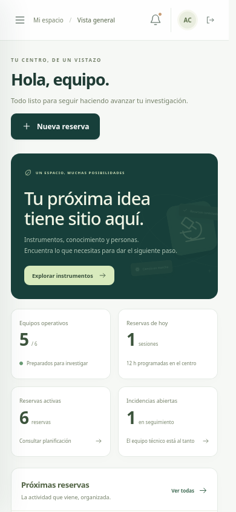

MANUAL DE CONSTRUCCIÓN · TypeScript, HTML, CSS y SQLite
Construye SG-CICT por tu cuenta
Explicación por archivo y código completo de referencia.
Índice enlazado
1 · Cómo utilizar este libro
Una ruta para aprender, construir y consultar sin depender del chat.
Volver al índice
Este manual está escrito para que puedas reconstruir por tu cuenta el prototipo SG-CICT que ya tienes funcionando. No presupone que conozcas un framework web. Parte de archivos, funciones, objetos, formularios y consultas SQL, y explica cómo esas piezas se conectan hasta producir una aplicación utilizable.
El punto de partida es tu carpeta prototipo. La guía documenta su versión actual, no una aplicación distinta. Incluye el código de todos los archivos de texto de la aplicación y su documentación original, más las capturas de referencia. La base SQLite y las sesiones de tu equipo son datos de ejecución: no se copian al manual ni al paquete de fuentes.
Tres formas de leerlo
| Objetivo | Cómo recorrer el manual |
|---|
| Construir desde cero | Sigue los capítulos en orden. Escribe los archivos en una carpeta nueva llamada sg-cict-aprendizaje y comprueba cada etapa. |
| Entender una función | Busca el capítulo de su archivo y después consulta el código numerado del anexo A. |
| Cambiar una funcionalidad | Revisa primero el recorrido completo de la operación y las pruebas que fijan su comportamiento. |
Cómo interpretar el código
Los recuadros «Ejemplo didáctico» explican conceptos de forma reducida. Los recuadros con ruta y líneas proceden de tus archivos reales. El anexo A contiene la copia completa, sin omisiones: las líneas largas se parten visualmente, pero conservan su número original. No escribas los números ni las marcas de continuación dentro del archivo.
El HTML que acompaña al PDF mantiene los bloques seleccionables sin números añadidos al texto. El ZIP de fuentes conserva los archivos originales y permite comprobar lo que has escrito. Utiliza esos recursos para comparar; intenta explicar cada bloque antes de copiarlo.
Qué aprenderás
- Distinguir lo que ejecuta el navegador de lo que ejecuta Node.
- Definir datos con TypeScript y validar entradas que llegan por HTTP.
- Guardar cambios con SQLite, consultas preparadas y transacciones.
- Implementar reservas, disponibilidad técnica, cancelaciones e incidencias.
- Construir pantallas con HTML, CSS y eventos, sin un framework.
- Verificar reglas con pruebas que controlan el reloj y la base de datos.
Lo que representa esta aplicación
Es un prototipo educativo con cuentas, empresas, instrumentos y contratos ficticios. El acceso UCO se comprueba contra cuentas locales, sin conexión a Moodle. Los avisos se guardan en una bandeja y representan correos; no se envían mensajes reales. Las tarifas, el despliegue institucional y la comprobación normativa no están resueltos por este ejemplo.
Resultado de referencia: panel principal de administración.
2 · Preparar el entorno y la carpeta
Antes del primer archivo: terminal, versión de Node y comprobaciones.
Volver al índice
1. Comprueba Node
Comandos de comprobación
node --version
node -e "console.log(typeof require('node:sqlite').DatabaseSync)"
La primera orden debe mostrar una versión 24 o superior; el prototipo original se verificó con Node 26.13.1. La segunda debe mostrar function. Node es el programa que ejecutará el servidor TypeScript, atenderá peticiones y abrirá SQLite. El navegador será otro programa distinto que visitará la dirección local.
Si Node no está instalado o es demasiado antiguo, utiliza el instalador o gestor de versiones de tu sistema. La aplicación no necesita npm para arrancar. No mezcles la ausencia de npm con un fallo de Node: todos los comandos principales de esta guía se ejecutan directamente con node.
2. Crea un espacio independiente
Linux y macOS: preparar directorios
mkdir -p sg-cict-aprendizaje/src sg-cict-aprendizaje/public sg-cict-aprendizaje/tests
mkdir -p sg-cict-aprendizaje/scripts sg-cict-aprendizaje/docs/capturas sg-cict-aprendizaje/data
cd sg-cict-aprendizaje
PowerShell: preparar directorios
New-Item -ItemType Directory -Force sg-cict-aprendizaje
Set-Location sg-cict-aprendizaje
New-Item -ItemType Directory -Force src,public,tests,scripts,docs,docs/capturas,data
Puedes crear archivos desde tu editor. No es necesario crear archivos vacíos con un comando antes de escribirlos: guardar un documento nuevo con la ruta correcta produce el mismo resultado. Mantén activada la visualización de extensiones para evitar nombres como server.ts.txt.
3. Distingue ruta actual y ruta del archivo
La orden node src/server.ts se interpreta desde la carpeta actual de la terminal. Si estás en proyecto-git, primero debes entrar en prototipo. Si estás dentro de prototipo, no vuelvas a anteponer prototipo/. Un error Cannot find module suele indicar esa confusión o un nombre de archivo incorrecto.
Ejecutar desde la raíz de tu aplicación
pwd
ls
node src/server.ts
4. Aprende a detener y a cambiar el puerto
El servidor ocupa la terminal porque sigue esperando peticiones. Detenerlo con Ctrl+C es normal. No necesitas arrancar otra copia cada vez que recargas el navegador. Una nueva ejecución en el mismo puerto mientras sigue abierta la anterior produce EADDRINUSE.
Otra instancia en Linux/macOS
PORT=4300 node src/server.ts
Otra instancia en PowerShell
$env:PORT = '4300'
node src/server.ts
5. Trabaja con cambios pequeños
- Escribe un archivo y comprueba que las importaciones apuntan a archivos existentes.
- Ejecuta una comprobación apropiada para esa etapa.
- Anota qué has añadido y el resultado que has observado.
- Guarda una versión cuando una etapa funcione; evita reunir todos los cambios en un único commit final.
3 · Mapa de la aplicación y orden de construcción
Qué depende de qué y por qué no conviene empezar por la pantalla más grande.
Volver al índice
Una petición completa
Navegador
HTML + CSS + JSServidor HTTP
server.tsReglas y acceso
system.ts / auth.tsPersistencia
SQLite
El navegador no abre el archivo SQLite ni decide si una prioridad UCO es válida. Recoge datos y pide una operación. El servidor identifica al usuario, aplica reglas y devuelve un resultado. Esta separación permite comprobar una regla sin abrir un navegador y evita confiar en valores que cualquiera puede modificar desde las herramientas del cliente.
| Etapa | Archivos | Resultado de la etapa |
|---|
| 1 · Contratos | package.json, .gitignore, src/model.ts | Datos y nombres de estados definidos. |
| 2 · Datos y tiempo | src/time.ts, src/schema.sql, src/database.ts | Fechas válidas y una base que se puede abrir. |
| 3 · Acceso y semilla | src/auth.ts, src/seed.ts | Cuentas ficticias y sesiones utilizables. |
| 4 · Reglas | src/system.ts | Operaciones completas probables desde TypeScript. |
| 5 · Entrada web | src/server.ts, public/index.html y archivos públicos | Servidor local y documento servido por HTTP. |
| 6 · Interfaz | public/ui.ts, public/views.ts, public/app.ts, public/styles.css | Recorridos completos desde formularios. |
| 7 · Verificación | tests/*.test.ts, scripts/check.ts | Reglas y persistencia verificables. |
| 8 · Referencia | scripts/reset.ts, scripts/browser-check.ts, README y docs | Demostración repetible y documentación. |
El servidor prepara tres módulos del navegador al construirse: app.ts, ui.ts y views.ts. Por eso, al probar server.ts por primera vez deben existir esos tres archivos, aunque al principio contengan solo export {}. Es un andamio temporal. Sustitúyelos por sus versiones completas al construir la interfaz.
Contenido temporal de cada módulo público todavía no escrito
export {};
Los archivos que no escribes a mano
| Archivo o grupo | Cómo aparece |
|---|
| data/prototipo.sqlite | Lo crea openDatabase al arrancar por primera vez. |
| data/prototipo.sqlite-wal y -shm | Los puede crear SQLite al utilizar WAL. Son archivos auxiliares. |
| data/backups/*.sqlite | Los crea reset.ts antes de reiniciar una base existente. |
| docs/capturas/*.png | Los genera la revisión del navegador o una captura manual. |
| data/.gitkeep | Archivo vacío para conservar el directorio en Git. |
No abras SQLite como si fuese código de texto ni copies una base con sesiones al paquete que vas a compartir. El esquema y la semilla son los que permiten reproducir la demostración.
4 · TypeScript y web: lo necesario para leer el código
Sintaxis que aparece realmente en este proyecto, con ejemplos pequeños.
Volver al índice
Variables, objetos y funciones
Ejemplo didáctico
const nombre: string = 'Balanza';
let disponible: boolean = true;
function horas(inicio: number, fin: number): number {
return (fin - inicio) / 3_600_000;
}
const impide reasignar la variable; no convierte un objeto en inmutable. let permite reasignarla. El texto después de dos puntos describe un tipo para el desarrollo. La función recibe argumentos, calcula y devuelve un valor. En este proyecto los instantes son números de milisegundos, no objetos Date guardados dentro de SQLite.
Interfaces, uniones y valores nulos
Ejemplo didáctico
type Estado = 'confirmada' | 'cancelada';
interface Ejemplo {
id: number;
estado: Estado;
tecnicoId: number | null;
nombreVisible?: string;
}
La unión limita los nombres que expresa el programa. null significa que el campo tiene explícitamente ausencia de valor. El signo ? indica que la propiedad puede no estar presente; es útil cuando el servidor omite datos por privacidad. Ninguna de estas anotaciones valida automáticamente el JSON recibido por HTTP.
Importaciones de ejecución y de tipos
Ejemplo didáctico
import { DomainError } from './model.ts';
import type { User } from './model.ts';
DomainError es una clase que se necesita al ejecutar el programa. User es una descripción que desaparece cuando se eliminan los tipos. En los módulos del navegador se importan ui.js y views.js porque el servidor entrega JavaScript, aunque los originales se llamen ui.ts y views.ts.
El símbolo !, as y as unknown as
Un ! al final, como document.querySelector(... )!, afirma al analizador que el resultado no es nulo. No crea el elemento ni lo comprueba. La expresión as cambia la interpretación de tipos; tampoco transforma ni valida los datos. as unknown as aparece para interpretar filas de SQLite como interfaces conocidas. Su seguridad depende de que la consulta y el esquema coincidan.
Operadores que verás a menudo
| Expresión | Significado práctico |
|---|
| a?.b | Lee b solo si a no es null ni undefined. |
| a ?? otro | Usa otro cuando a es null o undefined. |
| a || otro | Usa otro ante cualquier valor falsy, incluido 0 o cadena vacía. |
| ...objeto | Copia sus propiedades en otro objeto. |
| condicion ? x : y | Escoge una de dos expresiones. |
| value => value.id | Función flecha que recibe un valor y devuelve su id. |
Colecciones: map, filter, find, every y some
Ejemplo didáctico
const confirmadas = reservas.filter(r => r.estado === 'confirmada');
const ids = confirmadas.map(r => r.id);
const primera = confirmadas.find(r => r.id === 7);
const hayAlguna = confirmadas.some(r => r.tecnicoId === 4);
const todasPropias = confirmadas.every(r => r.usuarioId === 2);
map transforma, filter conserva coincidencias y find devuelve la primera o undefined. some responde si hay alguna coincidencia; every exige que todas cumplan la condición. every sobre una lista vacía devuelve true: en la asignación de técnicos esto permite considerar libre a quien no tiene citas incompatibles.
Promesas y async/await
Una petición fetch no produce su respuesta inmediatamente. async hace que una función devuelva una promesa; await espera ese resultado dentro de la función sin convertir la red en una operación síncrona. La base del prototipo sí utiliza DatabaseSync: sus llamadas ocupan el proceso mientras se ejecutan. No mezcles ambas ideas al escribir una transacción.
HTML, DOM y CSS
HTML describe la estructura; el DOM es la representación de ese documento que puede consultar JavaScript. CSS decide la presentación. Una clase como button primary se utiliza para estilo. Un atributo como data-action="book" identifica una interacción. Un id como purpose relaciona un label con su campo y permite encontrarlo dentro del diálogo.
HTTP, JSON y estados
GET consulta. POST solicita un cambio. JSON representa los datos que se intercambian. Una respuesta 200 indica consulta u operación correcta; 201, creación; 400, entrada inválida; 401, falta de acceso autenticado; 403, permiso insuficiente; 409, conflicto. Un error de negocio comprensible no debería transformarse en un fallo interno 500.
5 · Configuración: package.json y .gitignore
Los dos archivos pequeños que dan contexto al resto.
Volver al índice
Qué vas a crear y dónde encaja
| Archivo | Responsabilidad |
|---|
| package.json | Identidad del proyecto, módulos ES, versión mínima y comandos abreviados. |
| Antes de escribirlo | Node instalado y directorios creados. |
| Al terminar | Node reconoce los .ts como módulos del proyecto y tienes los comandos documentados. |
Crea este archivo con el nombre y la extensión indicados, guarda el texto en UTF-8 y conserva la ruta relativa. El código íntegro aparece en el anexo A; los números de línea corresponden a esa copia exacta. Los ejemplos breves del capítulo sirven para comprender una idea y no sustituyen por sí solos el archivo completo.
package.json · líneas 1–14
{
"name": "sg-cict-prototipo",
"version": "0.1.0",
"private": true,
"type": "module",
"description": "Prototipo educativo del SG-CICT en TypeScript, HTML y CSS, sin dependencias externas.",
"engines": { "node": ">=24.0.0" },
"scripts": {
"start": "node src/server.ts",
"dev": "node --watch src/server.ts",
"test": "node --test --test-isolation=none tests/*.test.ts",
"check": "node scripts/check.ts"
}
}
- Escribe un objeto JSON válido: claves entre comillas dobles, comas entre propiedades y sin comentarios.
- Incluye type: module para que las importaciones y exportaciones se interpreten como módulos ES.
- Declara engines para explicar la versión mínima. Ese campo orienta; no actualiza tu instalación de Node.
- Define start, dev, test y check. Son atajos para quien tenga npm, no dependencias necesarias para arrancar.
private: true evita publicar accidentalmente este paquete con los flujos habituales de npm. No hace privada una web ni aplica permisos a los datos. La versión 0.1.0 describe el paquete, mientras que los cambios de tablas necesitan su propio tratamiento de esquema.
.gitignore: qué debe quedarse fuera
.gitignore · líneas 1–7
data/*.sqlite*
data/*.db*
data/backups/
node_modules/
coverage/
*.log
.DS_Store
Las reglas excluyen las bases y sus auxiliares, las copias, node_modules y archivos de ejecución. El esquema schema.sql y la semilla seed.ts sí deben guardarse porque permiten reproducir los datos. Un archivo ya seguido por Git no deja de estarlo solo por añadirlo después a .gitignore.
Comprobación
Ejemplo didáctico
node -e "console.log(JSON.parse(require('node:fs').readFileSync('package.json','utf8')).type)"
Debe mostrar module. Si aparece un error de JSON, revisa comas y comillas antes de buscar fallos en TypeScript.
6 · src/model.ts: el vocabulario de los datos
Escribe primero los contratos que compartirán los demás módulos.
Volver al índice
Qué vas a crear y dónde encaja
| Archivo | Responsabilidad |
|---|
| src/model.ts | Describir datos, entradas, vistas y errores esperados. |
| Antes de escribirlo | Los estados y perfiles del sistema están acordados. |
| Al terminar | Otros archivos pueden importar tipos sin duplicar estructuras. |
Crea este archivo con el nombre y la extensión indicados, guarda el texto en UTF-8 y conserva la ruta relativa. El código íntegro aparece en el anexo A; los números de línea corresponden a esa copia exacta. Los ejemplos breves del capítulo sirven para comprender una idea y no sustituyen por sí solos el archivo completo.
Cómo escribirlo, en orden
- Define Role con los seis perfiles exactos: admin, uco, externo, tecnico, contable y consulta.
- Define BookingStatus con confirmada, cancelada, desplazada, en_uso y finalizada.
- Escribe User e Instrument: representan las cuentas y el catálogo.
- Escribe Booking: guarda intervalos, relaciones, estado, tipo y uso real.
- Añade BookingView, que incorpora nombres de presentación y la marca own.
- Escribe Incident, Notification, ReportRow y Snapshot.
- Termina con BookingInput y la clase DomainError.
| Tipo | Qué significa y qué debes vigilar |
|---|
| User | active es 0/1 porque procede de SQLite. El rol controla operaciones y las fechas delimitan el contrato. No contiene passwordHash. |
| Instrument | needsTechnician es 0/1. El estado persistente solo es disponible o averiado; mantenimiento se representa como reserva. |
| Booking | userId e instrumentId son referencias. technicianId, actualStart y actualEnd pueden ser null. |
| BookingView | Añade datos calculados al consultar. userName y company son opcionales por privacidad. |
| Incident | La resolución y resolvedAt son null mientras el parte sigue abierto. El nombre del equipo procede de una unión SQL. |
| Notification | readAt diferencia leído y pendiente. El destinatario está identificado por userId. |
| ReportRow | Separa uso real y cancelación tardía. totalHours es una agregación, no un importe. |
| Snapshot | Agrupa el estado que la interfaz necesita después de aplicar permisos. |
| BookingInput | Recibe fecha local como texto y un identificador; no acepta decidir el propietario. |
src/model.ts · líneas 14–25
id: number; userId: number; instrumentId: number; technicianId: number | null;
startsAt: number; endsAt: number; status: BookingStatus; kind: 'experimento' | 'mantenimiento';
purpose: string; actualStart: number | null; actualEnd: number | null;
cancelledAt: number | null; billableCancellation: number; createdAt: number;
}
export interface BookingView extends Booking {
instrumentName: string; room: string; code: string; own: boolean;
userName?: string; company?: string; technicianName: string | null;
}
export interface Incident {
id: number; instrumentId: number; userId: number; description: string;
createdAt: number; resolvedAt: number | null; resolution: string | null;
extends Booking evita repetir todos los campos de la reserva en BookingView. La palabra own no viene de una casilla que marque el navegador: el servidor la calcula comparando el propietario con la persona autenticada.
DomainError: un error que el servidor sabe explicar
src/model.ts · líneas 44–48
}
export class DomainError extends Error {
status: number;
constructor(message: string, status = 400) { super(message); this.status = status; }
}
La clase hereda de Error y añade status. El valor por defecto es 400. Al crear DomainError con 409 expresas un conflicto conocido; al crear un Error inesperado de programación, el servidor lo trata como fallo interno. El nombre de la clase permite distinguir ambos con instanceof.
Comprueba que lo entiendes
- Explica por qué actualEnd es null antes de terminar la sesión.
- Explica por qué passwordHash no debe formar parte de User público.
- Distingue la entrada BookingInput de la fila Booking y de la vista BookingView.
7 · src/time.ts: fechas, zonas e intervalos
La misma hora escrita puede representar instantes distintos en invierno y verano.
Volver al índice
Qué vas a crear y dónde encaja
| Archivo | Responsabilidad |
|---|
| src/time.ts | Convertir fechas de Madrid, comparar intervalos y validar franjas. |
| Antes de escribirlo | DomainError ya existe. |
| Al terminar | Una reserva puede validar su fecha sin depender del navegador. |
Crea este archivo con el nombre y la extensión indicados, guarda el texto en UTF-8 y conserva la ruta relativa. El código íntegro aparece en el anexo A; los números de línea corresponden a esa copia exacta. Los ejemplos breves del capítulo sirven para comprender una idea y no sustituyen por sí solos el archivo completo.
Constantes y formato local
HOUR equivale a 3 600 000 milisegundos y DAY a 24 horas de duración. TIMEZONE fija Europe/Madrid. El formato sv-SE se usa para obtener números en orden año-mes-día; la zona horaria se fija explícitamente y no depende del idioma del usuario.
src/time.ts · líneas 1–14
import { DomainError } from './model.ts';
export const HOUR = 3_600_000;
export const DAY = 24 * HOUR;
export const TIMEZONE = 'Europe/Madrid';
const clock = new Intl.DateTimeFormat('sv-SE', {
timeZone: TIMEZONE, year: 'numeric', month: '2-digit', day: '2-digit',
hour: '2-digit', minute: '2-digit', second: '2-digit', hourCycle: 'h23',
});
export function localDateTime(timestamp: number): string {
return clock.format(new Date(timestamp)).replace(' ', 'T').slice(0, 16);
}
localDateTime convierte un instante numérico a texto local AAAA-MM-DDTHH:mm. El reemplazo cambia el espacio por T y slice elimina los segundos. Este texto sirve para formularios y comparaciones de hora cuando se ha verificado antes su estructura.
parseLocalDateTime paso a paso
- Rechaza entradas que no sean texto con la forma exacta esperada.
- Extrae año, mes, día, hora y minuto y conviértelos en números.
- Aplica límites sencillos al año, mes, hora y minuto.
- Construye una referencia con Date.UTC; todavía no es la respuesta local definitiva.
- Formatea el candidato en Madrid, calcula la diferencia respecto al objetivo y corrige el instante.
- Repite la corrección hasta tres veces.
- Comprueba que el resultado vuelve exactamente al texto original; así se rechazan fechas normalizadas como un 30 de febrero.
La corrección es necesaria porque 10:00 en Madrid corresponde a 09:00 UTC en invierno y a 08:00 UTC en verano. No restes siempre una hora: esa simplificación falla varios meses del año. El formulario de reservas solo permite 08–20, lejos de la franja nocturna donde cambia el reloj; el prototipo no pretende ser una biblioteca general para desambiguar cualquier hora nocturna de cambio estacional.
Intervalos semiabiertos
src/time.ts · líneas 35–38
/** Intervalos semiabiertos: acabar a las 11 permite que otro empiece a las 11. */
export function overlaps(aStart: number, aEnd: number, bStart: number, bEnd: number): boolean {
return aStart < bEnd && bStart < aEnd;
}
Ejemplo didáctico
overlaps(8, 10, 10, 12) // false
overlaps(8, 11, 10, 12) // true
Para solapar, el inicio de cada intervalo tiene que quedar antes del final del otro. Usar < permite que una reserva termine a las 11:00 y otra empiece a las 11:00. La misma desigualdad aparece en las consultas SQL de disponibilidad; mantenerlas equivalentes evita resultados contradictorios.
validateSlot y monthRange
validateSlot convierte ambas fechas, rechaza un inicio anterior a now, un fin no posterior y una franja fuera de 08–20 o que cruza de día. Fíjate en el detalle del código: start < now permite igualdad exacta con el reloj, aunque el mensaje diga futuro. En una interfaz que envía minutos y un reloj con segundos, esa igualdad es poco habitual. Si necesitas futuro estrictamente posterior, cambia la comparación y añade una prueba del límite.
monthRange recibe AAAA-MM, valida mes y año y devuelve el primer instante del mes y el primer instante del siguiente. El límite de fin es exclusivo. En diciembre calcula enero del año posterior. No supone que todos los meses duren treinta días ni que un mes tenga siempre el mismo número de horas.
Comprueba la conversión sin arrancar el servidor
Ejemplo didáctico
node --input-type=module -e "import {parseLocalDateTime} from './src/time.ts'; console.log(new Date(parseLocalDateTime('2026-07-15T10:00')).toISOString())"
El resultado para ese ejemplo de verano es 2026-07-15T08:00:00.000Z. Cambiar la fecha por invierno debe cambiar el desfase, no la hora de Madrid que has solicitado.
8 · src/schema.sql: diseñar la persistencia
Las tablas guardan hechos; sus restricciones evitan estados inválidos básicos.
Volver al índice
Qué vas a crear y dónde encaja
| Archivo | Responsabilidad |
|---|
| src/schema.sql | Crear tablas, relaciones, restricciones e índices. |
| Antes de escribirlo | Conoces User, Instrument y Booking. |
| Al terminar | SQLite puede guardar el dominio con claves externas y estados definidos. |
Crea este archivo con el nombre y la extensión indicados, guarda el texto en UTF-8 y conserva la ruta relativa. El código íntegro aparece en el anexo A; los números de línea corresponden a esa copia exacta. Los ejemplos breves del capítulo sirven para comprender una idea y no sustituyen por sí solos el archivo completo.
Cómo escribir una tabla
src/schema.sql · líneas 1–9
PRAGMA foreign_keys = ON;
CREATE TABLE IF NOT EXISTS users (
id INTEGER PRIMARY KEY, name TEXT NOT NULL, email TEXT NOT NULL UNIQUE COLLATE NOCASE,
role TEXT NOT NULL CHECK(role IN ('admin','uco','externo','tecnico','contable','consulta')),
company TEXT NOT NULL, passwordHash TEXT NOT NULL,
contractStart INTEGER NOT NULL, contractEnd INTEGER NOT NULL,
active INTEGER NOT NULL DEFAULT 1 CHECK(active IN (0,1)), CHECK(contractEnd >= contractStart)
);
CREATE TABLE IF NOT EXISTS instruments (
INTEGER PRIMARY KEY es el identificador de una fila. NOT NULL exige un valor. UNIQUE impide repetir el correo y COLLATE NOCASE hace que su comparación ignore diferencias habituales entre mayúsculas y minúsculas. CHECK limita perfiles, valores 0/1 y el orden de las fechas del contrato.
Las siete tablas, una a una
| Tabla | Campos y decisión principal |
|---|
| users | Cuenta y contrato. passwordHash guarda sal y resultado de scrypt; nunca la contraseña en texto. |
| instruments | Catálogo, sala, técnica y supervisión. No se crea una reserva de sala exclusiva. |
| bookings | Referencias a usuario, instrumento y técnico; fechas previstas/reales, tipo, estado y cancelación. |
| incidents | Parte vinculado al equipo y a quien lo abre. Puede permanecer sin resolución. |
| notifications | Bandeja por destinatario con fecha de lectura. No es una tabla de correos enviados realmente. |
| sessions | Token resumido, persona, CSRF y caducidad. El token original solo viaja en la cookie. |
| activity | Eventos breves para el panel. No pretende ser una auditoría completa e inmutable. |
Claves externas e índices
REFERENCES users(id) exige que exista la cuenta referenciada cuando las claves externas están activas. La reserva conserva identificadores estables, no copias del nombre. Los índices combinan instrumento/tiempo y técnico/tiempo porque esas son las condiciones que se consultan al comprobar conflictos.
El índice acelera la búsqueda, pero no hace por sí solo que dos intervalos no se solapen. Esa regla exige una consulta y una decisión dentro de una transacción. Tampoco un CHECK comprueba toda la máquina de estados: las operaciones de CictSystem deciden qué transición está permitida.
Por qué varias columnas son INTEGER y no una fecha SQL
Se guardan instantes en milisegundos para comparar duraciones sin mezclar formatos de texto. La interpretación local de un formulario ocurre antes, en time.ts. actualStart y actualEnd son null hasta que se registran; billableCancellation y active usan 0/1 para representar booleanos de forma explícita.
Comprobación incremental
Linux/macOS: comprobar el esquema sin crear una base persistente
node --input-type=module <<'JS'
import { DatabaseSync } from 'node:sqlite';
import { readFileSync } from 'node:fs';
const db = new DatabaseSync(':memory:');
db.exec(readFileSync('src/schema.sql', 'utf8'));
console.log(db.prepare("SELECT name FROM sqlite_master WHERE type='table'").all());
db.close();
JS
Si prefieres evitar las comillas anidadas de la terminal, escribe ese pequeño programa como scripts/comprobar-esquema.ts. El resultado debe incluir las siete tablas. El archivo temporal de comprobación no forma parte del prototipo original.
9 · src/database.ts: abrir y confirmar cambios
Un módulo pequeño que concentra la conexión y las transacciones.
Volver al índice
Qué vas a crear y dónde encaja
| Archivo | Responsabilidad |
|---|
| src/database.ts | Abrir SQLite y ejecutar una operación atómica. |
| Antes de escribirlo | schema.sql existe; los imports de Node están disponibles. |
| Al terminar | Las reglas reciben una conexión y pueden confirmar o revertir cambios. |
Crea este archivo con el nombre y la extensión indicados, guarda el texto en UTF-8 y conserva la ruta relativa. El código íntegro aparece en el anexo A; los números de línea corresponden a esa copia exacta. Los ejemplos breves del capítulo sirven para comprender una idea y no sustituyen por sí solos el archivo completo.
src/database.ts · líneas 1–17
import { DatabaseSync } from 'node:sqlite';
import { readFileSync } from 'node:fs';
export function openDatabase(path = ':memory:'): DatabaseSync {
const db = new DatabaseSync(path);
db.exec('PRAGMA foreign_keys = ON; PRAGMA busy_timeout = 5000;');
if (path !== ':memory:') db.exec('PRAGMA journal_mode = WAL;');
db.exec(readFileSync(new URL('./schema.sql', import.meta.url), 'utf8'));
return db;
}
/** Validar, modificar recursos y generar avisos forman una sola unidad atómica. */
export function transaction<T>(db: DatabaseSync, work: () => T): T {
db.exec('BEGIN IMMEDIATE');
try { const result = work(); db.exec('COMMIT'); return result; }
catch (error) { db.exec('ROLLBACK'); throw error; }
}
openDatabase explicado
El valor por defecto :memory: crea una base que vive solo durante esa conexión. Resulta útil para las pruebas. Una ruta real genera un archivo persistente. Se activan las claves externas y se fija busy_timeout para esperar un tiempo limitado cuando otro escritor ocupa la base.
En un archivo persistente se activa WAL, un modo de registro que puede producir archivos -wal y -shm. Después se lee schema.sql utilizando una URL relativa al propio módulo. Esta forma evita depender de la carpeta desde la que se haya lanzado la terminal para localizar el esquema.
transaction explicado
- BEGIN IMMEDIATE inicia una transacción que solicita desde el comienzo el acceso de escritura.
- Se ejecuta work, una función que devuelve el resultado de la operación.
- Si todo termina correctamente, COMMIT confirma.
- Si cualquier parte lanza una excepción, ROLLBACK revierte y se vuelve a lanzar el mismo error.
La función genérica <T> significa que conserva el tipo del resultado de work. No fija que siempre devuelva un número. Una reserva puede devolver su id; una reparación puede no devolver contenido. Esta envoltura está diseñada para trabajo síncrono: no pases una función async que salga del bloque antes de completar sus escrituras.
Ejemplo de uso
Ejemplo didáctico
const id = transaction(db, () => {
const result = db.prepare('INSERT INTO ... VALUES (?)').run(valor);
return Number(result.lastInsertRowid);
});
La sentencia INSERT de este recuadro está abreviada a propósito y no es ejecutable: sirve para ver la forma de uso. El INSERT real de reservas aparece en system.ts y en su anexo. No anides llamadas a esta envoltura porque BEGIN/COMMIT no se anidan directamente.
Qué debes comprobar
- Una inserción válida queda guardada tras confirmar.
- Una excepción en medio de dos escrituras no deja la primera confirmada.
- Siempre cierras las conexiones de prueba al terminar.
10 · src/auth.ts: cuentas, contraseñas y sesiones
Autenticar identifica; autorizar decide qué puede hacer esa identidad.
Volver al índice
Qué vas a crear y dónde encaja
| Archivo | Responsabilidad |
|---|
| src/auth.ts | Verificar credenciales, contrato y sesiones con caducidad. |
| Antes de escribirlo | User, DomainError, HOUR y una conexión SQLite. |
| Al terminar | Puedes iniciar, comprobar y cerrar una sesión sin abrir la interfaz. |
Crea este archivo con el nombre y la extensión indicados, guarda el texto en UTF-8 y conserva la ruta relativa. El código íntegro aparece en el anexo A; los números de línea corresponden a esa copia exacta. Los ejemplos breves del capítulo sirven para comprender una idea y no sustituyen por sí solos el archivo completo.
USER_COLUMNS evita devolver el resumen de contraseña
La constante lista las columnas públicas de una cuenta. login necesita leer passwordHash para verificar, pero después vuelve a consultar solo las columnas públicas. No devuelvas directamente SELECT * FROM users al navegador: mezclarías datos operativos con el secreto derivado de la contraseña.
hashPassword y verifyPassword
src/auth.ts · líneas 1–16
import { randomBytes, scryptSync, timingSafeEqual, createHash } from 'node:crypto';
import type { DatabaseSync } from 'node:sqlite';
import type { User } from './model.ts';
import { DomainError } from './model.ts';
import { HOUR } from './time.ts';
export const USER_COLUMNS = 'id, name, email, role, company, contractStart, contractEnd, active';
export function hashPassword(password: string): string {
const salt = randomBytes(16).toString('hex');
return salt + ':' + scryptSync(password, salt, 64).toString('hex');
}
export function verifyPassword(password: string, stored: string): boolean {
const [salt, hash] = stored.split(':');
const actual = scryptSync(password, salt, 64), expected = Buffer.from(hash, 'hex');
return expected.length === actual.length && timingSafeEqual(expected, actual);
}
randomBytes crea una sal aleatoria de 16 bytes. Se convierte a hexadecimal para guardarla como texto. scryptSync deriva 64 bytes a partir de contraseña y sal. El resultado almacenado tiene forma sal:resumen. Dos personas con la misma contraseña no deberían obtener el mismo texto almacenado gracias a las sales distintas.
Verificar separa ambos componentes, vuelve a derivar y compara con timingSafeEqual, después de comprobar longitud. Un resumen no se descifra para recuperar la contraseña. La sal no tiene que ocultarse; su función es evitar que todas las cuentas compartan el mismo cálculo base.
assertAccess: quién puede entrar ahora
Primero se rechaza una cuenta desactivada. Para uco y externo, también se exige que now esté dentro del contrato. Los perfiles internos del ejemplo no están sujetos a esa comprobación de contrato. Las operaciones posteriores vuelven a comprobar el acceso para aplicar cambios de vigencia durante una sesión.
La clase Auth y la dependencia now
El constructor recibe db y una función de reloj. En ejecución normal se usa Date.now. En una prueba se pasa una función que devuelve un instante fijo. Así puedes probar ocho horas de caducidad sin esperar ocho horas y un contrato vencido sin depender del día real de tu ordenador.
digest es la ayuda que calcula SHA-256 del token para guardarlo y buscarlo sin persistir el valor original de la cookie.
login, paso por paso
- Normaliza el correo con trim y minúsculas y busca la fila con una consulta preparada.
- Calcula también un scrypt ficticio si no existe la cuenta; evita responder de forma trivialmente más rápida solo por esa ausencia.
- Si el resultado es incorrecto, lanza un 401 genérico de credenciales.
- Comprueba cuenta activa y vigencia del contrato.
- Obtiene la versión pública de User.
- Genera un token aleatorio de 32 bytes y un CSRF de 24.
- Elimina sesiones ya caducadas.
- Guarda el SHA-256 del token, userId, csrf y fecha de caducidad a ocho horas.
- Devuelve el token al nivel HTTP para la cookie y los datos públicos al cliente.
La cookie identifica la sesión. El token CSRF es otro valor que la aplicación devuelve y exige en las escrituras. No son contraseñas adicionales que el usuario tenga que teclear. Sus controles se completan en server.ts: HttpOnly, SameSite, origen y comprobación de la cabecera.
session y logout
session resume el token recibido, busca una sesión aún vigente y carga de nuevo la cuenta. assertAccess vuelve a aplicarse. logout borra la fila que coincide con el resumen del token. Borrar solo una variable de JavaScript no cerraría una sesión que siga existiendo en el servidor.
Comprobación después de crear la semilla
Ejemplo didáctico
const auth = new Auth(db, () => instanteDePrueba);
const session = auth.login('uco@demo.local', 'Demo2026!');
console.log(session.user.role); // uco
auth.logout(session.token);
11 · src/seed.ts: preparar una demostración reproducible
Los datos iniciales explican cómo probar funciones sin inventarlos cada vez.
Volver al índice
Qué vas a crear y dónde encaja
| Archivo | Responsabilidad |
|---|
| src/seed.ts | Insertar cuentas, equipos y recorridos ficticios en una base vacía. |
| Antes de escribirlo | database.ts, hashPassword y conversiones de tiempo. |
| Al terminar | Una base nueva tiene personas y ejemplos para explorar todos los perfiles. |
Crea este archivo con el nombre y la extensión indicados, guarda el texto en UTF-8 y conserva la ruta relativa. El código íntegro aparece en el anexo A; los números de línea corresponden a esa copia exacta. Los ejemplos breves del capítulo sirven para comprender una idea y no sustituyen por sí solos el archivo completo.
La condición de entrada importa
La función consulta cuántas cuentas hay y termina si ya existe alguna. No se ejecuta otra vez en cada recarga ni sobrescribe las reservas que hayas creado. Sus datos se insertan dentro de una transacción. Una semilla no es un sincronizador de cambios: editarla no actualiza por arte de magia una base ya poblada.
Escribe las cuentas
La lista accounts contiene nombre, identificador de acceso, perfil y entidad. El correo añade @demo.local. Cada cuenta obtiene una sal y un resumen propios para Demo2026!. Siete cuentas están vigentes o son internas; caducado tiene el contrato vencido desde el día anterior. Son ejemplos públicos de la demostración, no credenciales institucionales.
Escribe el catálogo
Cada elemento describe nombre, código, técnica, sala, texto, supervisión, color e icono. La centrífuga comienza averiada y tiene un parte asociado. Las clases de color y los nombres de icono deben coincidir con styles.css y el catálogo de ui.ts, respectivamente.
Las fechas relativas y las reservas
slot toma una fecha relativa a now, la convierte a día local de Madrid y añade una hora. La función insert escribe una fila de reserva. Para las sesiones finalizadas añade inicio y fin reales, ligeramente diferentes de las horas previstas, de modo que el informe no pueda confundirse con una suma de horas programadas.
| Dato de ejemplo | Qué permite probar |
|---|
| UCO mañana, microscopio | Consulta de próximas reservas y técnico asignado. |
| Externo a diez días, microscopio | Desplazamiento por prioridad UCO. |
| Sesiones finalizadas uno y dos días antes | Informe con consumo real; puede estar en el mes anterior al inicio de mes. |
| Una sesión en uso si el primer arranque es entre 08–20 | Finalizar un uso real desde el perfil técnico sin esperar. |
| Centrífuga averiada | Reparación inmediata y reapertura del recurso. |
Por qué la semilla inserta directamente
Los ejemplos históricos no podrían crearse hoy mediante createBooking, que impide reservar en el pasado. La semilla prepara un estado ficticio inicial de forma explícita; las operaciones normales sí pasan por el módulo de reglas. No copies esta excepción para saltarte validaciones en una petición real.
Comprobación incremental
Ejemplo didáctico
node --input-type=module -e "import {openDatabase} from './src/database.ts'; import {seedDatabase} from './src/seed.ts'; const db=openDatabase(); seedDatabase(db); console.log(db.prepare('SELECT id,email,role FROM users').all()); db.close();"
Debes ver ocho cuentas. Llamar dos veces a seedDatabase en esa misma conexión no debe duplicarlas. No imprimas passwordHash para comprobar que hay usuarios: las columnas públicas bastan.
12 · src/system.ts: implementar las reglas completas
El centro del proyecto: una operación pública representa una intención del usuario.
Volver al índice
Qué vas a crear y dónde encaja
| Archivo | Responsabilidad |
|---|
| src/system.ts | Validar y ejecutar reservas, incidencias, contratos e informes. |
| Antes de escribirlo | Modelo, tiempo, acceso y transacciones disponibles. |
| Al terminar | Las funcionalidades pueden probarse sin HTML ni servidor HTTP. |
Crea este archivo con el nombre y la extensión indicados, guarda el texto en UTF-8 y conserva la ruta relativa. El código íntegro aparece en el anexo A; los números de línea corresponden a esa copia exacta. Los ejemplos breves del capítulo sirven para comprender una idea y no sustituyen por sí solos el archivo completo.
Cómo abordar un archivo de este tamaño
No intentes memorizar sus 245 líneas. Divide la escritura en cuatro grupos: ayudas y permisos; disponibilidad y reservas; incidencias y uso; usuarios, informes y vistas. Escribe un método, localiza sus consultas en el esquema y explica qué cambiaría si apareciera un error en cada punto. Después compáralo con el anexo.
Ayudas: requiredText y positiveId
requiredText recibe unknown porque los datos externos no merecen una confianza previa. Primero exige string; después comprueba la longitud del texto recortado y lo devuelve limpio. El orden del operador || evita ejecutar trim sobre un número o una ausencia de valor. positiveId convierte a Number y exige un entero seguro positivo.
src/system.ts · líneas 9–19
export function requiredText(value: unknown, label: string, min = 1, max = 300): string {
if (typeof value !== 'string' || value.trim().length < min || value.trim().length > max) {
throw new DomainError(label + ': escribe entre ' + min + ' y ' + max + ' caracteres.');
}
return value.trim();
}
export function positiveId(value: unknown): number {
const id = Number(value);
if (!Number.isSafeInteger(id) || id <= 0) throw new DomainError('El identificador no es válido.');
return id;
}
La conversión numérica no es una validación JSON de todos los detalles: por ejemplo, Number(true) produce 1. El prototipo rechaza identificadores no enteros o no positivos, pero no exige aquí que el tipo original sea number. Si vas a endurecer la entrada, comprueba también typeof value y añade pruebas para booleanos y cadenas. No atribuyas a esta función una garantía que no implementa.
Constructor, allow e identidad
CictSystem recibe db y now. allow aplica assertAccess y después verifica el rol, permitiendo al administrador superar la restricción de perfil. actor debe venir de una sesión ya autenticada; no lo construyas a partir del userId enviado en un formulario. Los métodos privados no son rutas HTTP: sirven a las operaciones del módulo.
| Ayuda privada | Lo que hace |
|---|
| instrument | Valida identificador, busca un instrumento y devuelve 404 si falta. |
| booking | Hace la misma búsqueda para una reserva. |
| log | Inserta una descripción de actividad con actor y hora. |
| notify | Inserta un aviso para su destinatario; no abre una conexión SMTP. |
plan: escribe la validación antes de la escritura
- Obtén kind: por defecto experimento, y rechaza cualquier otro texto salvo mantenimiento.
- Exige investigación UCO/externa para experimentos o perfil técnico para mantenimiento; admin conserva sus permisos.
- Convierte y valida la franja con validateSlot.
- Para investigadores, exige que el fin de la reserva quede dentro del contrato.
- Busca el instrumento y rechaza un experimento si está averiado.
- Consulta todas las citas activas del mismo instrumento que se solapan.
- Calcula cuáles pueden ser desplazadas por prioridad UCO.
- Si hay alguna incompatible que no pueda desplazarse, rechaza toda la operación.
- Si hace falta técnico, elige uno activo sin ocupación incompatible.
- Devuelve un plan con recurso, instantes, técnico y reservas a desplazar; todavía no escribas cambios.
La consulta de solapamiento
La consulta de plan, distribuida para leerla
SELECT b.*, u.role AS ownerRole
FROM bookings b
JOIN users u ON u.id = b.userId
WHERE instrumentId = ?
AND startsAt < ?
AND endsAt > ?
AND status IN ('confirmada', 'en_uso')
El orden de los valores vinculados es instrumento, fin solicitado e inicio solicitado. La consulta pregunta si la reserva existente empieza antes de tu fin y termina después de tu inicio. No intercambies esos parámetros. JOIN incorpora el perfil del propietario para decidir la prioridad sin confiar en un dato enviado por el cliente.
Prioridad UCO: todas las condiciones son necesarias
- La solicitud nueva es un experimento y su actor es UCO.
- La cita anterior pertenece a un externo y también es de experimento.
- La cita anterior sigue confirmada: no se desplaza una sesión ya iniciada.
- Faltan estrictamente más de siete días de duración hasta el inicio de esa cita.
Se comparan las longitudes de displaced y conflicts. Si no coinciden, alguna cita no puede sustituirse y se rechaza el conjunto. Con cero conflictos ambas longitudes son cero y el plan puede continuar. El administrador no se convierte en investigador UCO por tener más permisos: la prioridad depende del tipo de solicitante.
Exactamente siete días protege la reserva externa. Se trata de una decisión documentada para el punto abierto de vuestra P2. DAY es una duración de 24 horas; esta comparación significa más de 168 horas, no contar siete cambios de fecha en un calendario.
Asignación de técnicos
Se consultan técnicos activos ordenados por id. Para cada candidato se comprueban sus intervalos confirmados o en uso, aunque sean de otro instrumento. Se considera disponible si todas sus citas incompatibles pertenecen al conjunto que esta misma operación va a desplazar. Esto evita rechazar al técnico que quedará libre al sustituir una reserva externa.
En mantenimiento, un técnico solo programa su propia intervención; administración puede encontrar un técnico libre automáticamente. En experimentos que no lo requieren, technicianId queda null. No hay calendario de bajas ni especialidades en esta versión: la disponibilidad se simplifica a perfil activo, horario y ocupación.
availability: informar sin guardar
Utiliza plan y devuelve mensaje, número de desplazamientos y si se asignaría técnico. No inserta reservas ni avisos. La comprobación previa no bloquea la franja: createBooking debe repetirla. No implementes una confirmación que acepte simplemente el resultado anterior del navegador.
createBooking: confirmar como una sola unidad
- Valida el motivo antes de entrar en la transacción.
- Dentro de la transacción vuelve a construir el plan.
- Marca las citas desplazadas y avisa a sus propietarios.
- Inserta la nueva reserva confirmada con el actor autenticado como propietario.
- Convierte lastInsertRowid a number.
- Añade confirmación y actividad.
- Devuelve el id; transaction confirma todo o revierte todo.
src/system.ts · líneas 89–104
createBooking(actor: User, input: BookingInput): number {
const purpose = requiredText(input.purpose, 'Motivo', 5, 300);
return transaction(this.db, () => {
const plan = this.plan(actor, input);
for (const old of plan.displaced) {
this.db.prepare("UPDATE bookings SET status = 'desplazada' WHERE id = ?").run(old.id);
this.notify(old.userId, 'Reserva desplazada por prioridad UCO', 'La reserva #' + old.id + ' de ' + plan.item.name + ' ha sido desplazada al faltar más de siete días. Puedes elegir otra franja.');
}
const result = this.db.prepare("INSERT INTO bookings (userId,instrumentId,technicianId,startsAt,endsAt,status,kind,purpose,createdAt) VALUES (?,?,?,?,?,'confirmada',?,?,?)")
.run(actor.id, plan.item.id, plan.technicianId, plan.start, plan.end, plan.kind, purpose, this.now());
const id = Number(result.lastInsertRowid);
this.notify(actor.id, 'Reserva confirmada', 'Tu reserva #' + id + ' de ' + plan.item.name + ' está confirmada.');
this.log(actor.id, (plan.kind === 'mantenimiento' ? 'Mantenimiento programado · ' : 'Nueva reserva · ') + plan.item.name);
return id;
});
}
El id identifica la fila recién insertada, no su posición visual en una tabla. Si se produce un fallo al crear un aviso, no debe quedar confirmada una reserva sin su operación completa. La prueba de atomicidad simula precisamente ese fallo con un trigger de SQLite.
cancelBooking: propiedad, estado y antelación
Solo el propietario o administración puede cancelar. En mantenimiento, el propietario debe ser técnico si no es administrador. Se exige una cita confirmada cuyo inicio sea posterior a now. Después se compara la antelación con DAY: menos de 24 horas es facturable para experimentos; exactamente 24 no lo es. Se guarda fecha y marca, se avisa y se registra actividad.
Una cancelación facturable no ejecuta un pago. El informe utilizará la duración prevista de esa cita en una columna separada. No borres la fila: perderías la evidencia de cancelación y el dato que necesita contabilidad.
recordUsage: registrar hechos y evitar dobles usos
- Exige técnico o administrador; si no es admin, comprueba que el técnico esté asignado.
- Rechaza operaciones de uso sobre reservas de mantenimiento.
- Para start, exige confirmada y hora actual dentro de la franja.
- Comprueba que el instrumento no esté averiado y que equipo o técnico no tengan otra sesión real en curso.
- Guarda actualStart y estado en_uso.
- Para finish, exige un inicio real anterior y guarda actualEnd con estado finalizada.
- Añade actividad sin permitir un estado arbitrario enviado por el cliente.
El fin puede registrarse después de la franja prevista. El prototipo conserva el hecho real y bloquea otra sesión real incompatible mientras la anterior no se cierre. Una reserva futura puede estar planificada, pero no arrancará un uso real si el recurso continúa en uso. Para los equipos autónomos el administrador registra el uso en esta demostración.
createIncident: bloquear sin borrar citas
Se valida perfil y descripción. Dentro de una transacción se crea el parte, se marca el equipo como averiado, se buscan usuarios distintos con citas afectadas y se genera un aviso a cada uno. DISTINCT evita múltiples avisos iguales para una misma persona por tener varias reservas de ese equipo. Las citas se conservan y el mensaje explica que deben revisar el estado.
resolveIncident: resolver la última avería relevante
Solo técnico/admin. Se exige texto de resolución y un parte existente aún abierto. Se guarda su cierre y se busca cualquier otra incidencia abierta de ese instrumento. Solo si no queda ninguna se cambia a disponible y se avisa a usuarios con próximas citas confirmadas. Resolver un parte no equivale a resolver todos los del aparato.
createExternal, contractDates y updateContract
createExternal exige administrador, valida nombre, correo, empresa, contraseña y fechas, comprueba duplicidad e inserta siempre role externo. Aunque el cliente envíe role admin, el INSERT no lo utiliza. La contraseña inicial nueva requiere diez caracteres; la contraseña pública de la semilla es un ejemplo independiente de esas altas.
contractDates interpreta el primer día a las 00:00 y el último hasta las 23:59:59.999 de Madrid. updateContract solo opera sobre cuentas de investigación UCO/externas, exige active booleano y elimina sus sesiones para aplicar inmediatamente el cambio. Se conserva la cuenta y sus referencias históricas.
report: calcular consumo por periodo
- Exige contabilidad/admin y convierte el mes en límites de instantes.
- Consulta experimentos finalizados cuyo uso real se cruce con el mes.
- Incluye además cancelaciones tardías cuya sesión prevista pertenezca a ese mes.
- Agrupa con una clave userId:instrumentId.
- Para cada uso real, suma min(finReal, finMes) − max(inicioReal, inicioMes).
- Para cada cancelación tardía, suma la duración prevista de la reserva.
- Convierte de milisegundos a horas, redondea a dos decimales y devuelve filas.
La operación de recorte, con nombres explicativos
const horasEnMes = (
Math.min(finReal, finMes) - Math.max(inicioReal, inicioMes)
) / HOUR;
No sumes endsAt − startsAt para todos los casos: eso mediría tiempo reservado y no consumo real. Las sesiones en uso todavía no tienen fin y quedan fuera. Tampoco añadas mantenimiento al consumo de investigación ni conviertas las horas en euros sin una regla de tarifas acordada.
readNotifications y snapshot
readNotifications marca los avisos de la persona autenticada. snapshot consulta el estado visible: catálogo, reservas, incidencias, avisos, actividad y, solo para admin, cuentas. Para investigación y consulta, las reservas ajenas pierden nombre, empresa y motivo, y userId se sustituye por cero. La marca own se calcula antes de esa anonimización.
El perfil técnico, contable y administrador conserva la información operativa prevista en el prototipo. Un array users vacío en otro perfil es deliberado. Ocultar un nombre con CSS no sería equivalente: seguiría dentro de la respuesta JSON si no se eliminase aquí.
Comprobaciones que fijan este archivo
| Prueba | Qué debe conservarse |
|---|
| Solapamiento | Ninguna cita incompatible aceptada salvo prioridad permitida. |
| Técnicos | Dos equipos diferentes no utilizan el mismo técnico a la vez. |
| Atomicidad | Un fallo intermedio no deja un desplazamiento parcial. |
| Cancelación | La frontera de 24 horas no se redondea a días. |
| Avería | Varias incidencias requieren resolverlas todas. |
| Informe | Horas reales y cancelaciones no se confunden. |
| Privacidad | Los datos ajenos desaparecen del estado enviado, no solo de la pantalla. |
13 · src/server.ts: convertir operaciones en HTTP
Una ruta recibe una petición, no una persona ni un objeto ya validados.
Volver al índice
Qué vas a crear y dónde encaja
| Archivo | Responsabilidad |
|---|
| src/server.ts | Arrancar Node, servir recursos y conectar HTTP con las operaciones. |
| Antes de escribirlo | Todos los módulos de servidor y los tres archivos públicos existen. |
| Al terminar | Puedes visitar el documento y llamar a la aplicación por HTTP. |
Crea este archivo con el nombre y la extensión indicados, guarda el texto en UTF-8 y conserva la ruta relativa. El código íntegro aparece en el anexo A; los números de línea corresponden a esa copia exacta. Los ejemplos breves del capítulo sirven para comprender una idea y no sustituyen por sí solos el archivo completo.
Primer bloque: importaciones y rutas de archivos
Los módulos node:http, node:fs, node:path, node:url y node:module ya vienen con Node. ROOT se calcula a partir de la ubicación de server.ts, no de la terminal. Ese directorio sirve para localizar public, docs y data. Las funciones del dominio se importan de los archivos que has escrito antes.
json: responder de forma uniforme
La ayuda fija estado, Content-Type JSON y Cache-Control no-store, serializa con JSON.stringify y termina la respuesta. Si olvidas end, el navegador puede quedar esperando. Los datos se convierten a texto solo en la frontera HTTP; CictSystem trabaja con objetos y números.
readBody: limitar y analizar la entrada
- Exige Content-Type que comience por application/json.
- Lee los fragmentos con for await y los acumula.
- Rechaza un cuerpo que supere 16 KiB.
- Analiza JSON y exige un objeto no nulo que no sea array.
- Devuelve ese objeto; cada operación validará sus campos.
El análisis JSON no prueba que startsAt sea una fecha o que el rol tenga permiso. Son comprobaciones distintas. En este prototipo se espera JSON válido y texto UTF-8 de tamaño reducido. Una implementación pública tendría que revisar más aspectos del transporte y de los límites bajo carga.
cookieToken y csvCell
cookieToken busca cict_session en la cabecera Cookie y extrae su valor. La cadena cict_session= tiene 13 caracteres; slice(13) elimina ese prefijo. No confundas la cookie completa con el token que Auth.session necesita resumir.
csvCell convierte un valor a texto, antepone una comilla simple a comienzos que podrían interpretarse como fórmula en una hoja de cálculo y duplica las comillas internas. Después rodea la celda con comillas dobles. El CSV usa punto y coma, BOM UTF-8 y filas separadas por retorno de carro y salto de línea.
createApplication: construir sin escuchar todavía
- Escoge la ruta de SQLite y crea su directorio si hace falta.
- Abre la base y aplica la semilla salvo que se haya desactivado.
- Construye Auth y CictSystem con el mismo reloj.
- Transforma app.ts, ui.ts y views.ts a JavaScript y guarda esos resultados.
- Crea el servidor HTTP y sus manejadores.
- Devuelve server, db, system y auth para que las pruebas puedan usar la aplicación.
La función no llama por sí sola a listen. Esto permite a HTTP tests usar un puerto aleatorio y una base en memoria. El bloque final del archivo sí llama a listen cuando ejecutas directamente node src/server.ts. Comparar process.argv[1] con la URL del módulo distingue importar de ejecutar como entrada principal.
Recursos públicos: una lista cerrada
El servidor responde al documento raíz, tres módulos JavaScript, CSS, favicon y documentos enumerados. No convierte cualquier URL en una ruta del disco. De este modo una petición a /data/prototipo.sqlite o /src/auth.ts no descarga esos archivos. Los nombres de docs permitidos están en un array explícito.
Los módulos JavaScript se transforman al construir la aplicación. Reinicia Node después de editar public/*.ts y recarga. HTML y CSS se leen al solicitarse y basta con recargar. node --watch vigila módulos del servidor importados; no debes suponer que recargará cualquier archivo leído mediante fs.
Cabeceras de respuesta
| Cabecera | Objetivo en este prototipo |
|---|
| X-Content-Type-Options: nosniff | Evitar que el navegador adivine otro tipo de archivo. |
| X-Frame-Options: DENY | Evitar que se incruste en un marco. |
| Referrer-Policy: same-origin | Limitar la referencia al mismo origen. |
| Content-Security-Policy | Permitir recursos locales y restringir scripts/estilos incrustados. |
| Cache-Control: no-store en JSON | No conservar el estado autenticado en la caché habitual. |
La política de estilos no permite style inline. Por eso el gráfico utiliza clases level-0 a level-10 en lugar de escribir una altura calculada en style="...". La estructura HTML sí contiene SVG constantes, cuyos atributos describen trazos y no ejecutan JavaScript.
El recorrido de escritura, antes de cada ruta
- Analiza URL, método y ruta.
- Si es una escritura con Origin, comprueba que coincida con el origen HTTP local del Host.
- Resuelve el acceso de login aparte, con límite de intentos por dirección.
- Para las demás operaciones, extrae el token y obtiene una sesión vigente.
- Si es escritura, compara X-CSRF-Token con el valor de la sesión.
- Lee el cuerpo JSON y llama a la operación correspondiente.
La comprobación de Origin permite herramientas de terminal que no lo envían; las escrituras autenticadas siguen exigiendo CSRF. Las cookies usan HttpOnly y SameSite=Strict, con duración de ocho horas. No se marca Secure porque este servidor de estudio utiliza HTTP en loopback. No extrapoles esa configuración a un despliegue público.
Escribe las rutas por grupos
| Grupo | Rutas y operaciones |
|---|
| Acceso | POST login; GET session; POST logout. |
| Estado | GET state; devuelve snapshot adaptado. |
| Reservas | POST availability, bookings y bookings/:id/cancel. |
| Uso real | POST bookings/:id/start y /finish. |
| Incidencias | POST incidents y incidents/:id/resolve. |
| Cuentas | POST users y users/:id/contract. |
| Avisos | POST notifications/read. |
| Informes | GET reports y reports.csv con month en la consulta. |
Las expresiones regulares de rutas capturan solo identificadores de dígitos y las acciones previstas. Los cuerpos se interpretan como la entrada de cada operación, pero esa aserción TypeScript no valida: la validación real permanece en las funciones llamadas.
Errores y arranque
El catch devuelve el status de DomainError y un mensaje legible. Los errores inesperados se registran en la terminal y se convierten en 500 con texto genérico. El arranque valida PORT, escucha en 127.0.0.1 y atiende SIGINT/SIGTERM para cerrar. Un error EADDRINUSE no implica que la base esté corrupta.
Comprueba HTTP antes de la interfaz completa
Ejemplo didáctico
node src/server.ts
# En otra terminal:
curl http://localhost:4173/health
Debes recibir {"ok":true}. Visitar la raíz debe cargar el HTML. Si app.ts sigue siendo el andamio export {}, todavía verás el estado inicial de la página: completa los archivos de interfaz antes de esperar los formularios.
14 · public/index.html: el documento de entrada
Veinte líneas que cargan el resto y ofrecen los puntos de montaje.
Volver al índice
Qué vas a crear y dónde encaja
| Archivo | Responsabilidad |
|---|
| public/index.html | Crear el documento HTML inicial y sus contenedores accesibles. |
| Antes de escribirlo | El servidor sirve /, CSS y módulos públicos. |
| Al terminar | El navegador puede cargar recursos y JavaScript puede localizar #app y #modal. |
Crea este archivo con el nombre y la extensión indicados, guarda el texto en UTF-8 y conserva la ruta relativa. El código íntegro aparece en el anexo A; los números de línea corresponden a esa copia exacta. Los ejemplos breves del capítulo sirven para comprender una idea y no sustituyen por sí solos el archivo completo.
public/index.html · líneas 1–20
<!doctype html>
<html lang="es">
<head>
<meta charset="UTF-8">
<meta name="viewport" content="width=device-width, initial-scale=1">
<meta name="theme-color" content="#173f3a">
<meta name="description" content="SG-CICT: prototipo de gestión de instrumentación científica, reservas e incidencias.">
<title>SG-CICT · Tu investigación, en marcha</title>
<link rel="icon" type="image/svg+xml" href="/favicon.svg">
<link rel="stylesheet" href="/assets/styles.css">
<script type="module" src="/assets/app.js"></script>
</head>
<body>
<a class="skip-link" href="#main">Saltar al contenido</a>
<div id="app"><main class="initial-loading" id="main"><span class="loading-orbit" aria-hidden="true"></span><p>Preparando tu espacio de investigación…</p></main></div>
<div id="toast" role="status" aria-live="polite"></div>
<dialog id="modal" aria-labelledby="dialog-title"></dialog>
<noscript>Activa JavaScript para utilizar este prototipo. La lógica y los datos se ejecutan en el servidor local.</noscript>
</body>
</html>
Escríbelo de arriba abajo
- Declara doctype y lang="es".
- Configura UTF-8 para tildes, viewport para móvil, color de tema y descripción.
- Enlaza /favicon.svg y /assets/styles.css.
- Carga /assets/app.js como type="module".
- Crea un enlace para saltar al contenido principal.
- Añade #app con un estado de carga que después se sustituirá.
- Añade #toast con role=status y aria-live=polite.
- Añade el dialog #modal con aria-labelledby=dialog-title.
- Cierra con noscript para explicar qué ocurre si no se ejecuta JavaScript.
type=module permite import/export y se ejecuta después de analizar el documento; el código puede encontrar los elementos definidos debajo. El navegador pide app.js porque eso es lo que entrega el servidor. No cambies la ruta por src/server.ts ni intentes abrir index.html directamente desde el explorador de archivos.
Accesibilidad que tiene una función concreta
aria-live hace que los cambios de aviso puedan anunciarse sin mover el foco. dialog-title se creará al abrir un formulario. El enlace de salto evita recorrer siempre la barra lateral. noscript es texto real alternativo, no una prueba de permisos ni un reemplazo de la interfaz completa.
Comprueba el resultado
En las herramientas de red deben aparecer respuestas para el documento, CSS y módulos JavaScript, con tipos de contenido adecuados. Un 404 suele indicar una ruta distinta de la que server.ts permite. Un bloqueo CSP suele indicar un recurso externo o código/estilo inline que la política no autoriza.
15 · public/ui.ts: formatos, iconos y HTML seguro
Funciones pequeñas compartidas por todas las pantallas.
Volver al índice
Qué vas a crear y dónde encaja
| Archivo | Responsabilidad |
|---|
| public/ui.ts | Dibujar iconos constantes, escapar datos y formatear presentación. |
| Antes de escribirlo | Conoces funciones flecha, objetos e Intl. |
| Al terminar | Las vistas tienen un vocabulario visual coherente sin repetir conversiones. |
Crea este archivo con el nombre y la extensión indicados, guarda el texto en UTF-8 y conserva la ruta relativa. El código íntegro aparece en el anexo A; los números de línea corresponden a esa copia exacta. Los ejemplos breves del capítulo sirven para comprender una idea y no sustituyen por sí solos el archivo completo.
paths e icon
paths es un diccionario de nombres a fragmentos SVG constantes: microscope, calendar, alert, etc. icon crea un elemento svg con el fragmento elegido y usa atom como alternativa. Los trazos utilizan currentColor para heredar el color de CSS. aria-hidden evita que un dibujo decorativo repita el texto del botón.
Los nombres y clases de icono que se pasan desde esta aplicación proceden de su propio catálogo. No conviertas icon en una función que inserte SVG arbitrario enviado por una cuenta. Las cadenas confiables del programa y los datos de usuarios no se manejan igual.
escape: el límite antes de innerHTML
public/ui.ts · líneas 34–34
export const escape = (value: unknown) => String(value ?? '').replace(/[&<>"']/g, char => ({ '&': '&', '<': '<', '>': '>', '"': '"', "'": ''' }[char]!));
escape convierte &, <, >, comillas dobles y simples en entidades HTML. Se utiliza con nombres, descripciones, valores de campos y mensajes que se interpolan en una plantilla. Sin esa conversión, un texto que contenga una etiqueta podría convertirse en estructura en lugar de mostrarse como texto.
Ejemplo didáctico
escape('<b>Texto</b>')
// <b>Texto</b>
date, time, dateKey y hours
| Función | Uso y razón |
|---|
| date | Presentación española con zona Madrid y opciones ajustables. |
| time | Solo hora/minuto en ciclo 24 h. |
| dateKey | Clave local AAAA-MM-DD, útil para agrupar reservas por día. |
| hours | Número con formato español, hasta dos decimales y sufijo h. |
| initials | Iniciales de dos palabras para el avatar. |
Separar la clave de fecha de la presentación evita comparar textos como «24 nov». dateKey produce una forma ordenada; date produce algo legible. Ninguna función de aquí sustituye a parseLocalDateTime del servidor: formatear no es validar.
Etiquetas y piezas de presentación
roleName y statusName traducen estados internos. badge construye una etiqueta con su clase y texto escapados. empty devuelve una pantalla vacía explicativa. button produce botones con data-action y, cuando corresponde, data-id. El clic todavía no hace nada: lo escuchará app.ts.
Ejercicio de lectura
Localiza un nombre de instrumento en views.ts. Sigue cómo se pasa por escape y cómo el icono se obtiene por nombre. Después imagina una descripción que contiene <script>: explica por qué debe verse como texto y qué ocurriría si interpolaras esa cadena sin escapar.
16 · public/views.ts: escribir todas las pantallas
Este archivo describe qué HTML corresponde a un estado; no envía peticiones.
Volver al índice
Qué vas a crear y dónde encaja
| Archivo | Responsabilidad |
|---|
| public/views.ts | Generar el HTML de acceso, estructura, panel y funcionalidades. |
| Antes de escribirlo | ui.ts y los tipos del modelo disponibles. |
| Al terminar | Puedes representar cada pantalla a partir de Snapshot. |
Crea este archivo con el nombre y la extensión indicados, guarda el texto en UTF-8 y conserva la ruta relativa. El código íntegro aparece en el anexo A; los números de línea corresponden a esa copia exacta. Los ejemplos breves del capítulo sirven para comprender una idea y no sustituyen por sí solos el archivo completo.
Empieza por tipos y permisos de presentación
Filters contiene búsqueda, categoría, estado, alcance y mes. canBook, canMaintain, canReport y canIncident deciden qué botones mostrar. Estas ayudas mejoran la interfaz; no conceden permisos al servidor. Aunque alguien fabrique un botón en su navegador, system.ts debe seguir rechazando la operación.
La ayuda option compone cada opción de un select, escapa valor y etiqueta y añade selected si coincide con el filtro. staff agrupa los perfiles con acceso operativo a vistas del centro; no sustituye los permisos del servidor.
brand y loginView
brand construye el símbolo y la palabra SGCICT. loginView devuelve la pantalla inicial con dos columnas, formulario y botones de demostración. Los ids email, password y login-form son contratos con app.ts. Los data-profile de los botones coinciden con la parte anterior a @demo.local de las cuentas de la semilla.
loginView: formulario real y accesos de demostración.
shell: la estructura compartida
- Define las entradas de navegación base.
- Añade informes para contabilidad/admin y usuarios para admin.
- Calcula el número de avisos no leídos.
- Construye barra lateral, ayuda, institución y enlaces de documentación.
- Construye cabecera, fecha, campana y perfil.
- Deja un contenedor #page dentro de #main para el contenido de la ruta.
El hash de la dirección cambia la página de la interfaz. El servidor sigue entregando el mismo documento raíz. aria-current marca la navegación activa y el botón móvil controla la barra lateral con aria-expanded y aria-controls. No conserves varios elementos con el mismo id main cuando sustituyas la pantalla de acceso.
heading y sectionHead
Estas ayudas privadas uniforman títulos, descripciones y acciones. Se reutilizan porque concentran estructura repetida; no necesitan convertirse en clases. Las cadenas que contienen datos se escapan antes de insertarse.
bookingRows y bookingsTable
bookingRows calcula botones por estado y perfil: cancelar una cita futura propia/admin, iniciar uso durante su franja o finalizar una sesión en uso. El servidor repetirá las reglas. La fila muestra instrumento, fecha, técnico, estado y datos de persona solo cuando el estado recibido los incluye.
bookingsTable escribe cabeceras, filas y contenedor desplazable; si no hay resultados muestra empty. El modo compact reduce columnas en el panel. El texto oculto «Acciones» mantiene una cabecera accesible aunque visualmente esa columna solo tenga botones.
overview: números calculados a partir del estado
El panel cuenta equipos operativos, citas de hoy, próximas reservas relevantes e incidencias abiertas. Para un investigador, próximas se limita a sus citas; el personal con acceso operativo ve la actividad del centro. No hay métricas aleatorias ni números fijos de marketing.
El gráfico considera cinco días, suma horas previstas y compara con doce horas por instrumento. La altura se agrupa en niveles de 0 a 10: es aproximada, como dice la leyenda. El número sobre cada barra es cantidad de citas. Los días sin citas usan level-0 y no simulan ocupación.
catalog e instrumentCard
catalog filtra por técnica y por texto de nombre/código/categoría. instrumentCard compone ilustración, estado, sala, descripción y próxima reserva. Un mantenimiento futuro no convierte el equipo en averiado; el distintivo «En mantenimiento» se calcula si una reserva técnica coincide con now. La disponibilidad para una franja concreta se comprueba en el servidor al abrir el formulario.
Catálogo: una tarjeta enlaza datos, etiquetas, iconos y acciones.
bookings
Filtra por todas/mías y por estado, ordena las citas por inicio y utiliza bookingsTable. La pantalla explica privacidad y la política de cancelación. No elimina del array las reservas ajenas para ocultarlas: conserva la ocupación anonimizada que el servidor permite conocer.
incidents
Separa partes abiertos y resueltos. Una tarjeta abierta muestra seguimiento y, con permisos técnicos, el botón de reparación. La resolución se muestra como texto escapado y con saltos de línea conservados por CSS. No actualiza por su cuenta el equipo: solicita una operación desde app.ts.
reports
Comprueba el permiso de presentación, ofrece selector mensual y enlace CSV, calcula resúmenes de las filas y muestra carga cuando rows es null. Distinguir null de [] importa: null significa todavía sin respuesta; [] significa respuesta válida sin consumo.
users
Solo administración recibe esta pantalla con el listado. Determina acceso según estado y contrato, muestra perfil interno sin fecha contractual cuando corresponde y añade edición para investigadores. Los botones de alta y contrato no incluyen una elección libre de rol.
inbox, guide y contact
| Vista | Qué escribir |
|---|
| inbox | Lista de avisos propios, distinción leído/nuevo y botón para marcar todos. |
| guide | Diagrama explicativo y ocho enlaces a documentos existentes. |
| contact | Información ficticia identificada como ejemplo y horario del centro. |
El dominio .invalid de contacto evita presentar una dirección ficticia como un canal real. Los enlaces a documentos pasan por la lista cerrada de server.ts. Añadir un documento nuevo exige actualizar tanto la vista como la lista si quieres servirlo desde la web.
Cómo escribir plantillas grandes sin perderte
- Empieza con la estructura semántica: section, h2, table o form según corresponda.
- Añade los datos escapados y recorre listas con map(...).join('').
- Añade las clases de CSS.
- Añade data-action y data-id solamente donde una interacción lo necesite.
- Comprueba estados con contenido, sin resultados y sin permisos.
- Compara el resultado con la captura; deja la lógica de petición en app.ts.
17 · public/app.ts: conectar formularios, estado y peticiones
Aquí conviertes las pantallas estáticas en una aplicación interactiva.
Volver al índice
Qué vas a crear y dónde encaja
| Archivo | Responsabilidad |
|---|
| public/app.ts | Gestionar sesión de interfaz, navegación, formularios y llamadas HTTP. |
| Antes de escribirlo | index.html contiene los ids esperados y las vistas generan HTML válido. |
| Al terminar | Un clic produce una operación real y la pantalla vuelve a reflejar la base. |
Crea este archivo con el nombre y la extensión indicados, guarda el texto en UTF-8 y conserva la ruta relativa. El código íntegro aparece en el anexo A; los números de línea corresponden a esa copia exacta. Los ejemplos breves del capítulo sirven para comprender una idea y no sustituyen por sí solos el archivo completo.
Las variables iniciales y lo que no guardan
root, modal y toastElement referencian nodos que ya existen en index.html. snapshot empieza en null y representa ausencia de estado autenticado. csrf guarda la protección de escritura de la sesión. reportRows empieza en null hasta recibir el informe. filters mantiene elecciones de presentación. No se utiliza localStorage para decidir permisos ni para guardar reservas.
currentPage admite solo los hashes de pageNames y cae a overview cuando no reconoce uno. errorText convierte una excepción conocida a texto útil. toastTimer, opener y reportRequest tienen responsabilidades diferentes: temporizador del aviso, recuperación de foco y protección frente a respuestas antiguas de informes.
toast: avisar sin interrumpir el trabajo
Cancela el temporizador anterior, establece textContent, marca la clase visible y programa su retirada. textContent muestra el mensaje como texto sin interpretarlo como HTML. El elemento ya tiene aria-live desde index.html. No lo utilices como sustituto del error de un campo que el usuario necesita corregir dentro de un formulario.
request<T>: una sola forma de hablar con el servidor
- Crea AbortController y un límite de espera de quince segundos.
- Usa GET si no hay body y POST cuando sí lo hay.
- Incluye credenciales del mismo origen y, en POST, JSON y X-CSRF-Token.
- Espera fetch y analiza la respuesta JSON.
- Si el status no es correcto, distingue una sesión perdida y construye Error con el mensaje recibido.
- Traduce fallos de conexión y de tiempo a mensajes legibles.
- Cancela siempre el temporizador en finally.
public/app.ts · líneas 22–43
async function request<T>(path: string, body?: unknown): Promise<T> {
const controller = new AbortController(), timer = window.setTimeout(() => controller.abort(), 15_000);
try {
const response = await fetch('/api/' + path, {
method: body === undefined ? 'GET' : 'POST', credentials: 'same-origin',
headers: body === undefined ? {} : { 'Content-Type': 'application/json', 'X-CSRF-Token': csrf },
body: body === undefined ? undefined : JSON.stringify(body), signal: controller.signal,
});
const data = await response.json();
if (!response.ok) {
if (response.status === 401 && path !== 'login' && snapshot) {
snapshot = null; csrf = ''; modal.close(); root.innerHTML = views.loginView();
}
throw new Error(data.error ?? 'La operación no está disponible.');
}
return data as T;
} catch (error) {
if (error instanceof TypeError) throw new Error('No se puede conectar con el servidor. Comprueba que sigue abierto en la terminal.');
if (error instanceof DOMException && error.name === 'AbortError') throw new Error('El servidor ha tardado demasiado. Vuelve a intentarlo.');
throw error;
} finally { window.clearTimeout(timer); }
}
El parámetro genérico T describe lo que el llamador espera recibir; no revisa la estructura del JSON en ejecución. La aplicación es quien conoce sus respuestas del servidor. No uses esa aserción para afirmar que un servicio externo devuelve datos válidos sin comprobarlos.
renderPage y renderShell
renderPage elige una función de views según currentPage y escribe su resultado en #page. Antes de hacerlo, si estás filtrando, conserva el id del campo y la selección del cursor para restaurar el foco después. Sin esto, reconstruir el buscador al escribir podría hacerlo perder el foco tras cada letra.
renderShell sustituye la estructura completa cuando cambia la página o se actualiza el estado. Si snapshot es null, devuelve el acceso. El diálogo se mantiene fuera de #app en index.html; no desaparece por sustituir la estructura del espacio de trabajo.
loadReport: evitar que gane una respuesta antigua
Cada petición aumenta reportRequest. Guarda el número y el mes solicitados, muestra el estado de carga y espera el informe. Al llegar, solo lo aplica si su número sigue siendo el último y continúas en informes. Sin esa comprobación, al cambiar deprisa de noviembre a diciembre podría llegar después noviembre y sobrescribir la pantalla de diciembre.
refresh: volver a la fuente de datos
Después de una operación correcta se consulta state y se representa el estado resultante. Si estás en informes también se actualiza su consulta. No basta con añadir una tarjeta local al array: una operación puede haber desplazado otras reservas, creado avisos o bloqueado un equipo. El servidor conoce esos efectos completos.
openDialog y formEnd
openDialog recuerda el elemento que tenía el foco, compone título y contenido y llama a showModal. formEnd añade el error y las acciones comunes y cierra el formulario que abrió cada constructor. Ese reparto obliga a que cada constructor abra exactamente un form válido: comprueba las etiquetas cuando lo modifiques.
Escribe los seis constructores de formulario
| Función | Qué datos crea y qué reglas ayuda a expresar |
|---|
| bookingDialog | Equipo, tipo, día, inicio, fin y motivo. Distingue mantenimiento y bloquea la elección de averiados para experimentos. |
| incidentDialog | Equipo y descripción. Explica que el bloqueo y los avisos son efectos de guardar. |
| resolveDialog | Parte seleccionado y resolución. Informa de que otras averías abiertas mantienen el bloqueo. |
| userDialog | Nombre, correo, entidad, contraseña inicial y vigencia. No ofrece alta como administrador. |
| contractDialog | Fechas y cuenta habilitada para un investigador existente. |
| confirmationDialog | Cancelación, inicio o fin de uso; muestra contexto y el efecto antes de confirmar. |
bookingInput: transformar un formulario
FormData recoge valores por name, no por id. instrumentId se convierte a número; día y horas se combinan como AAAA-MM-DDTHH:mm. La fecha se envía sin una conversión automática a la zona del visitante: time.ts la interpretará como Madrid. kind procede del campo oculto, pero el servidor comprueba los valores admitidos.
public/app.ts · líneas 122–125
function bookingInput(form: HTMLFormElement): BookingInput {
const data = new FormData(form);
return { instrumentId: Number(data.get('instrumentId')), startsAt: data.get('date') + 'T' + data.get('start'), endsAt: data.get('date') + 'T' + data.get('end'), purpose: String(data.get('purpose') ?? ''), kind: data.get('kind') as BookingInput['kind'] };
}
Delegación de clics
Se añade un manejador al document y se busca el elemento más cercano con data-action. Así también funciona cuando haces clic en el icono que contiene un botón y cuando la pantalla se acaba de reconstruir. Asignar listeners individuales a cada tarjeta después de cada render sería más fácil de olvidar o duplicar.
| Acción | Efecto del manejador |
|---|
| demo-login | Rellena credenciales ficticias y usa requestSubmit para seguir el formulario de acceso. |
| logout | Solicita cierre, limpia sesión local y vuelve al acceso. |
| book / maintenance | Abre el mismo constructor de reserva con distinto tipo. |
| incident / resolve | Abre alta o resolución del parte seleccionado. |
| user / contract | Abre alta de externo o cambio de vigencia. |
| cancel / start / finish | Pide confirmación de la operación. |
| category / scope | Cambia filtros locales y vuelve a representar. |
| read | Marca avisos propios y refresca. |
| menu | Alterna sidebar-open y aria-expanded. |
| availability | Envía una consulta sin mutación y escribe el resultado en el diálogo. |
El manejador submit
- Atiende solo login-form y operation-form; cancela el envío HTML tradicional.
- Evita doble envío con data-busy, desactiva el botón y limpia errores.
- En acceso, envía credenciales, guarda csrf, cambia la ruta y carga el estado.
- En operaciones, convierte campos con FormData y escoge el endpoint según data-operation.
- Para el checkbox de contrato, convierte on a un booleano real.
- Si termina bien, cierra el diálogo, refresca y muestra un aviso.
- Si falla, conserva el formulario y muestra el error en su zona.
- En finally restaura el botón y el indicador de envío.
No hagas una segunda reserva como respuesta automática a un fallo de red: la primera petición podría haber sido aceptada y haberse perdido solo su respuesta. En esta demostración el estado se consulta para aclarar el resultado. Un servicio de mayor alcance puede necesitar claves de idempotencia para operaciones repetibles.
input, change, close y hashchange
input actualiza la búsqueda y limpia una disponibilidad que ya no corresponde a los campos actuales. change ajusta estado o mes. close devuelve el foco al elemento que abrió el diálogo si sigue conectado, o al contenido principal. Un clic fuera de su rectángulo puede cerrarlo; Escape lo gestiona el diálogo nativo. hashchange representa la nueva página y pide informe si procede.
El arranque final del módulo
Al cargar, app.ts consulta session. Si hay una sesión válida, obtiene csrf y refresca. Si no la hay, muestra loginView. Se usa await en el nivel superior porque se ejecuta como módulo. No arranques con un usuario administrador inventado en una variable para saltarte este recorrido.
Comprobación de una reserva de principio a fin
- Abre el acceso como UCO.
- Busca la balanza y pulsa Reservar.
- Elige un día futuro libre y un motivo.
- Comprueba disponibilidad y confirma.
- Observa en la pestaña de red un POST bookings y un GET state posterior.
- Recarga el navegador: la reserva debe seguir ahí porque se guardó en SQLite.
18 · public/styles.css: construir el diseño completo
Una hoja organizada por responsabilidades, con variables y adaptación real a móvil.
Volver al índice
Qué vas a crear y dónde encaja
| Archivo | Responsabilidad |
|---|
| public/styles.css | Definir identidad visual, disposición, componentes, estados y tamaños de pantalla. |
| Antes de escribirlo | Las vistas usan las clases descritas en sus plantillas. |
| Al terminar | La misma aplicación se puede usar en escritorio y en una pantalla de 390 px. |
Crea este archivo con el nombre y la extensión indicados, guarda el texto en UTF-8 y conserva la ruta relativa. El código íntegro aparece en el anexo A; los números de línea corresponden a esa copia exacta. Los ejemplos breves del capítulo sirven para comprender una idea y no sustituyen por sí solos el archivo completo.
Cómo escribir una hoja grande sin mezclar responsabilidades
La hoja está dividida por comentarios numerados. Escribe primero base y controles, después estructura y acceso, después cada pantalla y, al final, ajustes de móvil. Compara al menos una pantalla con datos, un diálogo abierto y un estado vacío. Una regla de estilo no debe cambiar un permiso de negocio.
Bloque 01: variables y base
public/styles.css · líneas 1–12
/* 01. Base y sistema visual: verdes de laboratorio, fondos cálidos y acentos suaves. */
:root {
color-scheme: light;
--ink: #203c35; --text: #354a43; --muted: #6b7771; --forest: #173f3a;
--green: #39735b; --lime: #d2edba; --canvas: #f6f8f5; --line: #e5ebe5;
--white: #fff; --radius: 15px; --shadow: 0 4px 20px #203c3504;
font-family: Inter, 'Segoe UI', system-ui, -apple-system, BlinkMacSystemFont, sans-serif;
font-synthesis: none; text-rendering: optimizeLegibility; -webkit-font-smoothing: antialiased;
}
* { box-sizing: border-box; }
body { margin: 0; background: var(--canvas); color: var(--text); font-size: 14px; line-height: 1.55; }
a { color: inherit; text-decoration: none; }
--ink, --text y --muted dan jerarquía al texto. --forest y --green definen la identidad; --lime actúa de acento. --canvas y --white separan fondo y paneles. --line, --radius y --shadow evitan repetir los mismos criterios por toda la hoja. var(--forest) utiliza la variable; no copia su valor en un segundo lugar.
box-sizing:border-box hace que padding y borde entren en el ancho declarado. El body elimina margen del navegador y establece tipografía del sistema. No hay descargas de fuentes. Los iconos comparten tamaño y trazo; los enlaces heredan color cuando el diseño no pide otro.
Estados, controles y clases reutilizables
| Selector o grupo | Qué resuelve |
|---|
| .button, .primary, .secondary, .small, .full | Acción común y variantes. Evita definir un botón nuevo desde cero en cada vista. |
| .icon-button, .text-button, .text-link | Acciones discretas, con o sin texto visible. |
| :focus-visible, .skip-link | Foco de teclado y salto al contenido. |
| .sr-only | Texto para accesibilidad que no ocupa espacio visible habitual. |
| .mint, .lavender, .peach, .blue, .rose, .sand | Paletas de tarjetas, supervisión y recursos. |
| .badge-* | Estado con texto y punto: el color no es la única indicación. |
Las transiciones cambian presentación y no ejecutan una operación. Deshabilitar un botón lo atenúa y señala espera; app.ts decide cuándo poner disabled. Un foco visible ayuda al uso por teclado y no debe eliminarse sin otra señal equivalente.
Bloque 02: acceso y dibujo científico
.login-layout organiza dos columnas. .login-story contiene identidad y relato; .login-panel centra el formulario. .science-art, .art-orbit, .art-core y .art-node dibujan una composición con bordes, transformaciones e iconos SVG. Son recursos de código, no imágenes descargadas.
Los labels y campos tienen separación consistente. .form-error solo aparece si contiene texto. La cuadrícula .demo-accounts ofrece cuatro entradas y .demo-note explica datos ficticios y simulaciones. En móvil desaparece la ilustración secundaria y se reduce la composición al contenido necesario.
Bloque 03: barra lateral, cabecera y contenido
.sidebar ocupa una franja fija a la izquierda y puede desplazarse en vertical si falta altura. .workspace-main deja ese espacio con margin-left. .topbar distribuye navegación y perfil. .workspace #main limita el ancho y añade márgenes interiores únicamente dentro del espacio autenticado; así no aplica esos márgenes por accidente a la pantalla de acceso.
Las clases active de navegación, nav-count y notification-dot expresan estados calculados por la aplicación. El footer no sustituye la información importante de la página: es una referencia de contexto y zona horaria.
Bloque 04: panel, tablas y gráfico
.stats-grid utiliza cuatro columnas y pasa a dos cuando falta ancho. .dashboard-columns combina tablas y panel lateral; sus hijos deben poder encogerse. .table-scroll limita el desplazamiento horizontal al área de la tabla. Tiene position:relative para que el texto accesible posicionado dentro no amplíe el documento móvil.
Las alturas del gráfico se expresan como clases level-0 hasta level-10. Es una escala aproximada de capacidad, sin style inline, compatible con la política CSP del servidor. .activity-list y .featured-list representan listas distintas, aunque compartan el criterio de separadores y tamaños.
Bloque 05: catálogo
.catalog-toolbar contiene búsqueda y recuento. .filter-chips distribuye categorías y marca la selección. .instrument-grid muestra tres tarjetas en pantallas amplias, dos en intermedias y una en las pequeñas. Cada .instrument-art incluye color, código, técnica e icono; .instrument-info reúne datos y acción.
El estado averiado no se simula bajando opacidad: views.ts decide la etiqueta y si ofrece reservar. CSS solo lo presenta. Las descripciones admiten diferentes longitudes; revisa alturas y envoltura para no hacer que el botón salte fuera de la tarjeta.
Bloque 06: pantallas restantes
| Grupo | Elementos principales |
|---|
| Reservas | .info-strip, .table-toolbar, .segmented, .inline-label y .footnote. |
| Incidencias | .incident-summary, .incident-grid, .incident-card y .resolution. |
| Informes | .report-period, .report-stats y .report-stat. |
| Avisos | .notification-item, .unread y .unread-label. |
| Guía | .architecture-banner, .architecture-flow, .guide-grid y .guide-card. |
| Contacto | .contact-layout, .contact-visual y .contact-details. |
| Sin resultados | .empty-state con explicación y posible acción. |
Bloque 07: diálogo y estados transitorios
dialog limita ancho y altura y puede desplazarse si el contenido no cabe. ::backdrop oscurece el fondo. .form-columns reparte dos campos relacionados. .availability.success y .failure presentan el resultado de la consulta previa. #toast usa posición fija, opacidad y transformación para aparecer sin reorganizar toda la página.
La carga usa una animación circular. Los mensajes y el diálogo siguen siendo HTML real, con roles y labels; el diseño no tiene que dibujar texto en un canvas para que se vea bien.
Bloque 08: contraste, puntos de corte y movimiento
| Condición | Cambios principales |
|---|
| Más de 1700 px | Más espacio y un banner algo mayor. |
| Hasta 1280 px | Barra lateral más estrecha, catálogo de dos columnas y guía más compacta. |
| Hasta 1020 px | Panel reorganizado, indicadores en dos columnas y simplificación de adornos. |
| Hasta 760 px | Barra lateral fuera de pantalla, botón de menú, cabecera compacta y secciones apiladas. |
| Hasta 430 px | Catálogo de una columna y ajustes de diálogos y resúmenes. |
| prefers-reduced-motion | Se eliminan animaciones y transiciones. |
| Impresión | Se ocultan navegación y acciones, y se conserva contenido. |
Una media query cambia reglas según la pantalla, no según el rol. Los ajustes finales del banner móvil colocan su ilustración como decoración absoluta para que no robe ancho al texto. No soluciones un desbordamiento del contenido con overflow-x:hidden en todo el body: podrías esconder controles en lugar de permitir utilizarlos.
Comprobación visual mínima
- A 1440 px: revisa barra lateral, cuatro indicadores y catálogo.
- A 390 px: comprueba título, botón principal, menú y lectura sin desplazamiento horizontal global.
- Desplaza una tabla dentro de su área.
- Abre un diálogo y navega con Tab.
- Activa preferencia de movimiento reducido y revisa que la información siga presente.
- Prueba un nombre o descripción largos; deben envolverse y continuar legibles.

Referencia móvil a 390 × 844: el documento no desborda; las tablas conservan su propio desplazamiento.
19 · public/favicon.svg: el detalle del navegador
Un archivo de texto vectorial, no una base de datos ni una fotografía.
Volver al índice
Qué vas a crear y dónde encaja
| Archivo | Responsabilidad |
|---|
| public/favicon.svg | Mostrar el símbolo del proyecto en la pestaña. |
| Antes de escribirlo | index.html enlaza /favicon.svg y el servidor lo sirve. |
| Al terminar | La pestaña conserva la identidad del prototipo. |
Crea este archivo con el nombre y la extensión indicados, guarda el texto en UTF-8 y conserva la ruta relativa. El código íntegro aparece en el anexo A; los números de línea corresponden a esa copia exacta. Los ejemplos breves del capítulo sirven para comprender una idea y no sustituyen por sí solos el archivo completo.
La raíz svg declara el espacio de nombres y viewBox 0 0 64 64. Un rect dibuja el fondo redondeado. Dos ellipse con transformaciones dibujan órbitas y un circle marca el centro. Los colores se escriben como valores hexadecimales y no dependen de styles.css porque este SVG se solicita como recurso separado.
Puedes distribuir el contenido original de una línea en varias líneas para estudiarlo, sin cambiar los atributos. Si modificas el archivo y el navegador no actualiza el icono inmediatamente, revisa su caché antes de modificar las rutas del servidor.
public/favicon.svg · líneas 1–1
<svg xmlns="http://www.w3.org/2000/svg" viewBox="0 0 64 64"><rect width="64" height="64" rx="18" fill="#173f3a"/><g fill="none" stroke="#c6efb5" stroke-width="3"><ellipse cx="32" cy="32" rx="23" ry="9" transform="rotate(-35 32 32)"/><ellipse cx="32" cy="32" rx="23" ry="9" transform="rotate(35 32 32)"/></g><circle cx="32" cy="32" r="5" fill="#c6efb5"/></svg>
Ejercicio
Cambia solo el color del círculo central, recarga y verifica el icono. Después revierte el cambio. La función de esta prueba es distinguir un recurso estático de la lógica TypeScript que necesita reiniciar el servidor.
20 · tests/system.test.ts: verificar las reglas
Pruebas que saben qué resultado esperan, con reloj y base propios.
Volver al índice
Qué vas a crear y dónde encaja
| Archivo | Responsabilidad |
|---|
| tests/system.test.ts | Comprobar acceso, tiempo y operaciones del módulo de reglas. |
| Antes de escribirlo | CictSystem, Auth y semilla completos. |
| Al terminar | Un comando reproduce casos normales y límites sin navegador. |
Crea este archivo con el nombre y la extensión indicados, guarda el texto en UTF-8 y conserva la ruta relativa. El código íntegro aparece en el anexo A; los números de línea corresponden a esa copia exacta. Los ejemplos breves del capítulo sirven para comprender una idea y no sustituyen por sí solos el archivo completo.
Importaciones y fixture
Se utilizan node:test y assert/strict, incluidos en Node. fixture crea una base en memoria, fija now a un instante de Madrid, inserta la semilla y registra db.close al terminar. Devuelve ayudas para obtener usuarios, construir entradas, buscar reservas y avanzar el reloj. Cada prueba recibe una base distinta.
tests/system.test.ts · líneas 1–27
import { test } from 'node:test';
import type { TestContext } from 'node:test';
import assert from 'node:assert/strict';
import { openDatabase } from '../src/database.ts';
import { seedDatabase } from '../src/seed.ts';
import { CictSystem } from '../src/system.ts';
import { Auth, USER_COLUMNS } from '../src/auth.ts';
import { DAY, HOUR, parseLocalDateTime, localDateTime, overlaps } from '../src/time.ts';
import type { User, BookingInput, Booking } from '../src/model.ts';
const BASE = parseLocalDateTime('2026-11-24T09:00');
function fixture(t: TestContext) {
const db = openDatabase(); let now = BASE;
seedDatabase(db, now); t.after(() => db.close());
const system = new CictSystem(db, () => now), auth = new Auth(db, () => now);
const user = (id: number) => db.prepare('SELECT ' + USER_COLUMNS + ' FROM users WHERE id=?').get(id) as unknown as User;
const input = (instrumentId = 4, days = 5, start = '10:00', end = '12:00'): BookingInput => ({ instrumentId,
startsAt: localDateTime(BASE + days * DAY).slice(0,10) + 'T' + start,
endsAt: localDateTime(BASE + days * DAY).slice(0,10) + 'T' + end, purpose: 'Experimento para verificar las reglas' });
const booking = (id: number) => db.prepare('SELECT * FROM bookings WHERE id=?').get(id) as unknown as Booking;
return { db, system, auth, user, input, booking, setNow: (value: number) => { now = value; } };
}
test('Acceso: contraseña incorrecta y contrato vencido se rechazan', t => {
const f=fixture(t);
assert.throws(() => f.auth.login('uco@demo.local','incorrecta'), /no son correctos/);
assert.throws(() => f.auth.login('caducado@demo.local','Demo2026!'), /no está vigente/);
input produce por defecto una sesión futura de balanza. Modificar sus argumentos permite construir un caso técnico o un límite horario sin duplicar todo el objeto. booking lee el estado guardado para verificar efectos; setNow cambia la respuesta del reloj que utiliza el sistema.
Una prueba se escribe en tres fases
- Preparar: crea el escenario y los valores necesarios.
- Actuar: llama a una operación pública.
- Comprobar: compara el resultado o la excepción con lo esperado.
El patrón de un caso de conflicto, con formato expandido
test('Protege la primera cita', t => {
const f = fixture(t);
f.system.createBooking(f.user(2), f.input());
assert.throws(
() => f.system.createBooking(f.user(2), f.input()),
/ocupada/
);
});
La función flecha dentro de assert.throws es necesaria: permite a la aserción ejecutar y capturar la excepción. Si llamas a la operación antes de pasarla, la excepción escaparía antes de entrar en la aserción.
Qué casos escribir primero
| Grupo | Casos que debes poder explicar |
|---|
| Acceso | Contraseña incorrecta, contrato vencido, cierre y caducidad. |
| Tiempo | Verano/invierno, fecha imposible, intervalos adyacentes. |
| Reservas | Horario permitido, pasado, contrato, primera UCO y varias reservas. |
| Prioridad | Más de siete días, igualdad exacta y menos de siete. |
| Técnicos | Dos ocupados y recursos distintos compartiendo sala. |
| Atomicidad | Fallo del aviso revierte todos los cambios de la operación. |
| Cancelación | Veinticuatro horas exactas, menos y reserva ajena. |
| Incidencias | Bloqueo y avisos; dos partes abiertos; reparación sin permisos. |
| Mantenimiento | Conserva citas, ocupa técnico y no repara por programarlo. |
| Uso e informe | Inicio/fin válidos, recorte de mes y cancelación separada. |
| Privacidad y usuarios | Datos ajenos omitidos, alta, contrato e invalidación de sesión. |
La prueba de atomicidad no es decorativa
Se crea un trigger temporal que falla al insertar un aviso. Después se solicita una operación que desplazaría una cita. El resultado esperado es que esa cita siga confirmada y que no aumente el número de reservas. Así se verifica la transacción a través de un fallo intermedio real, no solo que exista una llamada a COMMIT.
El reloj y la sesión de ejemplo en uso
La semilla puede incluir un uso real en curso. Antes de avanzar cinco días para probar otro inicio, el caso de uso real lo termina. Dejarlo abierto y esperar un técnico libre sería contradecir la protección del sistema. No cambies la lógica de producción para acomodar una preparación de prueba incorrecta.
Ejecuta y lee el resultado
Ejemplo didáctico
node --test --test-isolation=none tests/system.test.ts
node --test --test-isolation=none --test-name-pattern="Prioridad" tests/system.test.ts
La primera orden ejecuta los 28 casos del archivo original. La segunda limita por nombre. Un test que falla debe indicarte qué regla o preparación contradice el esperado. La suite no demuestra ausencia de todo error ni reemplaza revisar escenarios que todavía no tienen caso.
21 · tests/persistence.test.ts: cerrar y volver a abrir
Demostrar persistencia exige salir de la conexión en memoria.
Volver al índice
Qué vas a crear y dónde encaja
| Archivo | Responsabilidad |
|---|
| tests/persistence.test.ts | Verificar que reservas y sesiones sobreviven a otra conexión. |
| Antes de escribirlo | La semilla y los módulos de acceso y reglas funcionan. |
| Al terminar | La prueba distingue estado persistido de objetos que solo viven en memoria. |
Crea este archivo con el nombre y la extensión indicados, guarda el texto en UTF-8 y conserva la ruta relativa. El código íntegro aparece en el anexo A; los números de línea corresponden a esa copia exacta. Los ejemplos breves del capítulo sirven para comprender una idea y no sustituyen por sí solos el archivo completo.
Cómo escribir el recorrido
- Crea un directorio temporal con mkdtempSync y una ruta SQLite dentro.
- Abre la primera conexión, inserta datos y crea una sesión UCO.
- Crea una reserva por la operación pública, no por un objeto de interfaz.
- Cierra la primera conexión.
- Abre de nuevo el mismo archivo y llama a la semilla.
- Comprueba que siguen siendo ocho cuentas: no se duplicaron.
- Comprueba que la sesión y la reserva siguen presentes.
- Cierra la segunda conexión y elimina únicamente el directorio temporal creado por la prueba.
Si usaras :memory: para ambas conexiones, la segunda sería una base nueva. Si no cerraras la primera, no demostrarías el mismo recorrido de reapertura. La limpieza se limita a una ruta temporal propia; no dirige rm hacia data/prototipo.sqlite ni toca el servidor que tengas abierto.
tests/persistence.test.ts · líneas 12–27
test('Persistencia: reserva y sesión sobreviven al cierre y reapertura de SQLite', t => {
const folder=mkdtempSync(join(tmpdir(),'sg-cict-test-')), path=join(folder,'demo.sqlite');
t.after(() => rmSync(folder,{recursive:true,force:true}));
const now=()=>parseLocalDateTime('2026-11-24T09:00');
const first=openDatabase(path); seedDatabase(first,now());
const auth=new Auth(first,now), session=auth.login('uco@demo.local','Demo2026!');
const id=new CictSystem(first,now).createBooking(session.user,{instrumentId:4,startsAt:'2026-11-29T10:00',endsAt:'2026-11-29T11:00',purpose:'Comprobación de persistencia entre arranques'});
first.close();
const second=openDatabase(path);
try {
seedDatabase(second,now());
assert.equal(second.prepare('SELECT COUNT(*) AS n FROM users').get()!.n,8);
assert.equal(new Auth(second,now).session(session.token).user.id,2);
assert.equal(new CictSystem(second,now).snapshot(session.user).bookings.find(b=>b.id===id)?.purpose,'Comprobación de persistencia entre arranques');
} finally { second.close(); }
});
Comprobación
Ejemplo didáctico
node --test --test-isolation=none tests/persistence.test.ts
El resultado original contiene un caso superado. Esta prueba es pequeña, pero cubre una garantía importante que un clic con el navegador abierto no comprobaría por sí solo.
22 · tests/http.test.ts: verificar la frontera web
Además de reglas correctas hacen falta rutas, cookies y respuestas correctas.
Volver al índice
Qué vas a crear y dónde encaja
| Archivo | Responsabilidad |
|---|
| tests/http.test.ts | Ejercitar el servidor por HTTP real con un puerto temporal. |
| Antes de escribirlo | createApplication debe poder construirse sin arrancar la instancia principal. |
| Al terminar | Se verifican transporte, acceso, errores y recursos públicos. |
Crea este archivo con el nombre y la extensión indicados, guarda el texto en UTF-8 y conserva la ruta relativa. El código íntegro aparece en el anexo A; los números de línea corresponden a esa copia exacta. Los ejemplos breves del capítulo sirven para comprender una idea y no sustituyen por sí solos el archivo completo.
Construir un servidor de prueba
createApplication recibe una base en memoria y un reloj fijo. listen(0, 127.0.0.1) pide al sistema un puerto libre; address obtiene el número elegido. Esto evita competir con tu aplicación en 4173. Al terminar se cierra el servidor y su conexión.
La ayuda call y las credenciales de sesión
call utiliza fetch incluido en Node y añade Cookie y CSRF cuando existen. En este entorno Node no conserva automáticamente las cookies de las peticiones del test como lo haría un navegador. Por eso, después del login se toma Set-Cookie y se guarda su primer componente para enviarlo de vuelta.
Las ocho subpruebas
- Pedir state sin sesión devuelve 401; pedir el documento es público e incluye CSP.
- Login genera cookie HttpOnly/SameSite y un token CSRF.
- Una escritura sin CSRF válido o con otro Origin devuelve 403.
- Crear una reserva válida devuelve 201 y repetir conflicto, 409.
- Campos ausentes o mes inválido devuelven 400.
- El CSV se puede descargar y ni código privado ni SQLite se publican.
- Los tres recursos del navegador se sirven como JavaScript y escape convierte HTML a texto.
- Cerrar sesión hace que su cookie deje de servir para consultar estado.
El ejecutor cuenta el contenedor principal y sus ocho subpruebas como nueve resultados. Junto con 28 casos de reglas y uno de persistencia produce los 38 resultados registrados en la documentación del prototipo. No los interpretes como 38 funciones de negocio distintas.
Comprobación
Ejemplo didáctico
node --test --test-isolation=none tests/http.test.ts
Si el entorno impide abrir puertos, puede aparecer listen EPERM. Es una restricción del entorno de ejecución, distinta de un conflicto EADDRINUSE. Ejecutar solo las pruebas del dominio no sustituye las comprobaciones HTTP; registra la limitación o utiliza un entorno con loopback permitido.
23 · scripts/check.ts: una comprobación rápida y honesta
Sirve para detectar sintaxis y construcción; no es el compilador de tipos.
Volver al índice
Qué vas a crear y dónde encaja
| Archivo | Responsabilidad |
|---|
| scripts/check.ts | Transformar los .ts y construir la aplicación con una base temporal. |
| Antes de escribirlo | Todos los directorios de código existen. |
| Al terminar | Una orden detecta errores sintácticos o un esquema que ya no se puede construir. |
Crea este archivo con el nombre y la extensión indicados, guarda el texto en UTF-8 y conserva la ruta relativa. El código íntegro aparece en el anexo A; los números de línea corresponden a esa copia exacta. Los ejemplos breves del capítulo sirven para comprender una idea y no sustituyen por sí solos el archivo completo.
scripts/check.ts · líneas 1–18
/** Comprueba sintaxis y construcción; NO sustituye al chequeo estático de tsc. */
import { readdirSync, readFileSync } from 'node:fs';
import { stripTypeScriptTypes } from 'node:module';
import { fileURLToPath } from 'node:url';
import { resolve } from 'node:path';
import { createApplication } from '../src/server.ts';
const root = fileURLToPath(new URL('../', import.meta.url));
let checked = 0;
for (const folder of ['src', 'public', 'tests', 'scripts']) {
for (const file of readdirSync(resolve(root, folder)).filter(name => name.endsWith('.ts'))) {
stripTypeScriptTypes(readFileSync(resolve(root, folder, file), 'utf8'), { mode: 'strip' });
checked++;
}
}
const app = createApplication({ databasePath: ':memory:' });
app.db.close();
console.log('Sintaxis válida en ' + checked + ' archivos TypeScript; esquema y aplicación construidos.');
console.log('Node elimina tipos; esta comprobación no ejecuta el compilador TypeScript.');
Se enumeran src, public, tests y scripts, se seleccionan archivos .ts y se les aplica stripTypeScriptTypes. Después se crea createApplication con una base en memoria y se cierra. No abre un puerto ni cambia la base de tu servidor.
El mensaje informa cuántos archivos se han recorrido. Añadir un archivo TypeScript al directorio puede aumentar ese número sin añadir una prueba de negocio nueva. Una importación incorrecta en un módulo realmente cargado también puede fallar al construir; un tipo incompatible no queda descartado por esta comprobación.
Ejecuta antes de una suite más lenta
Ejemplo didáctico
node scripts/check.ts
Cuando te equivoques en una comilla, una llave o una anotación incompatible con el modo de eliminación de tipos, arregla ese error antes de interpretar las pruebas posteriores. Para análisis estático se necesita preparar tsc y los tipos apropiados, tal como se explica en ampliaciones.
24 · scripts/reset.ts: reiniciar datos con una copia
Una herramienta de demostración debe hacer explícito cuándo sustituye datos.
Volver al índice
Qué vas a crear y dónde encaja
| Archivo | Responsabilidad |
|---|
| scripts/reset.ts | Restablecer datos ficticios tras crear una copia de la base existente. |
| Antes de escribirlo | La aplicación está detenida y solo manejas datos de demostración. |
| Al terminar | Puedes repetir los escenarios sin borrar a ciegas el archivo SQLite. |
Crea este archivo con el nombre y la extensión indicados, guarda el texto en UTF-8 y conserva la ruta relativa. El código íntegro aparece en el anexo A; los números de línea corresponden a esa copia exacta. Los ejemplos breves del capítulo sirven para comprender una idea y no sustituyen por sí solos el archivo completo.
El recorrido del script
- Calcula la ruta por defecto o CICT_DB.
- Si falta --confirmar, muestra instrucciones y termina sin reiniciar.
- Crea el directorio y abre la conexión.
- Si ya existía el archivo, usa backup de node:sqlite para guardarlo en data/backups con fecha.
- Elimina filas en orden compatible con claves externas, dentro de una transacción.
- Llama a seedDatabase para generar otra vez cuentas, equipo y fechas.
- Cierra la conexión en finally.
La copia usa la función de SQLite y no una copia improvisada del archivo mientras hay un WAL activo. Detén el servidor antes de usarla para que tu navegador no mantenga una sesión del estado anterior. La transacción de borrado se confirma antes de la semilla; si la reinserción fallara, conserva la copia para recuperar el estado. No afirmes que ambos pasos están contenidos en la misma transacción.
Cómo probarlo de forma segura
Ejemplo didáctico
node scripts/reset.ts
# Solo si quieres reiniciar tus datos ficticios y has detenido el servidor:
node scripts/reset.ts --confirmar
La primera orden solo informa. La segunda muestra la copia si correspondía y confirma el reinicio. No uses esta herramienta como una migración de producción ni sobre un archivo ajeno solo porque puedas pasar su ruta mediante una variable de entorno.
25 · scripts/browser-check.ts: probar los clics de verdad
Revisión opcional del navegador y capturas, sin instalar otra biblioteca de automatización.
Volver al índice
Qué vas a crear y dónde encaja
| Archivo | Responsabilidad |
|---|
| scripts/browser-check.ts | Conducir Firefox por WebDriver BiDi y comprobar recorridos y móvil. |
| Antes de escribirlo | Firefox temporal con depuración remota y loopback permitidos. |
| Al terminar | Las pantallas y formularios se verifican además de las reglas y HTTP. |
Crea este archivo con el nombre y la extensión indicados, guarda el texto en UTF-8 y conserva la ruta relativa. El código íntegro aparece en el anexo A; los números de línea corresponden a esa copia exacta. Los ejemplos breves del capítulo sirven para comprender una idea y no sustituyen por sí solos el archivo completo.
Qué necesitas y qué no cambia
La aplicación normal no necesita Firefox ni este script para arrancar. La revisión crea un servidor adicional de prueba y una base en memoria. No utiliza ni borra data/prototipo.sqlite. El perfil de navegador se crea en /tmp para separarlo de tu Firefox personal.
Primera terminal: navegador temporal
mkdir -p /tmp/sg-cict-firefox
firefox --headless --no-remote --profile /tmp/sg-cict-firefox --remote-debugging-port 9223
Segunda terminal: conducir el recorrido
node --test --test-isolation=none scripts/browser-check.ts
Escribe el control de mensajes
Un WebSocket conecta con /session. sequence asigna ids a comandos y pending relaciona cada id con su promesa, temporizador y respuesta. Un mensaje de error rechaza la promesa; un resultado la resuelve. Los eventos log.entryAdded se guardan para comprobar que no haya errores de JavaScript en el navegador.
send exige conexión abierta y un límite de espera. session.new abre la sesión y session.end debe cerrarla antes de cerrar el socket. Si queda una sesión remota anterior activa puede aparecer Maximum number of active sessions: detén el Firefox temporal y vuelve a lanzarlo, sin tocar tu perfil habitual.
Las ayudas del recorrido
| Ayuda | Qué facilita |
|---|
| evaluate | Ejecuta una expresión en el contexto de la pestaña y serializa su resultado como JSON. |
| wait | Reintenta una condición un tiempo limitado, sin un sleep fijo enorme. |
| click | Busca un selector y pulsa su elemento. |
| fill | Establece el valor de un campo y emite input. Para mes se emite change expresamente. |
| go | Cambia el hash y espera la navegación activa. |
| capture | Pide una captura PNG y la guarda dentro de docs/capturas. |
Por qué se espera a la interfaz
Cambiar la resolución puede iniciar la transición del menú móvil. El script espera a que la barra lateral quede fuera antes de capturar. También espera a que el aviso deje de verse. Una captura durante una transición no es evidencia de que la pantalla final esté mal; las condiciones observadas hacen repetible esa verificación.
Recorridos que comprueba
- Acceso administrativo y cuatro indicadores del panel.
- Búsqueda de balanza, disponibilidad, reserva y cancelación.
- Parte sobre un equipo, reparación y alta externa.
- Informe con un mes que contiene sesiones finalizadas, incluso al empezar un mes nuevo.
- Documentación accesible por su ruta.
- Pantalla de 390 px sin desbordamiento horizontal global y botón de menú.
- Perfil UCO sin opciones administrativas y rechazo de un contrato vencido.
El script también guarda cinco capturas. Los datos que se ven son los de su base de prueba, con acciones realizadas durante el recorrido. Para ampliar la revisión, añade una aserción sobre un efecto real y espera su resultado; no te limites a tomar más imágenes.
26 · README, docs y archivos de apoyo: documentar lo que existe
La documentación también se construye archivo por archivo.
Volver al índice
README.md: la puerta de entrada
Crea README.md en la raíz de tu aplicación. Debe permitir a alguien arrancar sin leer el chat: objetivo, versión de Node, comando, URL, credenciales ficticias, funcionalidades, comprobaciones, configuración y límites. Añade enlaces relativos que funcionen en el repositorio. No copies credenciales reales de un entorno institucional.
- Escribe una descripción de dos o tres frases de lo que hace la aplicación.
- Incluye la carpeta desde la que ejecutar node src/server.ts.
- Explica que Node debe permanecer abierto y que Ctrl+C lo detiene.
- Añade los perfiles de demostración y la contraseña pública de ejemplo.
- Enlaza los documentos de estudio y las capturas.
- Indica qué está simulado y cómo se guardan o reinician los datos.
- Comprueba cada enlace local desde el propio archivo.
Plantilla mínima de README que luego debes completar
# Mi SG-CICT
Aplicación local de reservas e incidencias para estudiar su implementación.
## Ejecutar
Desde esta carpeta: node src/server.ts
Abre http://localhost:4173 y conserva la terminal abierta.
## Referencia
Consulta [la arquitectura](docs/ARQUITECTURA.md).
docs/ARQUITECTURA.md
Explica módulos, responsabilidades, flujo y persistencia. Reproduce el recorrido de una reserva desde el formulario a la transacción. Incluye un mapa de carpetas y la distinción entre estado persistente del equipo y mantenimiento temporal. Describe DatabaseSync como una decisión de escala local, sin atribuirle una capacidad medida que no has probado.
docs/GUIA-CODIGO.md
Escribe una ruta de lectura para una primera sesión y una tabla «quiero cambiar X, empiezo en Y». Añade un ejemplo de cómo ampliar una regla con su prueba. Este archivo orienta sobre el código; el manual de usuario explica cómo utilizar las pantallas. Mantén esa diferencia para que ninguno quede lleno de información que no necesita su lector.
docs/DECISIONES.md
Registra cada punto ambiguo junto a la decisión del prototipo y su efecto. Ejemplos: exactamente siete días, rechazo del mantenimiento incompatible, contratos incluidos hasta final del día y turnos técnicos simplificados. Distingue esas decisiones de requisitos confirmados; no presentes una interpretación como un acuerdo con el cliente que no se ha producido.
docs/API.md
Enumera método, ruta, acceso, cuerpo y respuesta de cada operación. Incluye estados de error y ejemplos de JSON que identifiques como ilustrativos. Explica cookie y CSRF sin publicar tokens de sesiones reales. La lista de rutas debe coincidir con server.ts; una función del dominio no es automáticamente un endpoint.
docs/MANUAL-USUARIO.md
Para cada perfil, describe el recorrido con nombre de pantalla, botón, campos, resultado y qué hacer si se rechaza. Incluye acceso, reserva, cancelación, avería, reparación, uso real, informe y cuentas. Explica cuándo la semilla incluye una sesión en curso y por qué algunos ejemplos finalizados pueden pertenecer al mes anterior.
docs/REQUISITOS.md
Relaciona RF-01 a RF-30 con comportamiento observable y su ubicación en el código. Identifica Moodle y correo como simulados. No marques un requisito no funcional como verificado solo porque la página haya cargado una vez. Conserva la referencia a la P2 y las decisiones abiertas que afectan al comportamiento.
docs/PRUEBAS.md
Anota entorno, comandos realmente utilizados, casos, resultado y limitaciones. Explica el conteo de las subpruebas para no inflar resultados. Registra problemas encontrados y su corrección, como el desbordamiento móvil y la preparación del uso real en un reloj avanzado. No escribas «superado» para pruebas que solo has pensado ejecutar.
docs/PLAN-TRABAJO.md
Propón reparto por recorridos y producto de cada sprint, pero separa propuesta de evidencia de trabajo pasado. Una tabla de planificación no demuestra que un integrante haya escrito cierto código ni sustituye los registros reales de GitHub o del tablero. Añade un guion de demostración para el vídeo sin fingir que el vídeo ya existe.
Las capturas y data/.gitkeep
Los cinco PNG se pueden generar con browser-check.ts. Una captura es un archivo binario: no tienes que escribir su contenido como texto. Para compararte, usa la imagen que corresponda a tu etapa. data/.gitkeep debe estar vacío; su única finalidad es conservar el directorio en Git cuando la base todavía no existe.
Lista de apoyo completa
| Ruta | Cómo obtenerla |
|---|
| docs/capturas/01-acceso.png | Captura del acceso sin sesión. |
| docs/capturas/02-panel.png | Captura del panel autenticado. |
| docs/capturas/03-catalogo.png | Captura de catálogo sin filtro. |
| docs/capturas/04-informes.png | Captura de un periodo con consumo. |
| docs/capturas/05-movil.png | Captura a 390 × 844 sin menú desplegado. |
| data/.gitkeep | Crea un archivo vacío con ese nombre exacto. |
| data/prototipo.sqlite y auxiliares | Los genera SQLite al ejecutar la aplicación; no se escriben a mano. |
27 · Construcción guiada en diez hitos
Un recorrido práctico para no convertir el anexo en un ejercicio de copiar a ciegas.
Volver al índice
Hito 1 · Directorios y configuración
- Crea la carpeta de aprendizaje y los seis directorios de trabajo.
- Escribe package.json, .gitignore y data/.gitkeep.
- Comprueba versión de Node y disponibilidad de DatabaseSync.
- Anota en un README inicial la orden y la carpeta desde la que vas a ejecutar.
Resultado comprobable: puedes explicar por qué la raíz del proyecto no es src y por qué la base no debe subirse a Git. Todavía no hay servidor que arrancar.
Hito 2 · Modelo y tiempo
- Escribe model.ts y time.ts completos.
- Ejecuta una importación de parseLocalDateTime con un día de verano y otro de invierno.
- Calcula dos intervalos adyacentes y otros solapados.
- Explica la diferencia entre una fecha local de formulario y un instante almacenado.
Resultado: el cálculo de reglas temporales no depende de una pantalla. Si una importación falla, revisa nombres y extensiones antes de seguir.
Hito 3 · Esquema y conexión
- Escribe schema.sql con sus siete tablas y sus índices.
- Escribe openDatabase y transaction.
- Abre una base en memoria y consulta sqlite_master.
- Cierra la conexión. Comprueba que no has creado datos persistentes por accidente.
Resultado: SQLite reconoce el esquema. No necesitas instalar ni arrancar un servidor de base de datos distinto.
Hito 4 · Acceso y semilla
- Escribe auth.ts y seed.ts.
- Crea una base en memoria y llama a seedDatabase.
- Accede con UCO y comprueba que el rol sea uco.
- Prueba una contraseña incorrecta y la cuenta caducada.
- Cierra una sesión e intenta recuperarla de nuevo.
Resultado: tienes identidades y acceso probables desde TypeScript. No hay razón para inventar un usuario dentro de una futura ruta HTTP.
Hito 5 · Reglas de reservas
- Escribe las ayudas, constructor, permisos y plan de CictSystem.
- Añade availability y createBooking.
- Prueba balanza libre, balanza repetida y dos equipos que necesitan técnico.
- Implementa cancelBooking y comprueba ambos lados del límite de 24 horas.
- Añade las pruebas de prioridad con reloj controlado.
Resultado: puedes describir por qué se acepta o rechaza cada cita. Si te cuesta saber dónde comprobar una condición, mantén la comprobación en plan o en la operación correspondiente, sin duplicarla en cada ruta.
Hito 6 · Incidencias, uso, cuentas e informes
- Completa los métodos restantes de CictSystem.
- Prueba que averiar conserva la cita y bloquea nuevas.
- Abre dos partes y resuelve solo uno: debe continuar averiado.
- Registra un uso real completo y un informe.
- Solicita snapshot como investigador y revisa qué datos ajenos faltan.
Resultado: el módulo de reglas completo puede funcionar sin HTML. Aquí es útil ejecutar tests/system.test.ts para verificar que no solo funciona tu caso feliz.
Hito 7 · HTTP y documento inicial
- Escribe server.ts y el index.html completo.
- Crea ui.ts, views.ts y app.ts provisionales con export {} si todavía no los has escrito.
- Crea styles.css y favicon.svg, aunque la primera hoja pueda estar vacía.
- Arranca una sola instancia y comprueba /health.
- Verifica GET state sin sesión: debe ser 401, no datos del administrador.
Resultado: existe un servidor real y un documento que puede cargar módulos. Es normal que la página todavía esté en su estado inicial mientras app.ts siga vacío.
Hito 8 · Pantallas y eventos
- Sustituye ui.ts por su versión completa.
- Escribe views.ts pantalla por pantalla.
- Completa app.ts: primero acceso y estado, después reserva y refresco, luego el resto.
- Reinicia Node tras cada cambio de los .ts del navegador.
- Comprueba un recorrido de creación y recarga antes de abordar todos los detalles visuales.
Resultado: los datos que aparecen en pantalla proceden del servidor. Si solo añades objetos locales al array, aún no has conectado el recorrido completo.
Hito 9 · Estilo y móvil
- Completa CSS por sus ocho grupos.
- Compara acceso, panel y catálogo con las capturas.
- Prueba a 390 px, teclado y diálogos.
- Comprueba que una tabla puede desplazarse sin ensanchar toda la página.
- Haz una captura propia e identifica una diferencia concreta antes de ajustar valores.
Resultado: una interfaz legible y utilizable. No hace falta que cada píxel sea idéntico para que entiendas la construcción, pero no ocultes errores funcionales con estilos.
Hito 10 · Pruebas, reinicio y documentación
- Completa las tres suites y ejecuta la orden global.
- Añade scripts/check.ts y reset.ts; prueba reinicio solo sobre datos ficticios y con copia.
- Ejecuta browser-check si dispones de Firefox y puertos locales.
- Termina README y los ocho documentos.
- Escribe qué podrías explicar sin consultar la solución y qué necesitas practicar de nuevo.
Secuencia de verificación y arranque final
node scripts/check.ts
node --test --test-isolation=none tests/*.test.ts
node src/server.ts
28 · Tres operaciones seguidas de extremo a extremo
Aprende a localizar un fallo pasando por las piezas que intervienen realmente.
Volver al índice
Recorrido 1 · Crear una reserva de balanza
Del formulario al estado confirmado
bookingDialog
app.tsPOST bookings
server.tscreateBooking
system.tsGET state
renderShell
- views.catalog muestra una tarjeta con data-action book y el identificador de la balanza.
- El manejador de clics abre bookingDialog.
- El formulario guarda campos date, start, end, instrumentId y purpose.
- submit convierte esos campos con bookingInput.
- request envía JSON con cookie y CSRF.
- server obtiene actor de la sesión y llama createBooking.
- plan comprueba que la balanza está disponible y no necesita técnico.
- La transacción inserta reserva, aviso y actividad.
- El navegador cierra el diálogo, pide snapshot y muestra el nuevo estado.
Si la reserva se ve y desaparece al recargar, comprueba si realmente hubo POST y fila en la base. Si el servidor devuelve 409 pero la interfaz muestra éxito, revisa el manejo de response.ok. Si el POST es correcto pero no se ve la fila, revisa filtros, propiedad y el GET state posterior.
Recorrido 2 · Incidencia, bloqueo y reparación
- Un investigador abre un parte de la balanza con descripción suficiente.
- createIncident inserta el parte y actualiza instruments.state a averiado.
- Se generan avisos a usuarios con citas afectadas, sin borrar esas citas.
- Un intento posterior de experimento falla en plan antes de insertar.
- Un técnico abre resolución y envía el trabajo realizado.
- resolveIncident verifica si hay otro parte abierto.
- Solo la última resolución libera el equipo y produce sus avisos correspondientes.
Si resuelves un parte y sigue averiado, busca otros partes abiertos antes de atribuirlo a la interfaz. Si aparece disponible pero se rechaza la franja, podría estar ocupada o no haber técnico: estado del equipo y disponibilidad temporal no son lo mismo.
Recorrido 3 · Uso real e informe
- Durante la franja prevista, el técnico asignado registra start.
- El servidor guarda su hora actual en actualStart.
- Más tarde registra finish y se guarda actualEnd.
- Contabilidad solicita un mes.
- report selecciona usos finalizados y recorta la duración al intervalo mensual.
- Agrupa por persona y equipo; añade aparte cancelaciones tardías.
- La vista y el CSV usan las mismas filas calculadas por el servidor.
Si el informe no tiene una sesión en curso, ese resultado es correcto: aún no hay fin real. Si es el primer día del mes, los ejemplos del día anterior pertenecen al mes anterior. Si las horas no coinciden con la duración programada, recuerda que el informe usa actualStart/actualEnd.
Una regla para investigar fallos
Empieza por la primera observación que difiere de lo esperado: clic, petición, respuesta, cambio de base o representación. Cambia una cosa y vuelve a ejecutar el mismo recorrido. No reescribas todo el formulario ni reinicies los datos sin saber qué condición se incumplía.
29 · Errores frecuentes y cómo resolverlos
Referencia de terminal, navegador, datos y reglas para consultar mientras construyes.
Volver al índice
| Síntoma | Qué significa y qué comprobar |
|---|
| Cannot find module .../src/server.ts | Carpeta actual o nombre incorrectos. Revisa pwd y ls, entra en la raíz de la app y utiliza la ruta correspondiente. |
| EADDRINUSE 127.0.0.1:4173 | Ya existe un proceso escuchando ahí. Usa la instancia abierta, detén la tuya anterior o cambia PORT. |
| ExperimentalWarning: stripTypeScriptTypes | Aviso del módulo de Node utilizado en la transformación. No es por sí solo un fallo de arranque. |
| No such built-in module: node:sqlite | La instalación de Node no ofrece el módulo necesario. Verifica versión y distribución. |
| listen EPERM | El entorno impide escuchar en ese puerto o interfaz. Distingue restricción del entorno de puerto ocupado. |
| La página se abre como file:// y no accede | Debes visitar la URL HTTP del servidor. Las rutas /assets y /api necesitan ese origen. |
| Página en Preparando tu espacio | Revisa red, consola, app.js y existencia de ui.js/views.js. Un andamio export {} todavía no inicia la interfaz. |
| Cambié views.ts y no cambia la página | El JavaScript se prepara al construir el servidor. Reinicia Node y después recarga. |
| Cambié CSS pero parece igual | Recarga, revisa la regla y su prioridad. Si el navegador conserva caché, prueba recarga completa. |
| 401 al pedir state sin haber entrado | Comportamiento previsto. Inicia sesión antes de consultar estado autenticado. |
| 403 formulario caducado | CSRF no coincide o sesión inválida. Recarga, inicia sesión y vuelve a abrir el formulario. |
| 403 contrato no vigente | El acceso o el fin solicitado no están cubiertos. Administración puede revisar la vigencia según el caso. |
| 409 franja protegida | Hay conflicto que las reglas no permiten desplazar. No se resuelve ocultando el mensaje; elige otra franja. |
| No hay técnico disponible | La ocupación técnica incluye otros instrumentos y mantenimiento. Revisa ambas agendas. |
| No puede iniciar uso aunque llegó la hora | Comprueba técnico asignado, franja, equipo averiado y sesiones reales aún abiertas. |
| Reparé un parte y sigue bloqueado | Puede quedar otro parte del mismo equipo abierto. |
| La semilla no añade mi nuevo equipo | Solo se aplica a una base sin cuentas. Usa otra base de demostración o reinicia con copia. |
| database is locked | Otra transacción está ocupando la escritura. Revisa procesos y que las transacciones se cierren. No borres el archivo para resolverlo. |
| Error de columna tras editar schema.sql | CREATE IF NOT EXISTS no migra tablas existentes. Necesitas nueva base de ejemplo o una migración. |
| Comas entre tarjetas | Probablemente interpolaste el resultado de map sin join vacío. |
| Un <b> aparece como etiqueta inesperada | Revisa si has omitido escape antes de interpolar datos en HTML. |
| La tabla ensancha todo el móvil | Revisa el contenedor desplazable, mínimos de Grid y posiciones de elementos ocultos accesibles. |
| Informe vacío o mes inesperado | Comprueba sesiones finalizadas y fechas reales dentro del periodo; la semilla puede quedar en el mes anterior. |
| Maximum number of active sessions en Firefox | Quedó una sesión remota temporal activa. Detén y reinicia ese Firefox de prueba, no tu navegador personal. |
Qué información guardar cuando no encuentres el fallo
- Comando exacto y carpeta de ejecución.
- Versión de Node y si el servidor ya estaba abierto.
- Acción, perfil y valores relevantes del formulario; nunca contraseñas reales.
- Estado HTTP y mensaje legible de respuesta.
- Esperado y observado, incluyendo fecha del reloj cuando se trate de límites.
- Una prueba o recorrido breve que vuelva a producirlo.
30 · Ejercicios para apropiarte del proyecto
Cambios pequeños con una solución orientativa, separados de la copia original.
Volver al índice
Ejercicio 1 · Encontrar un instrumento por sala
Objetivo: que buscar «Sala 03» encuentre sus equipos. Es un cambio de filtro de presentación. No debes abrir nuevas rutas HTTP ni tocar la reserva de salas.
- Localiza en views.catalog la cadena utilizada para includes.
- Añade room al conjunto de campos buscables.
- Reinicia el servidor por el cambio en TypeScript público.
- Busca Sala 03 y comprueba la balanza y la centrífuga.
Pista de solución: expresión que sustituirías en el filtro
(i.name + ' ' + i.code + ' ' + i.category + ' ' + i.room)
.toLowerCase()
.includes(f.search.toLowerCase())
Ejercicio 2 · Añadir un equipo autónomo a la semilla
Objetivo: añadir una estufa con código EST-007. Escribe una nueva fila de instruments con técnica, sala, descripción, needsTechnician=0, una paleta existente y un icono conocido. Crea otra base de demostración para observarlo. Cambiar solo la semilla no modifica la base actual.
Probar otro conjunto de datos sin cambiar la base anterior
CICT_DB=/tmp/sg-cict-estufa.sqlite PORT=4301 node src/server.ts
Comprueba que aparece en el catálogo, que se puede reservar y que technicianId queda null. Pregúntate por qué el nuevo aparato no reserva toda su sala.
Ejercicio 3 · Mostrar cuántas incidencias abiertas tiene cada equipo
Objetivo: enriquecer una tarjeta sin duplicar el estado de avería. Cuenta en s.incidents los partes del mismo instrumentId con resolvedAt null y muestra el total con texto escapado. No añadas una columna contador si puedes calcularlo del estado ya disponible.
Cálculo local dentro de instrumentCard
const abiertas = s.incidents.filter(
parte => parte.instrumentId === i.id && parte.resolvedAt === null
).length;
Prueba cero, una y dos incidencias. Asegúrate de que cerrar solo una de dos cambia el contador pero no habilita la reserva.
Ejercicio 4 · Hacer estrictamente futuro el inicio
Objetivo: cambiar una decisión concreta del límite temporal, no el formato de fecha. Si decides que inicio igual a now debe rechazarse, cambia start < now a start <= now en validateSlot. Prepara primero un reloj fijo con igualdad exacta y escribe el esperado nuevo. Actualiza después la documentación de la regla.
El resto de casos debe seguir pasando. No resuelvas el límite redondeando now al día o ignorando segundos: estarías cambiando más de una regla.
Ejercicio 5 · Añadir una duración máxima acordada
Supón que el cliente acuerda un máximo de cuatro horas por reserva de experimento. El prototipo original no impone ese máximo. Implementarlo requiere decidir si el mantenimiento se limita también. Coloca la regla según esa decisión: en plan para distinguir tipo, o en validateSlot si de verdad afecta a todas las franjas.
- Escribe el criterio: exactamente cuatro horas permitido, cuatro horas y un minuto rechazado.
- Añade los dos casos de prueba.
- Implementa la comparación usando HOUR y el intervalo numérico.
- Añade un mensaje comprensible.
- Actualiza manual y matriz para que no contradigan el comportamiento.
Ejercicio 6 · Cubrir una carrera de disponibilidad
Comprueba disponibilidad de una franja libre, crea otra reserva para esa franja y después intenta confirmar la primera. El esperado es conflicto al confirmar. No necesitas iniciar dos hilos para demostrar que una respuesta de disponibilidad anterior no es una autorización permanente.
La solución utiliza la misma operación pública que la aplicación: availability, createBooking y otro createBooking con una cuenta distinta cuando proceda. El test debe observar el resultado final, no buscar el nombre plan dentro del código.
Ejercicio 7 · Una ruta nueva de consulta limitada
Propón consultar solo instrumentos operativos sin devolver datos de cuentas. Define primero el resultado, los perfiles que lo necesitan y una prueba HTTP de sesión ausente. Después decide si de verdad hace falta una ruta nueva o si el snapshot ya ofrece la información de forma suficiente. El objetivo del ejercicio es justificar una interfaz pequeña, no añadir archivos por costumbre.
31 · Ampliaciones y decisiones pendientes
Qué cambiarías si el proyecto saliera de la demostración local.
Volver al índice
Análisis estático de TypeScript
Para añadir comprobación de tipos necesitas instalar TypeScript y los tipos del entorno de Node en tu entorno de desarrollo. Configura noEmit y la resolución de módulos coherente con tus importaciones. El navegador necesita bibliotecas DOM; el servidor utiliza módulos de Node. Separa o referencia configuraciones si mezclar ambos entornos produce supuestos incorrectos sobre globals.
No incluyas por inercia una salida JavaScript duplicada y un segundo servidor si tu objetivo actual es solo comprobar tipos. Mantén claro qué comando analiza y cuál ejecuta. La copia original de este manual no incorpora una configuración tsc ni declara un resultado estático superado.
Moodle e identidad institucional
Un adaptador de identidad real necesita el mecanismo autorizado por la universidad, sus permisos y un entorno de pruebas. No se sustituye con una llamada improvisada que envíe credenciales a una URL. Conserva las operaciones de negocio independientes de cómo se obtuvo la identidad y documenta qué atributos y garantías necesita la sesión.
Correo real y transacciones
notify actualmente escribe una fila en la misma transacción. Enviar un correo externo no se puede deshacer con ROLLBACK. Una ampliación razonable registra un mensaje pendiente dentro de la transacción y utiliza después un proceso de envío con reintentos e identificación de duplicados. Distingue confirmado en SQLite de entregado por correo.
Contratos, clientes y técnicos
La cuenta contiene una entidad y un intervalo contractual. Varios contratos por cliente, equipos con especialidades y calendarios laborales justifican un modelo más rico. Empieza por ejemplos de reglas reales y por las consultas necesarias, no por crear una tabla o una clase para cada sustantivo sin uso.
Migraciones y operación
Los cambios de esquema persistente necesitan versión y pasos reproducibles. Conserva copias verificables, comprueba restauración y define qué ocurre si falla una migración. Un reinicio de semilla para datos ficticios no es una política de conservación de datos reales.
Escala y seguridad del despliegue
Revisa bloqueo del proceso por operaciones síncronas, límites de entrada, sesiones, HTTPS, secretos, permisos del archivo, registros y copias. Añade pruebas de concurrencia entre conexiones y mediciones del catálogo bajo el entorno previsto. Estas tareas deben responder a un alcance concreto; el manual no afirma que la demostración ya las resuelva.
Entrega académica
La P4 original propone C++/Eclipse/CUTE, mientras que esta construcción utiliza TypeScript, HTML y CSS por tu elección posterior. El ejemplo sirve para aprender y explorar. La aceptación del stack, las plantillas, autoría de pruebas, idioma documental, vídeo y evidencias de trabajo semanal corresponden a vuestra entrega y deben comprobarse con el profesor.
32 · Glosario y hoja de consulta
Definiciones breves para volver al código sin detenerte en cada término.
Volver al índice
| Término | Significado en esta aplicación |
|---|
| Actor | Persona autenticada que solicita una operación; se obtiene de la sesión. |
| Anotación de tipo | Descripción que orienta al analizador y se elimina antes de ejecutar en este arranque. |
| API HTTP | Conjunto de rutas y formatos que el navegador utiliza para pedir operaciones. |
| Asíncrono | Trabajo cuyo resultado se obtiene después mediante una promesa. |
| Autenticación | Comprobar a qué cuenta corresponden unas credenciales o una sesión. |
| Autorización | Comprobar si esa cuenta puede ejecutar una operación. |
| Base en memoria | SQLite que vive solo mientras está abierta esa conexión. |
| Callback | Función que se pasa para que otra parte del programa la ejecute. |
| Clave externa | Referencia de una fila a otra que debe existir. |
| Cookie | Dato de sesión que el navegador envía al servidor según sus reglas de origen y ruta. |
| CSRF | Protección frente a escrituras originadas fuera del recorrido esperado de la sesión. |
| CSP | Política del navegador sobre recursos y formas de ejecutar contenido. |
| DOM | Árbol de elementos que representa el HTML y puede manipular JavaScript. |
| Endpoint | Ruta y método que aceptan una consulta u operación HTTP. |
| Escape HTML | Conversión de caracteres para mostrar texto sin interpretarlo como etiquetas. |
| Fixture | Preparación repetible de una prueba: datos, base, reloj y ayudas. |
| Hash o resumen | Valor derivado; no es un cifrado que se descifre para recuperar el original. |
| HttpOnly | Atributo de cookie que impide leerla con el JavaScript habitual del documento. |
| Idempotencia | Propiedad de repetir una operación sin multiplicar su efecto lógico. |
| Índice SQL | Estructura que ayuda a localizar filas; no sustituye una regla de negocio. |
| Interface TypeScript | Descripción de forma de un dato, sin validación automática en ejecución. |
| Intervalo semiabierto | Incluye inicio y excluye fin; permite citas consecutivas. |
| JSON | Representación textual de objetos, listas y valores intercambiados. |
| Loopback | Interfaz local del equipo, como 127.0.0.1. |
| Módulo | Código con una interfaz de uso y una implementación. |
| Persistencia | Capacidad de conservar datos después de cerrar una conexión o un proceso. |
| Promesa | Representación del resultado futuro de una operación. |
| Consulta preparada | SQL con valores vinculados por parámetros en lugar de concatenar entradas. |
| Renderizar | Construir o actualizar la representación visible de un estado. |
| Rol | Perfil de permisos, diferente de la identidad de una persona. |
| Sal | Valor aleatorio utilizado junto a una contraseña al derivar su resumen. |
| Semilla | Datos ficticios iniciales para una base vacía. |
| Snapshot | Estado de consulta adaptado a la persona autenticada. |
| Transacción | Conjunto de cambios que se confirma completo o se revierte. |
| UTC | Referencia temporal que permite representar un instante independiente de una zona local. |
| WAL | Modo de registro de SQLite que puede crear archivos auxiliares. |
Comandos de uso diario
Ejemplo didáctico
node --version
node scripts/check.ts
node --test --test-isolation=none tests/*.test.ts
node src/server.ts
# Otra instancia, con puerto distinto:
PORT=4300 node src/server.ts
# Solo con datos ficticios y el servidor detenido:
node scripts/reset.ts --confirmar
Credenciales de la copia de referencia
| Perfil | Correo |
|---|
| Administración | admin@demo.local |
| Investigación UCO | uco@demo.local |
| Investigación externa | externa@demo.local |
| Personal técnico | tecnico@demo.local |
| Segundo técnico | tecnico2@demo.local |
| Contabilidad | contable@demo.local |
| Consulta | consulta@demo.local |
| Contrato caducado | caducado@demo.local |
Todas las cuentas de la semilla utilizan Demo2026!. El alta de una cuenta nueva exige una contraseña de al menos diez caracteres. El servidor se visita en http://localhost:4173 cuando no se ha cambiado PORT.
33 · Fuentes y cómo comprobar esta edición
El manual tiene una copia verificable del código que explica.
Volver al índice
Fuentes primarias y documentación
- Código de la carpeta prototipo: fuente directa de todos los listados del anexo.
- P2 del equipo: docs/entregas/P2_equipo204.pdf en el repositorio original.
- P4: docs/enunciados/p4-enunciado.pdf y p4-diapositivas.pdf.
- Node TypeScript: https://nodejs.org/api/typescript.html
- Node SQLite: https://nodejs.org/api/sqlite.html
- Node HTTP y pruebas: https://nodejs.org/api/http.html y https://nodejs.org/api/test.html
- Node criptografía: https://nodejs.org/api/crypto.html
- HTML y DOM: https://developer.mozilla.org/en-US/docs/Web/HTML y https://developer.mozilla.org/en-US/docs/Web/API
- SQLite y transacciones: https://www.sqlite.org/lang_transaction.html
La aplicación se verificó en la construcción original con Node 26.13.1. Para preparar este libro se han revisado el contenido real, las rutas y los límites del ejemplo. Los resultados anteriores de pruebas aparecen en la documentación de referencia; la creación del PDF no necesita detener tu servidor ni modificar su base.
Integridad y material complementario
manifest.json enumera archivos y SHA-256, páginas del índice y comprobaciones de maquetación. El ZIP incluye los archivos fuente y las cinco capturas; excluye SQLite, sesiones, copias, .git y el propio directorio del manual. No introduce paquetes nuevos en la aplicación.
generar_manual.py y contenido_manual.py son los archivos editoriales que permiten regenerar PDF y HTML. Utilizan Python, Cairo, Pango y Pygments en el entorno de edición; esas herramientas no son dependencias de la aplicación Node. Este libro explica la aplicación, no exige que escribas un generador de PDFs para poder reservar un equipo.
Antes de dar por terminado tu aprendizaje
- Arranca tu copia desde su carpeta sin consultar el chat.
- Explica qué archivo recibe un POST y cuál decide la prioridad.
- Demuestra una reserva, una cancelación, una incidencia y una reparación.
- Muestra una prueba de límite temporal y otra de permiso denegado.
- Recarga y reabre la aplicación para comprobar persistencia.
- Señala al menos tres límites reales de la demostración.
- Escribe una pequeña mejora, su comprobación y la documentación que cambia.
A.1 · .gitignore
Código íntegro de referencia · guarda este contenido en la ruta indicada.
Volver al índice
SHA-256 del archivo: a6d0ba751071bd880ba033b1d1994cfeff0510ee9a4fd0b32d033afcf186d2d0. Los números del margen y las marcas de continuación son ayudas de lectura y no forman parte del archivo. El contenido exacto también está en el HTML y en el ZIP de referencia.
.gitignore
data/*.sqlite*
data/*.db*
data/backups/
node_modules/
coverage/
*.log
.DS_Store
A.2 · README.md
Código íntegro de referencia · guarda este contenido en la ruta indicada.
Volver al índice
SHA-256 del archivo: 4c0b18afb69e5da612f8ecc71e01d939c503c9109a337deeaae1f092b79e782a. Los números del margen y las marcas de continuación son ayudas de lectura y no forman parte del archivo. El contenido exacto también está en el HTML y en el ZIP de referencia.
README.md
# SG-CICT · Prototipo para aprender
Aplicación web funcional del Sistema de Gestión del Centro de Instrumentación Científico-Técnico: **TypeScript en navegador y servidor, HTML, CSS y SQLite**. Todo el trabajo está contenido en esta carpeta. Los datos son ficticios.
## Arranque en un minuto
Necesitas **Node.js 24 o superior** con sus módulos `node:sqlite` y `node:module`. Se ha verificado con Node 26.13.1. No necesitas instalar paquetes, un servidor SQL ni herramientas de compilación.
Desde la raíz del repositorio:
```bash
cd prototipo
node src/server.ts
```
Abre **http://localhost:4173**. El primer arranque crea y rellena `data/prototipo.sqlite`. Detén el proceso con `Ctrl+C`. Debes mantener la terminal abierta mientras utilizas la aplicación. Abre la URL del servidor, no `public/index.html` directamente.
Si tienes npm, `npm start` ejecuta el mismo comando. Para reiniciar automáticamente el servidor al editar el código del servidor: `node --watch src/server.ts`.
Tras editar TypeScript del navegador (`public/*.ts`), reinicia el servidor y recarga. Los cambios de HTML y CSS se leen al recargar.
## Perfiles de ejemplo
Todas estas cuentas utilizan la contraseña **`Demo2026!`**. Son credenciales públicas de demostración.
| Correo | Perfil | Qué probar |
| --- | --- | --- |
| `admin@demo.local` | Administración | Todas las pantallas, altas y contratos |
| `uco@demo.local` | Investigación UCO | Reservas, prioridad y avisos |
| `externa@demo.local` | Investigación externa | Reservas y protección de citas |
| `tecnico@demo.local` | Personal técnico | Mantenimiento, reparación y uso real |
| `tecnico2@demo.local` | Segundo técnico | Disponibilidad y asignación automática |
| `contable@demo.local` | Contabilidad | Informe mensual y exportación CSV |
| `consulta@demo.local` | Personal de consulta | Catálogo y ocupación, sin modificar recursos |
| `caducado@demo.local` | Contrato vencido | Rechazo del acceso |
Los cuatro botones de la pantalla de acceso permiten entrar en los perfiles más útiles sin escribir las credenciales.
## Vista del resultado
[Panel de escritorio](docs/capturas/02-panel.png) · [Catálogo](docs/capturas/03-catalogo.png) · [Vista móvil](docs/capturas/05-movil.png)
## Qué puedes hacer
- Consultar el catálogo, buscar por técnica/nombre/código y ver la ocupación.
- Crear reservas de 08:00 a 20:00, con asignación automática de técnico.
- Verificar disponibilidad antes de reservar. El servidor vuelve a comprobarla al confirmar.
- Aplicar prioridad UCO sobre reservas externas a más de siete días.
- Cancelar; distinguir cancelaciones gratuitas y tardías facturables.
- Abrir incidencias, bloquear equipos, notificar afectados y registrar reparaciones.
- Programar mantenimientos sin desplazar citas existentes.
- Registrar comienzo y fin del uso real, con permisos técnicos.
- Consultar consumo mensual por cliente/instrumento y descargarlo como CSV.
- Crear cuentas externas, editar contratos, cerrar sesiones y leer notificaciones.
- Consultar desde la propia web la guía y los documentos de implementación.
El navegador muestra el resultado; **las comprobaciones importantes se ejecutan en el servidor**. SQLite conserva los cambios al recargar o reiniciar.
## Cómo estudiar el proyecto
1. [Guía de lectura del código](docs/GUIA-CODIGO.md): sigue un clic hasta su persistencia.
2. [Arquitectura](docs/ARQUITECTURA.md): módulos, modelo y responsabilidades.
3. [Manual de usuario](docs/MANUAL-USUARIO.md): recorridos y ejemplos completos.
4. [API](docs/API.md): operaciones HTTP y permisos.
5. [Requisitos](docs/REQUISITOS.md): correspondencia con la P2.
6. [Decisiones](docs/DECISIONES.md): reglas ambiguas y alcance de la demostración.
7. [Pruebas](docs/PRUEBAS.md): cómo ejecutar y ampliar la verificación.
8. [Plan de trabajo](docs/PLAN-TRABAJO.md): propuesta de reparto y sprints.
## Verificación
```bash
node scripts/check.ts
node --test --test-isolation=none tests/*.test.ts
```
La primera orden comprueba sintaxis TypeScript, transformación para el navegador y creación del esquema. **Node elimina las anotaciones de tipos; no ejecuta el chequeo estático de `tsc`.** Las pruebas usan bases temporales/en memoria y no cambian los datos de tu aplicación. Las pruebas HTTP necesitan abrir puertos locales temporales.
## Datos y configuración
- `PORT=4300 node src/server.ts`: cambiar el puerto en Linux/macOS.
- `CICT_DB=/tmp/otra-demo.sqlite node src/server.ts`: usar otra base.
- En PowerShell: `$env:PORT = '4300'`, después `node src/server.ts`.
- Escucha en `127.0.0.1`; es un entorno local de estudio.
- Las fechas se interpretan en `Europe/Madrid`, también en verano.
- Las cuentas y equipos de ejemplo se insertan solo si la base está vacía.
- Para reiniciar la demostración, detén el servidor y ejecuta `node scripts/reset.ts --confirmar`. Se genera antes una copia de seguridad.
Los archivos SQLite y sus copias no se incluyen en Git. El código, el esquema y los datos iniciales sí permiten reproducir el entorno.
## Alcance honesto
El acceso institucional se simula con cuentas locales: **no se conecta a Moodle**. Los correos se representan mediante la bandeja de notificaciones: **no se envían mensajes reales**. El despliegue institucional, tarifas, cobros, calendario laboral de técnicos y validación normativa requieren trabajo adicional. Consulta [las decisiones](docs/DECISIONES.md).
La documentación está en español para estudiar el ejemplo. No se presenta como memoria final ni sustituye las plantillas de Moodle, el trabajo semanal del equipo o el formato/idioma que exija el profesor.
## Fuentes
- [P2 del equipo](../docs/entregas/P2_equipo204.pdf): requisitos RF-01 a RF-30 y puntos P-01 a P-09.
- [Enunciado P4](../docs/enunciados/p4-enunciado.pdf) y [diapositivas 2026/27](../docs/enunciados/p4-diapositivas.pdf).
- [Node: ejecución de TypeScript](https://nodejs.org/api/typescript.html), [SQLite](https://nodejs.org/api/sqlite.html), [criptografía](https://nodejs.org/api/crypto.html) y [pruebas](https://nodejs.org/api/test.html).
Este prototipo utiliza los módulos incluidos en Node y recursos visuales dibujados con SVG/CSS. No carga tipografías, scripts, imágenes ni servicios externos.
A.3 · data/.gitkeep
Código íntegro de referencia · guarda este contenido en la ruta indicada.
Volver al índice
SHA-256 del archivo: e3b0c44298fc1c149afbf4c8996fb92427ae41e4649b934ca495991b7852b855. Los números del margen y las marcas de continuación son ayudas de lectura y no forman parte del archivo. El contenido exacto también está en el HTML y en el ZIP de referencia.
data/.gitkeep
A.4 · docs/API.md
Código íntegro de referencia · guarda este contenido en la ruta indicada.
Volver al índice
SHA-256 del archivo: 286eda55cd9d5cd8046b437adaf33b96b9b4ad6e8f506206d8d3abc76fcadb24. Los números del margen y las marcas de continuación son ayudas de lectura y no forman parte del archivo. El contenido exacto también está en el HTML y en el ZIP de referencia.
docs/API.md
# Operaciones HTTP
La aplicación sirve HTML y recursos en el mismo origen que `/api`. Las respuestas del sistema son JSON, salvo la exportación CSV. Todos los cambios usan `POST` con `Content-Type: application/json`, cookie de sesión y cabecera `X-CSRF-Token`. El acceso es la única operación de escritura que no necesita sesión previa.
## Rutas
| Método y ruta | Acceso | Entrada / resultado |
| --- | --- | --- |
| `GET /health` | Público | `{ "ok": true }` |
| `POST /api/login` | Público, con límite de intentos | `email`, `password`; devuelve `user`, `csrf` y cookie |
| `GET /api/session` | Sesión vigente | Persona y token CSRF |
| `POST /api/logout` | Sesión | `{}`; invalida la sesión |
| `GET /api/state` | Sesión | Estado adaptado a los permisos del perfil |
| `POST /api/availability` | Investigación/admin o mantenimiento técnico | Instrumento, fecha/hora y tipo; sin mutaciones |
| `POST /api/bookings` | Investigación/admin | Reserva de experimento; devuelve `id` |
| `POST /api/bookings` con `kind=mantenimiento` | Técnico/admin | Mantenimiento; devuelve `id` |
| `POST /api/bookings/:id/cancel` | Propietario o admin | `{}`; devuelve `billable` |
| `POST /api/bookings/:id/start` | Técnico asignado/admin | `{}`; registra inicio real |
| `POST /api/bookings/:id/finish` | Técnico asignado/admin | `{}`; registra fin real |
| `POST /api/incidents` | Investigación/técnico/admin | `instrumentId`, `description`; devuelve `id` |
| `POST /api/incidents/:id/resolve` | Técnico/admin | `resolution` |
| `POST /api/users` | Admin | Alta externa; devuelve `id` |
| `POST /api/users/:id/contract` | Admin | Fechas del contrato y `active` booleano |
| `POST /api/notifications/read` | Sesión | `{}`; marca los avisos propios |
| `GET /api/reports?month=AAAA-MM` | Contabilidad/admin | Filas de consumo mensual |
| `GET /api/reports.csv?month=AAAA-MM` | Contabilidad/admin | Descarga CSV con separador `;` y UTF-8 |
El administrador supera las restricciones de perfil, pero respeta horario, conflictos y estados de las operaciones. No se puede alterar una reserva enviando un `userId` inventado: la identidad procede de la sesión.
## Reserva de ejemplo
Las fechas siguientes son ilustrativas: selecciona un día futuro y dentro del contrato.
```json
{
"instrumentId": 4,
"startsAt": "2026-12-10T10:00",
"endsAt": "2026-12-10T12:00",
"purpose": "Preparación y pesaje de muestras",
"kind": "experimento"
}
```
Son fechas locales de Madrid, no del huso del ordenador del visitante. El servidor guarda instantes numéricos en milisegundos. La disponibilidad acepta la misma estructura; no guarda nada.
## Alta externa de ejemplo
```json
{
"name": "Persona de ejemplo",
"email": "persona@example.invalid",
"company": "Laboratorio de ejemplo",
"password": "ClaveDeEjemplo2026!",
"contractStart": "2026-11-01",
"contractEnd": "2027-11-01"
}
```
No se permite elegir otro perfil al crear una cuenta externa. La contraseña se almacena con scrypt y una sal aleatoria. No se devuelve en el estado.
## Respuestas y errores
- `200`: operación o consulta correcta.
- `201`: recurso creado.
- `400`: formato, campo o regla de entrada inválidos.
- `401`: credenciales incorrectas, sesión ausente o caducada.
- `403`: perfil, contrato, origen o token CSRF no válidos.
- `404`: recurso u operación desconocidos.
- `409`: conflicto con una reserva o con el estado del recurso.
- `413`: cuerpo superior a 16 KiB.
- `415`: tipo de contenido distinto de JSON en una escritura.
- `429`: demasiados intentos de acceso en un minuto.
- `500`: error inesperado; se registra en la terminal y no expone SQL al navegador.
Los errores tienen forma `{ "error": "Mensaje legible" }`. El formulario conserva su contenido y muestra ese mensaje.
## Privacidad del estado
Para investigación/consulta, las reservas ajenas omiten nombre y entidad, ocultan el motivo y sustituyen su identificador de persona por cero. No se incluye el listado de usuarios ni resúmenes de contraseñas. El personal con permisos operativos puede ver los datos necesarios para trabajar. Los avisos son siempre los del destinatario autenticado.
A.5 · docs/ARQUITECTURA.md
Código íntegro de referencia · guarda este contenido en la ruta indicada.
Volver al índice
SHA-256 del archivo: b4fa6f5f8cfc26e9f5bbce5d8f100213d50a3c4523be8e34175761b76356c701. Los números del margen y las marcas de continuación son ayudas de lectura y no forman parte del archivo. El contenido exacto también está en el HTML y en el ZIP de referencia.
docs/ARQUITECTURA.md
# Arquitectura del SG-CICT
## Objetivo
Mostrar una implementación pequeña pero funcional de los recorridos de la P2. Se utiliza una sola aplicación local para que puedas seguir las reglas sin configurar varios servidores.
```mermaid
flowchart LR
A[HTML y CSS] --> B[app.ts: interacción]
B -->|HTTP y JSON| C[server.ts: sesión y rutas]
C --> D[system.ts: reglas y permisos]
C --> E[auth.ts: acceso y sesiones]
D --> F[SQLite]
E --> F
```
## Mapa de carpetas
```text
prototipo/
├── public/ Pantallas y recursos del navegador
│ ├── index.html Documento de entrada
│ ├── styles.css Sistema visual y adaptación a móvil
│ ├── app.ts Estado de interfaz, peticiones, diálogos y eventos
│ ├── views.ts Construcción del HTML de cada pantalla
│ ├── ui.ts Iconos, formatos y escape de datos
│ └── favicon.svg Identidad visual local
├── src/
│ ├── server.ts Arranque, HTTP, recursos públicos y exportación
│ ├── system.ts Operaciones completas del sistema
│ ├── auth.ts Contraseñas, acceso y sesiones
│ ├── time.ts Fechas de Madrid e intervalos
│ ├── database.ts Conexión y transacciones
│ ├── schema.sql Tablas, restricciones e índices
│ ├── seed.ts Datos ficticios iniciales
│ └── model.ts Tipos compartidos y errores de dominio
├── tests/ Pruebas del sistema y de HTTP
├── scripts/ Comprobación, reinicio y revisión del navegador
├── docs/ Documentación
└── data/ Base local generada, excluida de Git
```
## Por qué estas divisiones
`CictSystem` expone operaciones como `createBooking`, `cancelBooking` y `resolveIncident`. Sus llamadores no necesitan reproducir los pasos internos de validación, asignación, persistencia y avisos. Es el módulo donde se concentran esas reglas.
El constructor recibe la base y una función `now`. Las pruebas pueden usar una base en memoria y un reloj fijo, mientras que el servidor usa la hora real. No hace falta simular clics para comprobar una regla de prioridad.
`server.ts` interpreta HTTP y devuelve JSON o archivos públicos. `app.ts` interpreta interacciones del navegador. `views.ts` genera el HTML y `ui.ts` escapa los datos. No se introduce un módulo independiente por cada consulta SQL trivial.
## Un recorrido completo: reservar
1. `bookingDialog` muestra el formulario con fecha y horas de Madrid.
2. `bookingInput` transforma sus campos en un `BookingInput`.
3. `request` envía JSON a `POST /api/bookings`, con cookie de sesión y token CSRF.
4. La ruta obtiene la persona autenticada de `Auth.session`; no acepta una identidad elegida por el navegador.
5. `createBooking` abre `BEGIN IMMEDIATE` y ejecuta `plan`.
6. `plan` verifica permisos, contrato, horario, estado del instrumento, citas incompatibles, prioridad y disponibilidad de técnicos.
7. Si procede, marca reservas externas como desplazadas y registra sus avisos.
8. Inserta la nueva reserva, su confirmación y la actividad.
9. Se confirma la transacción. Cualquier excepción revierte todos los cambios.
10. El navegador vuelve a obtener el estado y representa el resultado.
Comprobar disponibilidad es informativo. Confirmar siempre vuelve a validar: otro usuario puede haber reservado entre ambos pasos.
## Modelo de datos
| Tabla | Responsabilidad |
| --- | --- |
| `users` | Persona, perfil, entidad, contrato y resumen de contraseña |
| `instruments` | Equipo, sala, técnica, necesidad de supervisión y averías |
| `bookings` | Intervalo previsto, técnico, tipo, estado, uso real y cancelación |
| `incidents` | Avería, apertura, resolución y fecha de reparación |
| `notifications` | Bandeja que representa las notificaciones por correo |
| `sessions` | Resumen del token, persona, CSRF y caducidad |
| `activity` | Eventos del recorrido para el panel de actividad |
La sala se almacena como texto del instrumento: no se reserva ni se convierte en recurso exclusivo. Contrato y cliente se representan con campos de la cuenta, suficientes para este ejemplo. En un sistema con varios contratos y facturación jurídica se separarían esas entidades.
## Estados
Una reserva pasa de `confirmada` a `cancelada`, `desplazada` o `en_uso`; de `en_uso` pasa a `finalizada`. Cancelación y desplazamiento liberan el intervalo. No hay una ruta para cambiar arbitrariamente de estado.
El equipo tiene estado persistente `disponible` o `averiado`. El mantenimiento es una reserva temporal. Su presentación «En mantenimiento» se calcula para el momento actual; programar trabajo futuro no bloquea todos los días del calendario.
## Concurrencia y persistencia
Las operaciones de negocio son síncronas dentro de una transacción. SQLite permite un escritor; `BEGIN IMMEDIATE` adquiere esa posición antes de comprobar e insertar. La misma operación no puede aceptar dos reservas incompatibles mediante una carrera entre dos peticiones. La base utiliza claves externas, restricciones, índices, modo WAL y espera limitada de bloqueo.
Es un diseño local y de volumen pequeño. `DatabaseSync` y `scryptSync` bloquean el proceso mientras trabajan. Una aplicación desplegada para muchos usuarios necesitaría revisar la concurrencia, el coste de autenticación y la organización de la persistencia.
## Navegador y TypeScript
Node elimina las anotaciones de tipos de `public/*.ts` y entrega módulos JavaScript. Los `import type` del modelo desaparecen. El navegador nunca ejecuta TypeScript directamente ni recibe el código del servidor.
No se emplean React, Vite, npm ni bibliotecas de terceros para arrancar. Es una decisión didáctica para poder leer el flujo completo y utilizar los módulos ya disponibles en el entorno. La eliminación de tipos no comprueba su corrección estática.
## Controles incluidos
Contraseñas con scrypt y sal aleatoria; cookies `HttpOnly` y `SameSite=Strict`; sesiones con caducidad; validación del origen y token CSRF en cambios; consultas preparadas; límites de campos/cuerpo; escape de contenido; política CSP; recursos públicos en lista cerrada; anonimización de reservas ajenas para perfiles de investigación/consulta.
Estos controles no equivalen a certificar seguridad de producción ni cumplimiento normativo. El prototipo utiliza HTTP en loopback y cuentas públicas ficticias.
A.6 · docs/DECISIONES.md
Código íntegro de referencia · guarda este contenido en la ruta indicada.
Volver al índice
SHA-256 del archivo: 9025a0d7948647aa29b610930cd3d79b8ea12f9c3110332d599da037dce99e32. Los números del margen y las marcas de continuación son ayudas de lectura y no forman parte del archivo. El contenido exacto también está en el HTML y en el ZIP de referencia.
docs/DECISIONES.md
# Decisiones y límites de la demostración
Este documento diferencia las reglas de vuestra P2 de las decisiones adoptadas para poder ejecutar un ejemplo. No registra acuerdos nuevos con el cliente.
| Tema | Decisión del prototipo | Implicación |
| --- | --- | --- |
| Tecnología | TypeScript, HTML, CSS y módulos incluidos en Node | Sigue la petición de este chat; no ejemplifica Eclipse/CUTE/C++ |
| Datos | SQLite local con semilla relativa al primer arranque | Persiste; las fechas no se desplazan automáticamente cada día |
| Moodle, RF-02 | Cuentas UCO locales de demostración | Integración institucional pendiente |
| Correo, RF-14/RF-23 | Notificaciones persistentes por destinatario | Envío SMTP pendiente; ningún mensaje sale del equipo |
| Exactamente siete días, P-02 | La reserva externa queda protegida | Solo se desplaza cuando faltan estrictamente más de 168 horas |
| Prioridad, P-03 | UCO desplaza únicamente experimentos externos futuros confirmados | Nunca desplaza UCO, mantenimiento ni uso iniciado |
| Intervalos | `[inicio, fin)` | Las franjas consecutivas son compatibles |
| Antelación de cancelación | Al menos 24 horas es gratis | A 23 h 59 min se registra duración prevista facturable |
| Contrato | Debe estar vigente al acceder y cubrir el fin de la nueva reserva | Fin del contrato inclusivo hasta 23:59:59.999 del día indicado |
| Sala, P-04 | Se reserva el instrumento | Se permite compartir sala usando equipos distintos |
| Mantenimiento, P-06 | Rechazar la franja incompatible | Conserva citas anteriores; no decide desplazarlas |
| Técnicos | Dos perfiles de ejemplo, disponibles 08–20 mientras no tengan otra reserva | No hay festivos, turnos, bajas ni especialidades por instrumento |
| Asignación técnica | Primer técnico activo libre por identificador | No incluye optimización de cargas |
| Equipos autónomos | El administrador puede registrar su uso real | No se asigna técnico a una reserva que no lo requiere |
| Uso real | Solo se inicia durante la franja prevista; puede finalizar después | El técnico debe cerrar la sesión; mientras tanto impide otro uso real incompatible |
| Avería | Conserva citas, bloquea nuevas reservas y genera avisos | Los afectados deben revisar el estado; no se inventa una recolocación automática |
| Varias incidencias | Solo la última resolución devuelve el equipo a disponible | Evita liberar un aparato que todavía tiene una avería abierta |
| Informes | Solo usos finalizados; recorte al mes en Madrid; horas separadas | Las cancelaciones tardías pertenecen al mes de la sesión prevista |
| Tarifas, P-01/P-05 | No se asignan importes ni se cobran pagos | Se exportan horas para el proceso contable |
| Consulta, P-07 | Lectura del catálogo, ocupación, incidencias y contacto | No crea reservas ni modifica recursos |
| Privacidad | Investigación/consulta no recibe identidad, entidad ni motivo de reserva ajena | Administración, técnicos y contabilidad conservan acceso operativo |
| Registro | Solo administración crea cuentas externas | No hay autorregistro público ni recuperación de contraseña |
| Contacto | Dirección ficticia con dominio `.invalid` | Debe sustituirse por el contacto oficial |
| Idioma | Español para estudiar el ejemplo | Revisar idioma de la entrega final; la P2 menciona documentación en inglés |
## Lo que aún hace falta para una entrega o un despliegue real
La app no se integra en el portal UCO, no autentica contra Moodle, no envía correo, no gestiona turnos ni tarifas y no certifica RGPD/IPS. La documentación no se presenta como evaluación de cumplimiento. El tiempo de carga no se ha certificado bajo condiciones de producción.
Tampoco hay gestión completa del inventario, edición de todas las reservas, recuperación de contraseñas, despliegue TLS o migraciones de esquema. Las credenciales de demostración son públicas. El servidor escucha solo en loopback.
`check.ts` verifica que el código se puede transformar y construir; no ofrece un resultado de chequeo estático. Para añadirlo, instala TypeScript y los tipos de Node en tu entorno de desarrollo, configura `tsc --noEmit` con resolución NodeNext y revisa por separado las bibliotecas DOM del navegador.
## Relación con la práctica 4
La P4 propone C++/Eclipse/CUTE. Este prototipo utiliza la tecnología pedida posteriormente por el usuario para aprender y explorar la implementación. La aceptación de otra tecnología en la entrega académica corresponde al profesor; el ejemplo no modifica el enunciado.
A.7 · docs/GUIA-CODIGO.md
Código íntegro de referencia · guarda este contenido en la ruta indicada.
Volver al índice
SHA-256 del archivo: cfa4d376a76df0bd4d10e89c793768634a30c95eca6cfcde296de2f8bc98cf06. Los números del margen y las marcas de continuación son ayudas de lectura y no forman parte del archivo. El contenido exacto también está en el HTML y en el ZIP de referencia.
docs/GUIA-CODIGO.md
# Guía para leer y modificar el código
## Primera vuelta: 30–45 minutos
1. Arranca el servidor y entra como investigación UCO. Abre catálogo y crea una reserva para la balanza.
2. Lee `src/model.ts`: identifica `User`, `Instrument`, `Booking` y `BookingInput`.
3. Lee `public/index.html`: solo carga la hoja de estilo y el módulo de entrada.
4. Busca `bookingDialog` y `bookingInput` en `public/app.ts`: observa cómo se construye el formulario y su petición.
5. Busca `/api/bookings` en `src/server.ts`: sigue la identidad autenticada y el JSON recibido.
6. Lee `createBooking` y `plan` en `src/system.ts`: enumera las reglas en orden.
7. Lee `transaction` y la tabla `bookings`: localiza qué garantiza el código y qué garantiza SQL.
8. Busca los casos «Prioridad» y «Atomicidad» en `tests/system.test.ts`.
## Dónde cambiar cada cosa
| Quiero… | Empiezo en… | Verifico con… |
| --- | --- | --- |
| Cambiar colores, espacios o móvil | `public/styles.css` | Navegador a 1440 y 390 px |
| Cambiar el contenido de una pantalla | `public/views.ts` | La pantalla correspondiente |
| Añadir un campo al formulario | `public/app.ts` | Formulario, petición y validación |
| Cambiar el horario permitido | `src/time.ts` | Pruebas de reservas y límites |
| Cambiar prioridad UCO | `src/system.ts`, método `plan` | Tres casos de más/igual/menos de siete días |
| Añadir una operación | `src/system.ts`, después `server.ts` | Prueba de negocio y HTTP |
| Cambiar datos iniciales | `src/seed.ts` | Nueva BD de demostración |
| Guardar un campo nuevo | `schema.sql` y tipos | Nueva BD o migración explícita |
| Añadir un perfil | `model.ts`, esquema, permisos y vistas | Intentos permitidos y denegados |
## Cómo ampliar una historia
Escribe primero los criterios que deben cumplirse y elige una operación del módulo. Mantén la validación real en el servidor. La interfaz puede ayudar con valores por defecto y mensajes, pero se puede llamar a HTTP sin usar el formulario.
Ejemplo: introducir un tiempo máximo por reserva requiere una decisión de requisitos. Si se aprueba, añádelo a `validateSlot`, escribe un caso justo en el límite y otro por encima, adapta los mensajes y actualiza el manual. Cambiar solo el atributo `max` del HTML dejaría abierta otra entrada por HTTP.
## Cómo construir una prueba
Una prueba crea una base en memoria y datos ficticios. Su reloj es fijo. Ejecuta una operación pública y comprueba un efecto observable: una reserva rechazada, un estado, la asignación de técnico o un aviso. Evita comprobar únicamente que existe una función o que devuelve algo.
Para depurar un caso concreto:
```bash
node --test --test-isolation=none --test-name-pattern="exactamente siete" tests/system.test.ts
```
No avances el reloj dejando una sesión de ejemplo «en uso» si quieres que el técnico esté libre. El sistema bloquea otra sesión real hasta que se registre su finalización: es una regla deliberada, no una limpieza automática.
## Qué conviene estudiar después
Chequeo estático con `tsc` y tipos de Node; migraciones de base; autenticación institucional; adaptador real de correo; pruebas de concurrencia entre procesos; registro operativo; zonas horarias y calendarios laborales. Son ampliaciones identificadas, no funcionalidades que el prototipo afirme tener.
A.8 · docs/MANUAL-USUARIO.md
Código íntegro de referencia · guarda este contenido en la ruta indicada.
Volver al índice
SHA-256 del archivo: 3fac4c2c1868f13c7725b395b10e030e0ccf41d1b3898897561f70aab5a51921. Los números del margen y las marcas de continuación son ayudas de lectura y no forman parte del archivo. El contenido exacto también está en el HTML y en el ZIP de referencia.
docs/MANUAL-USUARIO.md
# Manual de usuario
## Preparación
Ejecuta `node src/server.ts` desde `prototipo/` y abre http://localhost:4173. Selecciona un perfil de demostración. También puedes escribir las cuentas del README; todas usan `Demo2026!`.
La aplicación muestra la hora del centro en Madrid. Los datos se guardan en una base local. Cambiar de perfil no borra reservas ni incidencias.
## Investigación: reservar un equipo
1. Entra con `uco@demo.local` o `externa@demo.local`.
2. Abre **Instrumentos**. Usa el buscador y los filtros de técnica.
3. Pulsa **Reservar** en un equipo operativo.
4. Selecciona un día futuro, inicio y fin entre 08:00 y 20:00 y un motivo de al menos cinco caracteres.
5. Pulsa **Comprobar disponibilidad**. Si no hay técnico o la franja está ocupada, aparece el motivo.
6. Pulsa **Confirmar reserva**. La comprobación se repite antes de guardarla.
7. Consulta **Reservas → Mis reservas** y tu bandeja de notificaciones.
Elige una franja distinta si aparece un conflicto. Puedes reservar instrumentos diferentes de una misma sala; el sistema comprueba por separado los técnicos cuando son necesarios.
## Probar la prioridad UCO
Al crear la base se añade una reserva externa del microscopio para diez días después, de 10:00 a 12:00. Localiza su fecha en **Reservas**. Entra como UCO y solicita esa misma franja.
Si todavía faltan más de siete días, se confirma la nueva cita y la externa pasa a **Desplazada**. Entra después con `externa@demo.local` para ver el aviso. A siete días exactos o menos, se conserva la reserva externa. Las fechas iniciales no se actualizan cada vez que arranca el servidor.
## Cancelar una reserva
En **Mis reservas**, pulsa **Cancelar** en una cita futura confirmada. El diálogo informa si es gratuita o si se registrará como facturable. Confirma para liberar la franja. Solo administración puede cancelar citas de otras personas.
No se puede cancelar una sesión ya iniciada ni una reserva que ya ha comenzado. No se realizan cobros: solo se guarda el dato para contabilidad.
## Comunicar y reparar una avería
1. Investigación, técnicos o administración abren **Incidencias → Comunicar incidencia**.
2. Seleccionan el instrumento y escriben una descripción de al menos diez caracteres.
3. Al guardar, el equipo queda averiado y se generan avisos para las personas con sesiones afectadas. Las citas no desaparecen.
4. Un técnico o administrador pulsa **Registrar reparación** y explica el trabajo realizado.
5. Si ya no quedan otras incidencias abiertas del equipo, vuelve a estar disponible.
La centrífuga empieza con una incidencia para que puedas probar una reparación inmediatamente.
## Personal técnico: mantenimiento y uso real
Con `tecnico@demo.local`, abre **Reservas → Mantenimiento**. Elige instrumento, fecha y horario. La franja debe estar libre y el mantenimiento ocupa al técnico que lo programa. También se puede programar para un aparato averiado; programarlo no equivale a repararlo.
Para una reserva de experimento asignada a tu perfil, aparece **Iniciar uso** cuando llega su franja. **Finalizar uso** guarda el fin real y permite incluirla en el informe. No inventa horas ni permite elegir una fecha de cierre pasada. Si no se cierra una sesión, el instrumento/técnico sigue teniendo un uso real en curso.
Cuando el primer arranque se realiza entre 08:00 y 20:00, existe una sesión de ejemplo en curso para el primer técnico; puedes finalizarla sin esperar. En los equipos sin supervisión, el administrador registra el uso real en esta demostración.
## Administración: usuarios y contratos
En **Usuarios y contratos**, pulsa **Alta de cuenta externa**. Introduce nombre, correo, entidad, contraseña de al menos diez caracteres y fechas del contrato. Después puedes cerrar sesión y acceder con la nueva cuenta.
**Editar contrato** permite ampliar o reducir la vigencia y habilitar/deshabilitar la cuenta. Guardar invalida sus sesiones abiertas. Las cuentas con contrato vencido no pueden acceder. La cuenta `caducado@demo.local` permite comprobar ese caso.
## Contabilidad: informe y CSV
Entra como contabilidad o administración. Abre **Informes de consumo** y selecciona el mes. El informe agrupa persona e instrumento, separando horas reales y duración prevista de cancelaciones tardías.
**Exportar CSV** descarga las mismas filas para abrirlas con una hoja de cálculo. Se utiliza punto y coma como separador. Las sesiones de ejemplo finalizadas están uno y dos días antes del primer arranque; si quedan en el mes anterior, selecciónalo. Las sesiones en curso no se cuentan hasta finalizarlas.
## Notificaciones y ayuda
La campana abre la bandeja del perfil actual. **Marcar todo como leído** elimina sus indicadores de novedad. Los avisos representan correos simulados; ningún mensaje se envía fuera del equipo.
**Documentación** abre la guía de implementación y sus documentos. **Contacto del centro** muestra datos ficticios identificados como tales.
## Errores frecuentes
| Mensaje o síntoma | Acción |
| --- | --- |
| No conecta con el servidor | Mantén abierta la terminal con `node src/server.ts` |
| Puerto ocupado | Cambia `PORT` o detén la instancia anterior |
| Sesión/formulario caducado | Recarga y vuelve a acceder |
| Contrato no vigente | Administración debe actualizarlo |
| No hay técnico disponible | Elige otra franja o revisa las sesiones activas |
| Instrumento averiado | Espera a que se registren todas las reparaciones |
| Franja protegida | Consulta otra hora; las reglas no permiten desplazar esa reserva |
| No aparecen cambios al tocar `seed.ts` | La semilla solo se aplica a una base vacía; reinicia la demo con copia |
## Reiniciar los datos
Detén el servidor. Ejecuta `node scripts/reset.ts --confirmar`. El script guarda una copia de la base en `data/backups/` y genera de nuevo las cuentas y fechas ficticias. Arranca otra vez y entra con un perfil. No uses esta operación sobre datos reales.
A.9 · docs/PLAN-TRABAJO.md
Código íntegro de referencia · guarda este contenido en la ruta indicada.
Volver al índice
SHA-256 del archivo: 1922a0de55e70c3562708374114348e80403bb412e1117a3b07bda3847a6f85c. Los números del margen y las marcas de continuación son ayudas de lectura y no forman parte del archivo. El contenido exacto también está en el HTML y en el ZIP de referencia.
docs/PLAN-TRABAJO.md
# Propuesta de trabajo para el equipo
Esta es una propuesta para estudiar y evolucionar el prototipo. No es un registro de trabajo realizado por los integrantes ni debe presentarse como evidencia de sprints pasados.
## Reparto por recorridos
| Persona | Recorrido | Entregable completo |
| --- | --- | --- |
| José Raúl | Acceso, usuarios y contratos | Validación, pantalla, pruebas y documentación |
| Hugo | Catálogo, reservas, técnicos y prioridad | Operaciones, pantallas, casos límite y trazabilidad |
| Manuel | Incidencias, mantenimiento y avisos | Bloqueo/reparación, pantallas y pruebas |
| Equipo | Uso real, informes, integración y vídeo | Revisiones cruzadas y demostración conjunta |
El reparto sigue los diagramas de secuencia de vuestra P2. Conviene revisar juntos `model.ts` y `schema.sql` antes de editar campos compartidos.
## Sprints de la P4: calendario de las diapositivas
| Sprint | Fechas de 2026 | Producto que se podría revisar |
| --- | --- | --- |
| 1 | 16–22 noviembre | Esqueleto ejecutable, acceso y catálogo |
| 2 | 23–29 noviembre | Reservas con persistencia, horario y conflictos |
| 3 | 30 noviembre–6 diciembre | Técnicos, prioridad y cancelaciones |
| 4 | 7–13 diciembre | Incidencias, mantenimiento, uso e informes |
| 5 | 14–20 diciembre | Integración, correcciones, manuales y vídeo |
La entrega documental indicada en las diapositivas es el 21 de diciembre. No reconstruyáis retrospectivamente trabajo que no se haya realizado: planificad lo que queda con los datos reales del equipo.
## Cómo convertir una historia en tareas
Historia: «Como investigador quiero reservar un instrumento para realizar mi experimento».
| Tarea | Evidencia verificable |
| --- | --- |
| Acordar entradas y reglas | Criterios de aceptación y decisiones pendientes |
| Implementar `createBooking` | Operación probada con reloj fijo |
| Crear el formulario | Se puede reservar desde el navegador |
| Integrar permisos y errores | Investigación puede; consulta recibe denegación |
| Registrar pruebas | Entradas, esperado, obtenido, fallo y corrección |
| Actualizar manual y matriz | Enlaces a requisito, código y prueba |
Asignad responsable, prioridad y estimación en días a cada tarea. Rotad el Product owner y cerrad cada sprint con una revisión de una versión ejecutable. Los commits y tareas deben reflejar trabajo real y distribuido.
## Guion para el vídeo
1. Presentar el objetivo y mostrar el acceso por perfiles.
2. Consultar un instrumento y crear una reserva.
3. Repetir una franja para mostrar el rechazo.
4. Mostrar una asignación de técnico y un caso de prioridad UCO.
5. Abrir incidencia, comprobar bloqueo y registrar reparación.
6. Mostrar el uso real y el informe/CSV.
7. Indicar las integraciones simuladas y enseñar la documentación/pruebas.
El prototipo ofrece recorridos para grabarlo; no incluye un vídeo fingido ni una ejecución grabada automáticamente.
A.10 · docs/PRUEBAS.md
Código íntegro de referencia · guarda este contenido en la ruta indicada.
Volver al índice
SHA-256 del archivo: 1bae3b7872351e1d752fc5ac96ad93f595ae7d0a77af642fb41b2f3a2da32829. Los números del margen y las marcas de continuación son ayudas de lectura y no forman parte del archivo. El contenido exacto también está en el HTML y en el ZIP de referencia.
docs/PRUEBAS.md
# Pruebas y verificación
## Entorno y resultado
Verificación realizada el 24 de noviembre de 2026 con **Node 26.13.1**, SQLite incluido en Node y Firefox del entorno local.
- **38 pruebas superadas** de sistema, HTTP y persistencia: 28 casos de reglas/acceso, un caso de persistencia y nueve resultados del recorrido HTTP (incluye el contenedor de sus ocho subpruebas).
- **Un recorrido adicional de navegador superado**, con operaciones reales desde los formularios y revisión a 1440 × 1080 y 390 × 844.
- Comprobación de sintaxis y construcción: correcta. No se ha ejecutado el chequeo estático de `tsc`.
- Reinicio de datos con copia: probado con una base temporal en `/tmp`; tras reiniciarla conserva las ocho cuentas de la semilla.
Los resultados no equivalen a cobertura completa, certificación de seguridad o pruebas de carga.
## Cómo ejecutar
Desde `prototipo/`:
```bash
node scripts/check.ts
node --test --test-isolation=none tests/*.test.ts
```
No necesitas paquetes externos. Las pruebas HTTP abren un puerto temporal en `127.0.0.1`; el entorno debe permitir conexiones locales. El resto usa SQLite en memoria o un directorio temporal que se elimina al terminar. No se cambia `data/prototipo.sqlite`.
Para un caso concreto:
```bash
node --test --test-isolation=none --test-name-pattern="Prioridad" tests/system.test.ts
```
Se usa `--test-isolation=none` para que los resultados individuales sean visibles también en este entorno. Cada prueba mantiene su propia base y su propio reloj.
## Casos importantes
| Área | Entrada o escenario | Resultado esperado |
| --- | --- | --- |
| Acceso | Contraseña incorrecta | Rechazo con mensaje de credenciales |
| Contrato | Cuenta vencida | Acceso denegado |
| Sesión | Ocho horas transcurridas o logout | Token ya no válido |
| Fecha | Verano/invierno de Madrid, 30 de febrero | Desfase correcto / fecha imposible rechazada |
| Horario | 08–20; 07:59; fin antes de inicio | Aceptar / rechazar / rechazar |
| Intervalos | Una termina cuando otra empieza | Compatibles |
| UCO | Repetir una reserva UCO existente | Conflicto; se conserva la primera |
| Prioridad | Externa a más de siete días | Desplazada, aviso y nueva reserva |
| Límite de prioridad | Exactamente siete días o menos | Reserva externa protegida |
| Técnicos | Ambos ocupados en otros equipos | Nueva sesión rechazada |
| Sala | Dos instrumentos autónomos distintos | Reservas simultáneas permitidas |
| Transacción | Fallo SQL al insertar un aviso | Se revierten reserva y desplazamiento |
| Cancelación | 24 horas exactas / menos de 24 | Gratuita / facturable |
| Propiedad | Cancelar una reserva ajena | Denegado |
| Avería | Parte sobre equipo con futuras citas | Bloqueo, citas conservadas y avisos |
| Reparación | Resolver solo una de dos averías | El equipo permanece bloqueado |
| Mantenimiento | Coincidir con una cita existente | Rechazo sin mover la cita |
| Uso real | Técnico ajeno, inicio anticipado o fin sin inicio | Denegado |
| Informe | Sesión que cruza un cambio de mes | Solo cuenta la parte del mes seleccionado |
| Cancelación e informe | Sesión cancelada tarde | Horas previstas separadas del uso real |
| Privacidad | Solicitar estado como investigador | Sin identidad, entidad o motivo ajeno |
| Persistencia | Cerrar y reabrir la base | Reserva y sesión siguen presentes |
| HTTP | CSRF incorrecto u origen diferente | 403 |
| HTTP | JSON sin campos obligatorios | 400, sin excepción interna expuesta |
| Archivos | Solicitar `src/` o SQLite | 404 |
| CSV | Exportar mes con consumo | Descarga con cabecera y filas esperadas |
## Revisión del navegador
El script `scripts/browser-check.ts` utiliza WebDriver BiDi y el `WebSocket` incluido en Node. Necesitas Firefox instalado; es una herramienta de verificación opcional, no una dependencia para utilizar la app.
Primera terminal (crea antes el directorio del perfil si no existe):
```bash
mkdir -p /tmp/sg-cict-firefox
firefox --headless --no-remote --profile /tmp/sg-cict-firefox --remote-debugging-port 9223
```
Segunda terminal, desde `prototipo/`:
```bash
node --test --test-isolation=none scripts/browser-check.ts
```
Se crea otro servidor en un puerto aleatorio y una base en memoria. No hace falta arrancar el servidor principal. Se verifican acceso, filtros, disponibilidad, reserva, cancelación, incidencia, reparación, alta externa, informes, documentos, navegación móvil, ocultación de opciones según perfil y rechazo de cuenta vencida. El script comprueba que el navegador no haya registrado errores de JavaScript.
También comprueba que el documento móvil no desborde horizontalmente. Las tablas pueden desplazarse dentro de su propio contenedor. La sesión BiDi se cierra al finalizar; detén después Firefox con `Ctrl+C`.
### Capturas reales
- [Acceso](capturas/01-acceso.png).
- [Panel principal](capturas/02-panel.png).
- [Catálogo](capturas/03-catalogo.png).
- [Informe mensual](capturas/04-informes.png).
- [Panel móvil](capturas/05-movil.png).
Las capturas proceden de la base de prueba y sus operaciones; no son diseños simulados ni pantallas con datos de producción.
## Hallazgos y correcciones durante la construcción
| Hallazgo | Causa y corrección |
| --- | --- |
| Una prueba de uso real no podía empezar una nueva sesión | La semilla mantenía una sesión anterior del mismo técnico en uso. La prueba cierra esa sesión antes de avanzar su reloj; se conserva la protección real del sistema. |
| El documento desbordaba a 390 px | Un texto accesible posicionado dentro de la tabla tomaba una referencia fuera del contenedor desplazable. Se posicionó el contenedor para que el contenido permanezca dentro de su área. La prueba del ancho del documento verifica la corrección. |
| Captura móvil tomada durante la transición del menú | El script espera a que el panel lateral quede fuera de pantalla antes de capturar. |
## Qué añadir antes de una entrega final
Asignar autoría real a las pruebas, incorporar la plantilla de Moodle con entrada/esperado/obtenido, ampliar combinaciones concurrentes, verificar rendimiento del catálogo en el entorno final y revisar controles de despliegue. La colección incluida es una base de estudio, no una sustitución del trabajo individual solicitado por la asignatura.
A.11 · docs/REQUISITOS.md
Código íntegro de referencia · guarda este contenido en la ruta indicada.
Volver al índice
SHA-256 del archivo: 9020ac2e6421dbe4bb11b3bbc0a05716a95b929bc1dec4afa969a51e35ddc3fb. Los números del margen y las marcas de continuación son ayudas de lectura y no forman parte del archivo. El contenido exacto también está en el HTML y en el ZIP de referencia.
docs/REQUISITOS.md
# Correspondencia con vuestra P2
Fuente: `docs/entregas/P2_equipo204.pdf` del repositorio. «Implementado» se refiere al recorrido local de este prototipo; no supone despliegue institucional o aceptación de la entrega.
| Requisito | Comportamiento observable | Ubicación principal |
| --- | --- | --- |
| RF-01 | Acceso local autorizado y contrato vigente | `auth.ts` |
| RF-02 | **Simulado**: cuenta UCO local; integración Moodle pendiente | `auth.ts`, `seed.ts` |
| RF-03 | Alta externa por administración | `system.ts`, usuarios |
| RF-04 | Catálogo, ocupación y consulta de disponibilidad | `snapshot`, `availability` |
| RF-05 | Reservas ajenas anonimizadas para investigación/consulta | `snapshot` |
| RF-06 | Reserva de instrumento e intervalo | `createBooking` |
| RF-07 | Experimentos entre 08:00 y 20:00 de Madrid | `validateSlot` |
| RF-08 | Sin máximo artificial de reservas por persona | `createBooking` |
| RF-09 | Asignación automática de técnico activo libre | `plan` |
| RF-10 | Rechazo si no queda técnico disponible | `plan` |
| RF-11 | Detección de solapamiento de instrumento y técnico | `plan` |
| RF-12 | Una reserva UCO existente no se desplaza | `plan` |
| RF-13 | UCO desplaza citas externas a más de siete días | `plan`, `createBooking` |
| RF-14 | **Simulado**: aviso persistente al usuario desplazado | `notify`, bandeja |
| RF-15 | Reserva externa protegida a siete días o menos | `plan` |
| RF-16 | Cancelación gratuita con al menos 24 horas | `cancelBooking` |
| RF-17 | Cancelación posterior registrada como facturable | `cancelBooking`, `report` |
| RF-18 | Instrumentos distintos pueden compartir sala y horario | `plan` |
| RF-19 | Parte por investigación/técnico/admin | `createIncident` |
| RF-20 | Parte cambia el equipo a averiado | `createIncident` |
| RF-21 | Equipo averiado rechaza nuevas sesiones | `plan` |
| RF-22 | Avería persiste hasta resolver todos sus partes | `resolveIncident` |
| RF-23 | **Simulado**: avisos por avería a cada afectado | `notify`, bandeja |
| RF-24 | Reserva técnica de mantenimiento | `createBooking` |
| RF-25 | Mantenimiento incompatible se rechaza; no mueve citas | `plan` |
| RF-26 | Inicio/fin por técnico asignado; admin en equipos autónomos | `recordUsage` |
| RF-27 | Consumo mensual por cliente y equipo | `report` |
| RF-28 | CSV de horas separado por conceptos; sin tarifas/pagos | `report`, ruta CSV |
| RF-29 | Pantalla con contacto **ficticio identificado** | `contact` |
| RF-30 | Admin puede ejecutar todas las operaciones respetando reglas | `allow` y rutas |
## Información modelada
Las cuentas distinguen UCO/externos y perfiles internos; el catálogo incluye sala, estado y necesidad de técnico. Las reservas conservan persona, equipo, técnico e intervalos previstos/reales. Los partes registran descripción y resolución. Los informes agrupan consumo.
La disponibilidad no incluye turnos/festivos/especialidades: se utiliza el horario 08–20 y la ocupación registrada. Los contratos y clientes están simplificados como datos de cuenta. Consulta `DECISIONES.md` antes de ampliar esas entidades.
## Requisitos no funcionales
- **RNF-01:** hay una aplicación web local; integración en el portal UCO pendiente.
- **RNF-02:** el catálogo es pequeño y local; no se declara verificada la meta de dos segundos en un despliegue real.
- **RNF-03:** se incluyen controles concretos de acceso, privacidad y tratamiento técnico. No se declara cumplimiento normativo certificado.
## Relación con la P4
Incluye código, pruebas y documentación para estudiar implementación. Los documentos no sustituyen vuestra memoria, matrices revisadas, manual final, vídeo, plantillas de pruebas ni registros reales del equipo en GitHub/YouTrack/Trello. El stack corresponde a la petición del usuario, no cambia las herramientas prescritas por la asignatura.
A.12 · package.json
Código íntegro de referencia · guarda este contenido en la ruta indicada.
Volver al índice
SHA-256 del archivo: ad00ea706ef53f5b4703216206da372733083f596712a38fe533ca312c6db5dc. Los números del margen y las marcas de continuación son ayudas de lectura y no forman parte del archivo. El contenido exacto también está en el HTML y en el ZIP de referencia.
package.json
{
"name": "sg-cict-prototipo",
"version": "0.1.0",
"private": true,
"type": "module",
"description": "Prototipo educativo del SG-CICT en TypeScript, HTML y CSS, sin dependencias externas.",
"engines": { "node": ">=24.0.0" },
"scripts": {
"start": "node src/server.ts",
"dev": "node --watch src/server.ts",
"test": "node --test --test-isolation=none tests/*.test.ts",
"check": "node scripts/check.ts"
}
}
A.13 · public/app.ts
Código íntegro de referencia · guarda este contenido en la ruta indicada.
Volver al índice
SHA-256 del archivo: 95204584b07577cb8ee3bbeb512da0d562e77100e34c52bd8d65fc2486f82cc2. Los números del margen y las marcas de continuación son ayudas de lectura y no forman parte del archivo. El contenido exacto también está en el HTML y en el ZIP de referencia.
public/app.ts
import type { Snapshot, ReportRow, BookingInput } from '../src/model.ts';
import { icon, escape as e, date, time, dateKey, hours } from './ui.js';
import * as views from './views.js';
import type { Filters } from './views.js';
const root = document.querySelector<HTMLDivElement>('#app')!;
const modal = document.querySelector<HTMLDialogElement>('#modal')!;
const toastElement = document.querySelector<HTMLDivElement>('#toast')!;
let snapshot: Snapshot | null = null, csrf = '', reportRows: ReportRow[] | null = null;
let toastTimer = 0, opener: HTMLElement | null = null, reportRequest = 0;
const filters: Filters = { search: '', category: 'Todas', status: 'all', scope: 'all', month: dateKey(Date.now()).slice(0,7) };
const pageNames = ['overview','catalog','bookings','incidents','reports','users','inbox','guide','contact'];
const currentPage = () => pageNames.includes(location.hash.slice(1)) ? location.hash.slice(1) : 'overview';
const errorText = (error: unknown) => error instanceof Error ? error.message : 'No se ha podido completar la operación.';
function toast(message: string, isError = false): void {
window.clearTimeout(toastTimer);
toastElement.textContent = message;
toastElement.className = 'visible' + (isError ? ' toast-error' : '');
toastTimer = window.setTimeout(() => { toastElement.className = ''; }, 6500);
}
async function request<T>(path: string, body?: unknown): Promise<T> {
const controller = new AbortController(), timer = window.setTimeout(() => controller.abort(), 15_000);
try {
const response = await fetch('/api/' + path, {
method: body === undefined ? 'GET' : 'POST', credentials: 'same-origin',
headers: body === undefined ? {} : { 'Content-Type': 'application/json', 'X-CSRF-Token': csrf },
body: body === undefined ? undefined : JSON.stringify(body), signal: controller.signal,
});
const data = await response.json();
if (!response.ok) {
if (response.status === 401 && path !== 'login' && snapshot) {
snapshot = null; csrf = ''; modal.close(); root.innerHTML = views.loginView();
}
throw new Error(data.error ?? 'La operación no está disponible.');
}
return data as T;
} catch (error) {
if (error instanceof TypeError) throw new Error('No se puede conectar con el servidor. Comprueba que sigue abierto en la terminal.');
if (error instanceof DOMException && error.name === 'AbortError') throw new Error('El servidor ha tardado demasiado. Vuelve a intentarlo.');
throw error;
} finally { window.clearTimeout(timer); }
}
function renderPage(preserveFocus = false): void {
if (!snapshot) return;
const active = preserveFocus ? document.activeElement as HTMLInputElement | null : null;
const focus = active?.id, selection = active?.selectionStart;
const page = currentPage(), s = snapshot;
const output: Record<string, () => string> = {
overview: () => views.overview(s), catalog: () => views.catalog(s, filters),
bookings: () => views.bookings(s, filters), incidents: () => views.incidents(s),
reports: () => views.reports(s, filters, reportRows), users: () => views.users(s),
inbox: () => views.inbox(s), guide: () => views.guide(), contact: () => views.contact(),
};
document.querySelector('#page')!.innerHTML = output[page]();
document.title = 'SG-CICT · ' + ({overview:'Vista general',catalog:'Instrumentos',bookings:'Reservas',incidents:'Incidencias',reports:'Informes',users:'Usuarios',inbox:'Avisos',guide:'Documentación',contact:'Contacto'}[page] ?? 'Mi espacio');
if (focus) {
const element = document.getElementById(focus) as HTMLInputElement | null;
element?.focus();
if (selection !== null && selection !== undefined && ['search','text'].includes(element?.type ?? '')) element?.setSelectionRange(selection, selection);
}
}
function renderShell(): void {
if (!snapshot) { root.innerHTML = views.loginView(); return; }
root.innerHTML = views.shell(snapshot, currentPage()); renderPage();
}
async function loadReport(): Promise<void> {
if (!snapshot || !views.canReport(snapshot)) return;
const number = ++reportRequest, month = filters.month;
reportRows = null; renderPage();
try {
const rows = await request<ReportRow[]>('reports?month=' + encodeURIComponent(month));
if (number !== reportRequest || currentPage() !== 'reports') return;
reportRows = rows; renderPage();
} catch (error) { if (number === reportRequest) toast(errorText(error), true); }
}
async function refresh(): Promise<void> {
snapshot = await request<Snapshot>('state'); renderShell();
if (currentPage() === 'reports') await loadReport();
}
function openDialog(title: string, subtitle: string, content: string): void {
opener = document.activeElement as HTMLElement;
modal.innerHTML = `<div class="dialog-heading"><div><span class="eyebrow">SG-CICT · TU ESPACIO</span><h2 id="dialog-title">${e(title)}</h2><p>${e(subtitle)}</p></div><button class="icon-button" type="button" data-action="close-dialog" aria-label="Cerrar diálogo">${icon('close')}</button></div>${content}`;
modal.showModal();
}
const formEnd = (label: string) => `<p class="form-error" id="dialog-error" role="alert"></p><div class="dialog-actions"><button class="button secondary" type="button" data-action="close-dialog">Volver</button><button class="button primary" type="submit">${e(label)} ${icon('arrow')}</button></div></form>`;
function bookingDialog(id?: number, maintenance = false): void {
if (!snapshot) return;
const items = snapshot.instruments, tomorrow = dateKey(snapshot.now + 86_400_000);
const selected = id ?? items.find(i => i.state === 'disponible')?.id ?? items[0].id;
openDialog(maintenance ? 'Programar un mantenimiento' : 'Un espacio para tu experimento', maintenance ? 'Las citas existentes se conservan. Elige una franja libre.' : 'Selecciona instrumento y horario; nosotros comprobamos los recursos.', `
<form id="operation-form" data-operation="booking"><input name="kind" type="hidden" value="${maintenance ? 'mantenimiento' : 'experimento'}"><label for="instrumentId">Instrumento</label><select id="instrumentId" name="instrumentId" required>${items.map(i => `<option value="${i.id}" ${i.id === selected ? 'selected' : ''} ${i.state === 'averiado' && !maintenance ? 'disabled' : ''}>${e(i.name)} · ${e(i.code)}${i.state === 'averiado' ? ' · Averiado' : ''}</option>`).join('')}</select>
<label for="booking-date">Día del experimento</label><input id="booking-date" name="date" type="date" min="${dateKey(snapshot.now)}" value="${tomorrow}" required><div class="form-columns"><div><label for="start-time">Hora de inicio</label><input id="start-time" name="start" type="time" min="08:00" max="19:59" value="10:00" required></div><div><label for="end-time">Hora de fin</label><input id="end-time" name="end" type="time" min="08:01" max="20:00" value="11:00" required></div></div>
<label for="purpose">${maintenance ? 'Trabajo previsto' : 'Motivo de la reserva'}</label><textarea id="purpose" name="purpose" minlength="5" maxlength="300" rows="3" placeholder="Cuéntanos brevemente qué necesitas realizar…" required></textarea>
<div class="form-hint">${icon('clock')}Horario de 08:00 a 20:00 · Europe/Madrid. ${maintenance ? 'El mantenimiento ocupa también al técnico.' : 'El técnico se asigna automáticamente cuando es necesario.'}</div><button class="button secondary full" type="button" data-action="availability">${icon('search')}Comprobar disponibilidad</button><div id="availability-result" role="status"></div>${formEnd(maintenance ? 'Programar mantenimiento' : 'Confirmar reserva')}`);
}
function incidentDialog(): void {
if (!snapshot) return;
openDialog('Comunicar una incidencia', 'El instrumento quedará bloqueado y se avisará a las reservas afectadas.', `<form id="operation-form" data-operation="incident"><label for="incident-instrument">Instrumento afectado</label><select id="incident-instrument" name="instrumentId" required>${snapshot.instruments.map(i => `<option value="${i.id}">${e(i.name)}</option>`).join('')}</select><label for="description">¿Qué ha ocurrido?</label><textarea id="description" name="description" minlength="10" maxlength="1500" rows="5" placeholder="Describe el fallo y lo que observaste…" required></textarea><div class="form-hint">${icon('shield')}Los avisos de esta demostración se guardan en la bandeja de notificaciones.</div>${formEnd('Registrar incidencia')}`);
}
function resolveDialog(id: number): void {
const item = snapshot?.incidents.find(i => i.id === id);
if (!item) return;
openDialog('Registrar una reparación', item.instrumentName, `<form id="operation-form" data-operation="resolve" data-id="${id}"><div class="dialog-context">${e(item.description)}</div><label for="resolution">Trabajo realizado</label><textarea id="resolution" name="resolution" minlength="10" maxlength="1500" rows="5" placeholder="Indica cómo se ha solucionado la avería…" required></textarea><div class="form-hint">${icon('check')}El equipo vuelve a estar disponible cuando se han resuelto todas sus incidencias abiertas.</div>${formEnd('Guardar resolución')}`);
}
function userDialog(): void {
const start = dateKey(Date.now()), end = dateKey(Date.now() + 365 * 86_400_000);
openDialog('Dar acceso a una cuenta externa', 'La cuenta podrá acceder durante la vigencia de su contrato.', `<form id="operation-form" data-operation="user"><label for="user-name">Nombre y apellidos</label><input id="user-name" name="name" minlength="3" maxlength="100" required autocomplete="off"><label for="user-email">Correo electrónico</label><input id="user-email" name="email" type="email" maxlength="150" required autocomplete="off"><label for="company">Empresa o entidad</label><input id="company" name="company" minlength="2" maxlength="100" required><label for="user-password">Contraseña inicial</label><input id="user-password" name="password" type="password" minlength="10" maxlength="128" required autocomplete="new-password"><div class="form-columns"><div><label for="contract-start">Inicio del contrato</label><input id="contract-start" name="contractStart" type="date" value="${start}" required></div><div><label for="contract-end">Fin del contrato</label><input id="contract-end" name="contractEnd" type="date" value="${end}" required></div></div><div class="form-hint">${icon('shield')}La contraseña necesita al menos 10 caracteres. Las credenciales se facilitan manualmente en este prototipo.</div>${formEnd('Crear cuenta externa')}`);
}
function contractDialog(id: number): void {
const user = snapshot?.users.find(u => u.id === id);
if (!user) return;
openDialog('Actualizar contrato', user.name + ' · ' + user.company, `<form id="operation-form" data-operation="contract" data-id="${id}"><div class="form-columns"><div><label for="contract-start">Inicio del contrato</label><input id="contract-start" name="contractStart" type="date" value="${dateKey(user.contractStart)}" required></div><div><label for="contract-end">Fin del contrato</label><input id="contract-end" name="contractEnd" type="date" value="${dateKey(user.contractEnd)}" required></div></div><label class="checkbox-label" for="account-active"><input id="account-active" name="active" type="checkbox" ${user.active ? 'checked' : ''}> Cuenta habilitada</label><div class="form-hint">${icon('shield')}Se cerrarán las sesiones abiertas de esta cuenta para aplicar el cambio.</div>${formEnd('Guardar contrato')}`);
}
function confirmationDialog(operation: string, id: number): void {
const b = snapshot?.bookings.find(b => b.id === id);
if (!b || !snapshot) return;
const cancel = operation === 'cancel', start = operation === 'start';
const billable = cancel && b.kind === 'experimento' && b.startsAt - snapshot.now < 86_400_000;
openDialog(cancel ? 'Cancelar esta reserva' : start ? 'Registrar inicio del uso' : 'Finalizar la sesión', b.instrumentName, `<form id="operation-form" data-operation="${e(operation)}" data-id="${id}"><div class="dialog-context"><strong>${e(date(b.startsAt, { year:'numeric' }))}</strong><p>${e(time(b.startsAt))} — ${e(time(b.endsAt))} · ${e(b.code)}</p></div><p class="dialog-explanation">${cancel ? billable ? 'Faltan menos de 24 horas. La cancelación quedará registrada como facturable por ' + hours((b.endsAt-b.startsAt)/3_600_000) + '.' : 'La franja se liberará. Esta cancelación no se registrará como facturable.' : 'Se guardará la fecha y hora actuales del servidor como ' + (start ? 'inicio' : 'fin') + ' del uso real.'}</p>${formEnd(cancel ? 'Confirmar cancelación' : start ? 'Registrar inicio' : 'Finalizar uso')}`);
}
function bookingInput(form: HTMLFormElement): BookingInput {
const data = new FormData(form);
return { instrumentId: Number(data.get('instrumentId')), startsAt: data.get('date') + 'T' + data.get('start'), endsAt: data.get('date') + 'T' + data.get('end'), purpose: String(data.get('purpose') ?? ''), kind: data.get('kind') as BookingInput['kind'] };
}
// Un único manejador de clics permite volver a renderizar sin acumular eventos.
document.addEventListener('click', async event => {
const target = (event.target as Element).closest<HTMLElement>('[data-action]');
if (!target) return;
const action = target.dataset.action, id = Number(target.dataset.id);
try {
if (action === 'demo-login') {
const form = document.querySelector<HTMLFormElement>('#login-form');
if (!form || form.dataset.busy) return;
(form.elements.namedItem('email') as HTMLInputElement).value = target.dataset.profile + '@demo.local';
(form.elements.namedItem('password') as HTMLInputElement).value = 'Demo2026!';
form.requestSubmit();
} else if (action === 'logout') {
await request('logout', {}); snapshot = null; csrf = ''; filters.scope = 'all';
root.innerHTML = views.loginView(); location.hash = ''; toast('Has cerrado tu sesión.');
} else if (action === 'book') bookingDialog(id || undefined);
else if (action === 'maintenance') bookingDialog(undefined, true);
else if (action === 'incident') incidentDialog();
else if (action === 'resolve') resolveDialog(id);
else if (action === 'user') userDialog();
else if (action === 'contract') contractDialog(id);
else if (['cancel','start','finish'].includes(action ?? '')) confirmationDialog(action!, id);
else if (action === 'close-dialog') modal.close();
else if (action === 'category') { filters.category = target.dataset.category!; renderPage(); }
else if (action === 'scope') { filters.scope = target.dataset.scope!; renderPage(); }
else if (action === 'read') { await request('notifications/read', {}); await refresh(); toast('Tus notificaciones están al día.'); }
else if (action === 'menu') {
const open = document.querySelector('.workspace')!.classList.toggle('sidebar-open');
target.setAttribute('aria-expanded', String(open));
} else if (action === 'availability') {
const form = document.querySelector<HTMLFormElement>('#operation-form')!;
const output = document.querySelector<HTMLDivElement>('#availability-result')!;
const button = target as HTMLButtonElement;
button.disabled = true; output.className = ''; output.textContent = 'Comprobando recursos…';
try {
const result = await request<{ message: string }>('availability', bookingInput(form));
output.className = 'availability success'; output.textContent = result.message;
} catch (error) { output.className = 'availability failure'; output.textContent = errorText(error); }
finally { button.disabled = false; }
}
} catch (error) { toast(errorText(error), true); }
});
document.addEventListener('submit', async event => {
const form = event.target as HTMLFormElement;
if (!['login-form','operation-form'].includes(form.id)) return;
event.preventDefault();
if (form.dataset.busy) return;
form.dataset.busy = 'true';
const submit = form.querySelector<HTMLButtonElement>('button[type="submit"]')!;
const original = submit.innerHTML; submit.disabled = true; submit.textContent = 'Un momento…';
const output = document.getElementById(form.id === 'login-form' ? 'login-error' : 'dialog-error')!;
output.textContent = '';
try {
if (form.id === 'login-form') {
const data = Object.fromEntries(new FormData(form));
const session = await request<{ csrf: string }>('login', data);
csrf = session.csrf; location.hash = '#overview'; await refresh();
document.querySelector<HTMLElement>('#main')?.focus();
} else {
const data = Object.fromEntries(new FormData(form));
const operation = form.dataset.operation!, id = form.dataset.id;
let message = 'Los cambios se han guardado.';
if (operation === 'booking') {
const result = await request<{ id: number }>('bookings', bookingInput(form));
message = 'Reserva #' + result.id + ' confirmada. Encontrarás el aviso en tu bandeja.';
} else if (operation === 'incident') {
await request('incidents', { instrumentId: Number(data.instrumentId), description: data.description });
message = 'Incidencia registrada. El instrumento queda bloqueado para nuevas reservas.';
} else if (operation === 'resolve') {
await request('incidents/' + id + '/resolve', data); message = 'La resolución se ha registrado correctamente.';
} else if (operation === 'user') {
await request('users', data); message = 'La cuenta externa ya está creada.';
} else if (operation === 'contract') {
await request('users/' + id + '/contract', { ...data, active: data.active === 'on' });
message = 'Contrato actualizado. Se han cerrado las sesiones de esa cuenta.';
} else if (operation === 'cancel') {
const result = await request<{ billable: boolean }>('bookings/' + id + '/cancel', {});
message = result.billable ? 'Reserva cancelada y registrada como facturable.' : 'Reserva cancelada sin cargo por antelación.';
} else if (operation === 'start' || operation === 'finish') {
await request('bookings/' + id + '/' + operation, {}); message = operation === 'start' ? 'Inicio de uso registrado.' : 'Sesión finalizada. El uso real aparecerá en el informe mensual.';
}
modal.close(); await refresh(); toast(message);
}
} catch (error) { output.textContent = errorText(error); }
finally { delete form.dataset.busy; submit.disabled = false; submit.innerHTML = original; }
});
document.addEventListener('input', event => {
const input = event.target as HTMLInputElement;
if (input.dataset.filter === 'search') { filters.search = input.value; renderPage(true); }
if (modal.open && input.closest('#operation-form')) {
const result = document.querySelector('#availability-result');
if (result) { result.textContent = ''; result.className = ''; }
}
});
document.addEventListener('change', async event => {
const input = event.target as HTMLInputElement;
if (input.dataset.filter === 'status') { filters.status = input.value; renderPage(); }
if (input.dataset.filter === 'month' && input.value) { filters.month = input.value; await loadReport(); }
});
modal.addEventListener('close', () => {
if (opener?.isConnected) opener.focus(); else document.querySelector<HTMLElement>('#main')?.focus();
});
modal.addEventListener('click', event => { if (event.target === modal) { const r = modal.getBoundingClientRect(); if (event.clientX < r.left || event.clientX > r.right || event.clientY < r.top || event.clientY > r.bottom) modal.close(); } });
window.addEventListener('hashchange', () => { renderShell(); if (currentPage() === 'reports') void loadReport(); });
try {
const session = await request<{ csrf: string }>('session'); csrf = session.csrf; await refresh();
} catch (error) { root.innerHTML = views.loginView(); if (!errorText(error).includes('Inicia sesión')) toast(errorText(error), true); }
A.14 · public/favicon.svg
Código íntegro de referencia · guarda este contenido en la ruta indicada.
Volver al índice
SHA-256 del archivo: a6d458bddb7618826bc37565e2c05ccb3018c567d88b30e112f928263f55c89b. Los números del margen y las marcas de continuación son ayudas de lectura y no forman parte del archivo. El contenido exacto también está en el HTML y en el ZIP de referencia.
public/favicon.svg
<svg xmlns="http://www.w3.org/2000/svg" viewBox="0 0 64 64"><rect width="64" height="64" rx="18" fill="#173f3a"/><g fill="none" stroke="#c6efb5" stroke-width="3"><ellipse cx="32" cy="32" rx="23" ry="9" transform="rotate(-35 32 32)"/><ellipse cx="32" cy="32" rx="23" ry="9" transform="rotate(35 32 32)"/></g><circle cx="32" cy="32" r="5" fill="#c6efb5"/></svg>
A.15 · public/index.html
Código íntegro de referencia · guarda este contenido en la ruta indicada.
Volver al índice
SHA-256 del archivo: 4444e3a58e35a9796da639c36f67cb2a7d1dcdcbb8a195a1f5db53744e09f279. Los números del margen y las marcas de continuación son ayudas de lectura y no forman parte del archivo. El contenido exacto también está en el HTML y en el ZIP de referencia.
public/index.html
<!doctype html>
<html lang="es">
<head>
<meta charset="UTF-8">
<meta name="viewport" content="width=device-width, initial-scale=1">
<meta name="theme-color" content="#173f3a">
<meta name="description" content="SG-CICT: prototipo de gestión de instrumentación científica, reservas e incidencias.">
<title>SG-CICT · Tu investigación, en marcha</title>
<link rel="icon" type="image/svg+xml" href="/favicon.svg">
<link rel="stylesheet" href="/assets/styles.css">
<script type="module" src="/assets/app.js"></script>
</head>
<body>
<a class="skip-link" href="#main">Saltar al contenido</a>
<div id="app"><main class="initial-loading" id="main"><span class="loading-orbit" aria-hidden="true"></span><p>Preparando tu espacio de investigación…</p></main></div>
<div id="toast" role="status" aria-live="polite"></div>
<dialog id="modal" aria-labelledby="dialog-title"></dialog>
<noscript>Activa JavaScript para utilizar este prototipo. La lógica y los datos se ejecutan en el servidor local.</noscript>
</body>
</html>
A.16 · public/styles.css
Código íntegro de referencia · guarda este contenido en la ruta indicada.
Volver al índice
SHA-256 del archivo: 192bba63f1d1a9cea4acec0a02d58b5ec3760d5cacb56d4496e41059bcbb0419. Los números del margen y las marcas de continuación son ayudas de lectura y no forman parte del archivo. El contenido exacto también está en el HTML y en el ZIP de referencia.
public/styles.css
/* 01. Base y sistema visual: verdes de laboratorio, fondos cálidos y acentos suaves. */
:root {
color-scheme: light;
--ink: #203c35; --text: #354a43; --muted: #6b7771; --forest: #173f3a;
--green: #39735b; --lime: #d2edba; --canvas: #f6f8f5; --line: #e5ebe5;
--white: #fff; --radius: 15px; --shadow: 0 4px 20px #203c3504;
font-family: Inter, 'Segoe UI', system-ui, -apple-system, BlinkMacSystemFont, sans-serif;
font-synthesis: none; text-rendering: optimizeLegibility; -webkit-font-smoothing: antialiased;
}
* { box-sizing: border-box; }
body { margin: 0; background: var(--canvas); color: var(--text); font-size: 14px; line-height: 1.55; }
a { color: inherit; text-decoration: none; }
button, input, select, textarea { font: inherit; }
button, a, input, select, textarea { -webkit-tap-highlight-color: transparent; }
button { cursor: pointer; }
button:disabled { cursor: wait; opacity: .6; }
button, input, select, textarea { border-radius: 9px; }
button { color: inherit; }
h1, h2, h3, p { margin-top: 0; }
h1, h2, h3 { color: var(--ink); line-height: 1.25; }
h1 { font-size: 32px; font-weight: 650; letter-spacing: -1.15px; margin-bottom: 9px; }
h2 { font-size: 18px; font-weight: 650; letter-spacing: -.35px; }
h3 { font-size: 15px; font-weight: 650; }
p { margin-bottom: 0; }
strong { font-weight: 600; }
.icon { width: 20px; height: 20px; flex-shrink: 0; vertical-align: middle; }
.muted { color: var(--muted); }
.sr-only { position: absolute; width: 1px; height: 1px; padding: 0; margin: -1px; overflow: hidden; clip-path: inset(50%); white-space: nowrap; border: 0; }
:focus-visible { outline: 3px solid #73a68d; outline-offset: 3px; }
.skip-link { position: fixed; top: -80px; left: 15px; background: var(--forest); color: white; padding: 12px 18px; z-index: 100; border-radius: 8px; }
.skip-link:focus { top: 12px; }
.eyebrow { display: block; color: #78867c; font-size: 10px; font-weight: 700; letter-spacing: 1.7px; margin-bottom: 12px; }
.eyebrow.light { color: #b3cbbd; }
.button { border: 1px solid transparent; min-height: 43px; padding: 10px 17px; display: inline-flex; align-items: center; justify-content: center; gap: 9px; font-size: 12px; font-weight: 600; border-radius: 9px; line-height: 1.4; white-space: nowrap; transition: background .15s, transform .15s, box-shadow .15s; }
.button.primary { background: var(--forest); color: #fff; box-shadow: 0 2px 3px #173f3a10; }
.button.primary:hover { background: #26544b; transform: translateY(-1px); }
.button.secondary { background: #fff; border-color: #dce5dc; color: #345c49; }
.button.secondary:hover { background: #f0f5ef; border-color: #b6cebd; }
.button.small { min-height: 35px; padding: 8px 12px; font-size: 11px; }
.button .icon { width: 16px; height: 16px; }
.button.full { width: 100%; }
.icon-button { display: inline-flex; align-items: center; justify-content: center; width: 40px; height: 40px; border: 0; background: transparent; color: #718178; border-radius: 10px; position: relative; }
.icon-button:hover { background: #eef3ed; color: var(--forest); }
.text-button { padding: 9px 8px; border: 0; background: transparent; color: #35674f; font-size: 11px; font-weight: 600; }
.text-button:hover { background: #edf4ef; }
.text-link { display: inline-flex; align-items: center; gap: 7px; font-size: 11px; font-weight: 600; color: #416c54; white-space: nowrap; }
.text-link .icon { width: 15px; height: 15px; }
.danger-text { color: #a34e46 !important; }
.mint { background: #e7f2e7; color: #5b8269; }
.lavender { background: #eeebf7; color: #8c7bac; }
.peach { background: #fbede0; color: #c49166; }
.blue { background: #e7f0f6; color: #7699b2; }
.rose { background: #f7e9e6; color: #b18379; }
.sand { background: #f2efdf; color: #a69a68; }
.tiny-dot { width: 6px; height: 6px; border-radius: 50%; display: inline-block; flex-shrink: 0; }
.tiny-dot.green { background: #6a9c75; }
/* 02. Acceso: identidad visual, demostración y formulario nativo accesible. */
.login-layout { min-height: 100dvh; display: grid; grid-template-columns: 1.05fr 1fr; background: #fff; }
.login-story { padding: 45px 9%; background: var(--forest); color: #dce8dd; position: relative; overflow: hidden; min-height: 850px; display: flex; flex-direction: column; }
.brand { display: inline-flex; align-items: center; gap: 10px; color: var(--forest); }
.brand-symbol { display: grid; place-items: center; width: 43px; height: 43px; background: var(--forest); color: #d7edbf; border-radius: 13px; }
.brand-symbol .icon { width: 29px; height: 29px; stroke-width: 1.25; }
.brand-word { font-size: 23px; font-weight: 500; letter-spacing: -.9px; line-height: 1.1; }
.brand-word > span { font-weight: 750; }
.brand-word small { display: block; margin-top: 6px; font-size: 7px; letter-spacing: 1.4px; color: #879282; font-weight: 650; }
.brand-light { color: #fff; }
.brand-light .brand-symbol { background: #31564b; }
.brand-light .brand-word small { color: #c0d2b8; }
.story-copy { margin-top: 77px; position: relative; z-index: 1; }
.story-copy .eyebrow { max-width: 360px; font-size: 9px; line-height: 1.8; }
.story-copy h1 { font-size: clamp(34px, 3.5vw, 54px); color: #fff; letter-spacing: -2px; line-height: 1.12; font-weight: 550; margin-top: 25px; }
.story-copy em { font-family: Georgia, 'Times New Roman', serif; font-weight: 400; color: #d3edb9; }
.story-copy p { max-width: 330px; color: #b8cdc1; font-size: 14px; margin-top: 24px; line-height: 1.8; }
.science-art { height: 270px; margin: 40px auto 35px; width: 340px; max-width: 100%; position: relative; }
.art-core { position: absolute; left: 120px; top: 75px; width: 105px; height: 105px; display: grid; place-items: center; background: #365f50; border: 1px solid #668a6f; border-radius: 29px; transform: rotate(-10deg); box-shadow: 0 0 100px #96c67e15; }
.art-core .icon { width: 69px; height: 69px; color: #cfecb3; stroke-width: 1; }
.art-orbit { width: 335px; height: 120px; border: 1px solid #4a7361; border-radius: 50%; position: absolute; left: 0; top: 65px; transform: rotate(-30deg); }
.orbit-two { transform: rotate(35deg); border-color: #72947166; }
.art-node { width: 57px; height: 57px; display: grid; place-items: center; background: #254c43; border: 1px solid #77977880; border-radius: 18px; position: absolute; }
.art-node .icon { width: 29px; height: 29px; color: #c8dcb8; }
.node-one { left: 0; top: 111px; transform: rotate(-9deg); }
.node-two { right: 11px; top: 19px; transform: rotate(13deg); }
.node-three { right: 4px; bottom: 25px; }
.art-label { position: absolute; bottom: -10px; text-align: center; width: 100%; color: #9fb8a9; font-size: 10px; letter-spacing: .8px; }
.story-footer { display: flex; justify-content: space-between; gap: 15px; font-size: 9px; color: #a7beae; margin-top: auto; }
.login-panel { display: flex; align-items: center; justify-content: center; padding: 50px 35px; }
.login-form-wrap { width: 100%; max-width: 390px; }
.pill-label { display: inline-flex; border: 1px solid #dfe9dc; background: #f6f9f0; color: #648052; border-radius: 5px; padding: 5px 9px; font-size: 8px; font-weight: 700; letter-spacing: 1.1px; }
.login-form-wrap h2 { font-size: 29px; letter-spacing: -1.1px; margin-top: 22px; margin-bottom: 10px; }
.login-form-wrap > .muted { font-size: 12px; }
#login-form { margin-top: 31px; }
label { display: block; font-weight: 600; font-size: 12px; color: #42594c; margin: 17px 0 7px; }
input:not([type='checkbox']), select, textarea { width: 100%; border: 1px solid #dce4dc; background: #fff; color: #354e40; padding: 11px 12px; min-height: 44px; outline: none; font-size: 12px; }
input:focus, select:focus, textarea:focus { border-color: #749e7e; box-shadow: 0 0 0 3px #6a9b7114; }
input::placeholder, textarea::placeholder { color: #929c94; }
textarea { resize: vertical; line-height: 1.7; }
#login-form .button { margin-top: 24px; justify-content: space-between; padding: 13px 17px; }
.form-error { color: #aa493e; background: #fcf0ed; border-radius: 7px; padding: 10px 12px; font-size: 12px; margin-top: 14px; }
.form-error:empty { display: none; }
.demo-divider { margin: 33px 0 17px; display: flex; align-items: center; gap: 10px; color: #829080; font-size: 10px; }
.demo-divider::before, .demo-divider::after { content: ''; height: 1px; background: var(--line); flex: 1; }
.demo-accounts { display: grid; grid-template-columns: 1fr 1fr; gap: 9px; }
.demo-accounts button { min-height: 67px; background: #fcfdfb; border: 1px solid #e6ece2; display: flex; align-items: center; gap: 9px; padding: 11px; text-align: left; }
.demo-accounts button:hover { background: #f0f6eb; border-color: #a8c696; }
.demo-accounts button > .icon:first-child { color: #71916a; width: 17px; }
.demo-accounts button > .icon:last-child { width: 13px; margin-left: auto; }
.demo-accounts span { font-size: 10px; font-weight: 650; }
.demo-accounts small { display: block; color: #83917f; font-size: 8px; margin-top: 3px; font-weight: 400; }
.demo-note { margin-top: 23px; text-align: center; color: #7a8877; font-size: 9px; line-height: 1.9; }
.demo-note .icon { width: 12px; height: 12px; margin-right: 3px; }
.demo-note code { font-size: 10px; color: #3d624a; }
/* 03. Estructura del espacio de trabajo. */
.workspace { min-height: 100dvh; }
.sidebar { width: 236px; position: fixed; inset: 0 auto 0 0; z-index: 20; background: #fff; border-right: 1px solid var(--line); padding: 32px 20px 18px; display: flex; flex-direction: column; overflow-y: auto; }
.sidebar > .brand { padding: 0 9px; }
.workspace-label { font-size: 8px; font-weight: 700; letter-spacing: 1.4px; color: #9aa496; padding: 0 13px; margin: 44px 0 15px; }
.sidebar nav { display: flex; flex-direction: column; gap: 7px; }
.nav-link { display: flex; align-items: center; gap: 12px; padding: 12px 13px; border-radius: 9px; color: #798377; font-size: 11px; min-height: 43px; transition: background .15s; }
.nav-link .icon { width: 17px; height: 17px; stroke-width: 1.7; }
.nav-link:hover { color: #345f47; background: #f5f8f2; }
.nav-link.active { background: #eaf2e6; color: #3c654b; font-weight: 650; }
.nav-count { margin-left: auto; background: #f8e9e1; color: #a27658; border-radius: 5px; padding: 0 6px; font-size: 9px; }
.sidebar-bottom { margin-top: auto; padding-top: 42px; }
.help-card { margin: 0 2px 22px; padding: 18px 15px; background: #f4f7eb; border: 1px solid #e9efdb; border-radius: 12px; }
.help-icon { display: grid; place-items: center; width: 30px; height: 30px; border-radius: 9px; color: #688353; background: #e7eed7; margin-bottom: 12px; }
.help-icon .icon { width: 17px; }
.help-card h3 { font-size: 12px; margin-bottom: 7px; }
.help-card p { font-size: 10px; color: #82906f; line-height: 1.8; }
.help-card a { display: flex; align-items: center; justify-content: space-between; margin-top: 13px; color: #6c8550; font-size: 10px; font-weight: 600; }
.help-card a .icon { width: 14px; }
.sidebar-institution { border-top: 1px solid var(--line); padding: 20px 5px 0; margin-top: 17px; display: flex; align-items: center; gap: 9px; font-size: 9px; color: #768271; line-height: 1.4; }
.institution-mark { font: 700 23px Georgia,serif; color: #9ca58c; letter-spacing: -2px; }
.sidebar-institution strong { font-weight: 500; }
.local-dot { margin-left: auto; width: 6px; height: 6px; background: #79a76c; border-radius: 50%; }
.workspace-main { margin-left: 236px; }
.topbar { min-height: 80px; background: #ffffffdd; border-bottom: 1px solid var(--line); display: flex; align-items: center; justify-content: space-between; gap: 15px; padding: 16px 34px; }
.breadcrumb { font-size: 11px; color: #9aa396; }
.breadcrumb > span { padding: 0 13px; color: #bdc5b8; }
.breadcrumb strong { color: #69775e; font-weight: 500; }
.topbar-actions { display: flex; align-items: center; gap: 16px; }
.today-label { display: flex; align-items: center; gap: 8px; font-size: 10px; color: #8b9681; }
.today-label .icon { width: 14px; height: 14px; }
.notification-dot { width: 5px; height: 5px; background: #c89e77; position: absolute; right: 10px; top: 8px; border-radius: 50%; box-shadow: 0 0 0 2px #fff; }
.profile { display: flex; align-items: center; gap: 10px; border-left: 1px solid var(--line); padding-left: 18px; }
.avatar { width: 34px; height: 34px; display: grid; place-items: center; font-size: 10px; color: #61754f; background: #e9eddf; border: 3px solid #f6f7ef; border-radius: 50%; font-weight: 600; }
.profile strong { font-size: 10px; color: #586a4e; display: block; }
.profile small { color: #a0aa94; font-size: 8px; }
.profile .icon-button { width: 29px; }
.profile .icon-button .icon { width: 15px; }
.mobile-menu { display: none; }
.workspace #main { max-width: 1620px; margin: auto; padding: 32px 34px 0; outline: 0; }
.page-heading { display: flex; align-items: center; justify-content: space-between; gap: 20px; margin-bottom: 28px; }
.page-heading .eyebrow { margin-bottom: 9px; font-size: 8px; }
.page-heading p { color: #8a9583; font-size: 11px; }
.heading-actions { display: flex; align-items: center; gap: 10px; }
.page-footer { border-top: 1px solid var(--line); padding: 23px 0; margin-top: 32px; font-size: 8px; color: #9aa58d; display: flex; justify-content: space-between; gap: 15px; }
.page-footer > span > span { padding: 0 7px; }
/* 04. Panel: indicadores reales, planificación y actividad. */
.welcome-banner { min-height: 232px; padding: 28px 34px; border-radius: 15px; background: var(--forest); color: #bed3c2; display: flex; justify-content: space-between; overflow: hidden; position: relative; }
.banner-pill { display: inline-flex; align-items: center; gap: 7px; color: #cfdfb7; font-size: 7px; letter-spacing: 1.1px; font-weight: 600; }
.banner-pill .icon { width: 12px; height: 12px; }
.welcome-banner h2 { color: #f1f5e5; font-size: 31px; letter-spacing: -.9px; font-weight: 500; line-height: 1.15; margin: 13px 0 10px; }
.welcome-banner p { color: #b2c8b8; font-size: 10px; line-height: 1.75; }
.banner-button { margin-top: 17px; color: #38503b; background: #d8eabd; min-height: 32px; font-size: 9px; padding: 7px 12px; }
.banner-button:hover { background: #e7f5d0; }
.banner-button .icon { width: 13px; }
.banner-art { width: 350px; flex-shrink: 0; position: relative; margin-right: 25px; }
.banner-device { position: absolute; width: 121px; height: 133px; top: 28px; left: 112px; border: 1px solid #91aa792e; border-radius: 24px; background: #49715a; display: grid; place-items: center; transform: rotate(-10deg); box-shadow: 0 12px 0 #0a2f2b66, inset 0 0 0 7px #49715a; }
.banner-device .icon { width: 85px; height: 85px; color: #cee3b5; stroke-width: 1; }
.banner-orbit { border: 1px solid #71977455; position: absolute; width: 326px; height: 146px; top: 28px; left: 15px; border-radius: 50%; transform: rotate(-28deg); }
.banner-orbit.second { transform: rotate(29deg); width: 300px; left: 25px; }
.banner-chip { background: #40614d; color: #caddb4; box-shadow: 0 5px 12px #123a301c; border: 1px solid #7a916532; border-radius: 8px; display: flex; align-items: center; gap: 7px; font-size: 8px; padding: 10px; position: absolute; }
.banner-chip .icon { width: 13px; height: 13px; }
.chip-top { right: -8px; top: 34px; transform: rotate(6deg); }
.chip-bottom { left: 10px; bottom: 17px; transform: rotate(-5deg); }
.banner-spark { color: #a8bf84; position: absolute; font-size: 18px; font-weight: 200; }
.spark-one { right: 25px; bottom: 14px; }
.spark-two { top: 0; left: 45px; font-size: 13px; }
.stats-grid { display: grid; grid-template-columns: repeat(4,minmax(0,1fr)); gap: 16px; margin-top: 22px; }
.stat-card { background: #fff; border: 1px solid var(--line); border-radius: 12px; padding: 19px 18px 17px; position: relative; box-shadow: var(--shadow); }
.stat-icon { display: grid; place-items: center; width: 31px; height: 31px; border-radius: 9px; margin-bottom: 15px; }
.stat-icon .icon { width: 17px; height: 17px; }
.stat-label { color: #8a9580; font-size: 10px; }
.stat-value { font-size: 30px; font-weight: 550; color: #3b533b; letter-spacing: -1px; line-height: 1.4; }
.stat-value small { margin-left: 8px; font-size: 10px; letter-spacing: 0; font-weight: 400; color: #a1aa95; }
.stat-detail { display: flex; align-items: center; gap: 6px; font-size: 8px; color: #94a085; margin-top: 7px; }
.stat-link { justify-content: space-between; }
.stat-detail .icon { width: 12px; height: 12px; }
.dashboard-columns { display: grid; grid-template-columns: minmax(0,1.8fr) minmax(250px,1fr); gap: 20px; margin-top: 24px; }
.panel { border: 1px solid var(--line); background: #fff; border-radius: 13px; box-shadow: var(--shadow); overflow: hidden; }
.section-heading { display: flex; align-items: center; justify-content: space-between; padding: 22px 22px 18px; gap: 15px; }
.section-heading h2 { font-size: 14px; color: #516344; margin-bottom: 5px; }
.section-heading p { color: #a1aa94; font-size: 9px; }
.section-heading .text-link { font-size: 8px; }
.table-scroll { overflow-x: auto; width: 100%; position: relative; }
table { width: 100%; border-collapse: collapse; text-align: left; font-size: 10px; white-space: nowrap; }
th { font-weight: 500; color: #a0aa94; text-transform: uppercase; font-size: 7px; letter-spacing: .7px; padding: 12px 20px; background: #fafbf7; border-block: 1px solid #eef1e8; }
td { padding: 16px 20px; border-bottom: 1px solid #eff2eb; color: #859176; font-size: 10px; }
tr:last-child td { border-bottom: 0; }
td strong { color: #697b56; font-size: 10px; font-weight: 550; }
td small { display: block; color: #9ca78e; font-size: 8px; margin-top: 4px; }
.table-instrument { display: flex; align-items: center; gap: 10px; }
.mini-art { width: 34px; height: 36px; border-radius: 8px; display: grid; place-items: center; flex-shrink: 0; }
.mini-art .icon { width: 20px; height: 20px; stroke-width: 1.3; }
.badge { font-size: 7px; border-radius: 5px; display: inline-flex; align-items: center; padding: 5px 7px; gap: 4px; font-weight: 500; white-space: nowrap; }
.badge > span { width: 4px; height: 4px; border-radius: 50%; background: currentColor; }
.badge-confirmada, .badge-disponible { color: #507646; background: #edf4e7; }
.badge-en_uso { color: #54808b; background: #e8f2f6; }
.badge-finalizada { color: #6b7e89; background: #eef1f3; }
.badge-averiado, .badge-cancelada { color: #ae7061; background: #fbede8; }
.badge-desplazada, .badge-mantenimiento { color: #a28755; background: #f9f2de; }
.row-actions { text-align: right; }
.chart { display: grid; grid-template-columns: repeat(5,1fr); gap: 15px; padding: 3px 25px 14px; }
.chart-day { text-align: center; }
.chart-value { font-size: 10px; color: #89a075; }
.chart-bar-track { height: 110px; position: relative; border-bottom: 1px solid #e7eddf; display: flex; align-items: end; justify-content: center; margin: 5px 0 10px; background: repeating-linear-gradient(to top,transparent 0,transparent 35px,#f1f4eb 36px,transparent 37px); }
.chart-bar { width: 28px; border-radius: 5px 5px 0 0; background: #e2ebd7; min-height: 5px; }
.chart-bar.current { background: #78976a; }
.level-0 { height: 0; min-height: 0; }.level-1 { height: 10%; }.level-2 { height: 20%; }.level-3 { height: 30%; }.level-4 { height: 40%; }.level-5 { height: 50%; }.level-6 { height: 60%; }.level-7 { height: 70%; }.level-8 { height: 80%; }.level-9 { height: 90%; }.level-10 { height: 100%; }
.chart-day > strong { display: block; font-size: 8px; font-weight: 500; color: #859675; text-transform: capitalize; }
.chart-day > small { display: block; font-size: 7px; color: #adb79f; }
.chart-legend { margin: 0 20px 18px; display: flex; align-items: center; gap: 6px; color: #9eaa8f; font-size: 7px; }
.secondary-columns { grid-template-columns: 1.3fr 1fr; }
.featured-list { padding: 0 22px 10px; }
.featured-item { display: flex; align-items: center; gap: 13px; padding: 12px 0; border-bottom: 1px solid #f0f2e9; }
.featured-item:last-child { border-bottom: 0; }
.featured-item strong { font-size: 10px; color: #657952; }
.featured-item small { display: block; color: #a3ad94; font-size: 8px; margin-top: 3px; }
.featured-item > .icon { margin-left: auto; color: #9daf89; width: 14px; }
.activity-list { padding: 1px 24px 15px; }
.activity-item { display: flex; gap: 11px; position: relative; padding: 9px 0; }
.activity-dot { width: 7px; height: 7px; border: 2px solid #e5eddb; background: #94ac79; border-radius: 50%; margin-top: 4px; flex-shrink: 0; box-shadow: 0 0 0 3px #f5f8ef; }
.activity-item p { font-size: 9px; color: #7a8d66; }
.activity-item small { display: block; font-size: 7px; color: #b0b99f; margin-top: 3px; }
/* 05. Catálogo y filtros. */
.catalog-toolbar { display: flex; align-items: center; justify-content: space-between; gap: 20px; }
.search-box { display: flex; align-items: center; width: 440px; max-width: 100%; border: 1px solid #dfe7da; background: #fff; border-radius: 10px; padding: 0 14px; margin: 0; }
.search-box > .icon { color: #a2af94; width: 17px; }
.search-box input { border: 0; box-shadow: none; background: transparent; font-size: 11px; }
.search-box:focus-within { outline: 2px solid #a2c28f; outline-offset: 2px; }
.results-count { font-size: 10px; color: #98a388; }
.filter-chips { display: flex; flex-wrap: wrap; gap: 8px; margin: 20px 0 26px; }
.filter-chip { padding: 8px 13px; font-size: 10px; border: 1px solid #e1e8da; background: #fff; color: #879578; border-radius: 7px; min-height: 35px; }
.filter-chip:hover { background: #eef4e8; }
.filter-chip.selected { background: #e7efdf; color: #567543; border-color: #d1dfc5; }
.instrument-grid { display: grid; grid-template-columns: repeat(3,minmax(0,1fr)); gap: 21px; }
.instrument-card { border: 1px solid #e2e8da; border-radius: 13px; overflow: hidden; background: #fff; box-shadow: var(--shadow); transition: transform .2s, box-shadow .2s; }
.instrument-card:hover { transform: translateY(-3px); box-shadow: 0 10px 28px #1e402a0a; }
.instrument-art { height: 168px; position: relative; display: flex; align-items: center; justify-content: center; overflow: hidden; }
.instrument-art::after { content: ''; width: 170px; height: 170px; border: 1px solid currentColor; opacity: .12; border-radius: 50%; position: absolute; top: 25px; right: -30px; }
.instrument-category { position: absolute; top: 15px; left: 17px; font-size: 8px; letter-spacing: .5px; opacity: .8; }
.instrument-code-art { position: absolute; right: 15px; bottom: 12px; font-size: 7px; opacity: .65; letter-spacing: 1px; }
.instrument-drawing { position: relative; z-index: 1; transform: rotate(-7deg); border: 1px solid #ffffff88; background: #ffffff2e; width: 101px; height: 103px; border-radius: 21px; display: grid; place-items: center; box-shadow: 0 8px 0 #ffffff25; }
.instrument-drawing .icon { width: 68px; height: 68px; stroke-width: 1; }
.art-corner-dot { position: absolute; width: 5px; height: 5px; border-radius: 50%; background: currentColor; bottom: 25px; left: 24px; opacity: .4; }
.instrument-info { padding: 19px 20px 15px; }
.instrument-status { display: flex; align-items: center; justify-content: space-between; gap: 8px; }
.instrument-status > span:last-child { color: #a3ac97; font-size: 8px; display: flex; align-items: center; gap: 4px; }
.instrument-status .icon { width: 12px; height: 12px; }
.instrument-info h2 { font-size: 15px; margin: 15px 0 9px; color: #536b43; }
.instrument-info > p { color: #99a28d; font-size: 10px; min-height: 46px; line-height: 1.75; }
.instrument-meta { display: flex; align-items: center; gap: 7px; color: #91a080; font-size: 9px; margin-top: 16px; }
.instrument-meta .icon, .next-slot .icon { width: 13px; height: 13px; }
.next-slot { display: flex; gap: 7px; align-items: center; color: #9ea98c; font-size: 8px; margin-top: 9px; }
.instrument-card-bottom { display: flex; align-items: center; justify-content: space-between; gap: 7px; margin-top: 18px; padding-top: 14px; border-top: 1px solid #eff2e8; }
.instrument-card-bottom > span { font-size: 7px; color: #adb79c; }
.instrument-card-bottom strong { display: block; font-size: 8px; color: #859671; font-weight: 500; }
/* 06. Reservas, incidencias, consumo y documentación. */
.info-strip { display: flex; align-items: center; gap: 10px; border: 1px solid #e3ebd9; border-radius: 10px; padding: 15px 18px; background: #f0f5e9; color: #80956a; font-size: 10px; margin-bottom: 21px; }
.info-strip > .icon { width: 16px; height: 16px; }
.info-strip > strong { margin-left: auto; white-space: nowrap; color: #6e8754; font-size: 9px; }
.table-toolbar { display: flex; align-items: center; justify-content: space-between; padding: 16px 20px; gap: 16px; }
.segmented { display: inline-flex; gap: 3px; border: 1px solid #e5ebde; background: #f8faf4; border-radius: 8px; padding: 3px; }
.segmented button { background: transparent; border: 0; padding: 8px 12px; color: #93a17f; font-size: 10px; border-radius: 5px; }
.segmented button.selected { background: #fff; box-shadow: 0 1px 4px #34531a14; color: #5c7546; }
.inline-label { margin: 0; display: flex; align-items: center; gap: 9px; color: #8fa07b; font-size: 9px; white-space: nowrap; }
.inline-label select { min-height: 35px; font-size: 10px; padding: 7px; }
.footnote { font-size: 9px; line-height: 1.8; color: #9caa88; display: flex; gap: 8px; align-items: start; margin-top: 17px; }
.footnote .icon { width: 14px; height: 14px; margin-top: 2px; }
.incident-summary { padding: 23px; background: #fff; border: 1px solid #e5e9dc; border-radius: 12px; display: flex; align-items: center; gap: 16px; margin-bottom: 24px; }
.summary-icon { width: 45px; height: 45px; display: grid; place-items: center; border-radius: 12px; }
.incident-summary strong { font-size: 13px; color: #60744a; }
.incident-summary p { font-size: 10px; color: #9daa89; margin-top: 5px; }
.summary-resolved { margin-left: auto; display: flex; align-items: center; gap: 6px; color: #8da276; font-size: 10px; white-space: nowrap; }
.summary-resolved .icon { width: 15px; }
.incident-grid { display: grid; grid-template-columns: repeat(2,minmax(0,1fr)); gap: 20px; }
.incident-card { padding: 23px; border: 1px solid #e4e9dc; background: #fff; border-radius: 12px; }
.incident-top { display: flex; justify-content: space-between; align-items: center; margin-bottom: 20px; }
.incident-number { color: #acb59c; font-size: 9px; letter-spacing: 1px; }
.incident-card h3 { color: #63784e; font-size: 16px; margin-bottom: 12px; }
.incident-card > p { font-size: 11px; color: #94a17e; line-height: 1.8; white-space: pre-wrap; overflow-wrap: anywhere; }
.incident-footer { margin: 20px 0; display: flex; justify-content: space-between; align-items: center; color: #a7b392; font-size: 9px; }
.incident-footer > span { display: flex; align-items: center; gap: 6px; }
.incident-footer .icon { width: 13px; height: 13px; }
.incident-note { border-top: 1px solid #eff1e8; padding-top: 14px; color: #a8b295; font-size: 9px; display: flex; gap: 7px; }
.incident-note .icon { width: 14px; height: 14px; }
.resolution { background: #f4f8ed; border-radius: 8px; padding: 13px; font-size: 10px; color: #83986b; }
.resolution strong { font-size: 9px; }
.resolution p { margin-top: 5px; white-space: pre-wrap; overflow-wrap: anywhere; }
.section-heading.standalone { padding-left: 0; margin-top: 20px; }
.report-period { display: flex; align-items: center; gap: 16px; margin: 0 0 24px; }
.report-period label { margin: 0; font-size: 10px; color: #90a075; }
.report-period input { width: 180px; font-size: 11px; }
.report-period > span { margin-left: auto; color: #a5b18f; font-size: 9px; }
.report-stats { display: grid; grid-template-columns: repeat(3,1fr); gap: 20px; margin-bottom: 24px; }
.report-stat { background: #fff; border: 1px solid #e2e8d9; border-radius: 12px; padding: 24px; }
.report-stat > span { font-size: 10px; color: #99a881; }
.report-stat > strong { display: block; font-size: 30px; font-weight: 550; color: #617b47; margin: 6px 0; letter-spacing: -.6px; }
.report-stat > small { color: #adb99b; font-size: 9px; }
.notification-item { display: flex; align-items: start; gap: 17px; padding: 24px; border-bottom: 1px solid #edf0e4; }
.notification-item:last-child { border: 0; }
.notification-item.unread { background: #fbfdf7; }
.notification-icon { width: 34px; height: 34px; background: #eef4e5; color: #8aa16e; display: grid; place-items: center; border-radius: 10px; flex-shrink: 0; }
.notification-icon .icon { width: 17px; }
.notification-item h2 { font-size: 13px; margin-bottom: 8px; color: #69824c; }
.notification-item p { font-size: 11px; line-height: 1.8; color: #98a67f; overflow-wrap: anywhere; }
.notification-item small { display: block; margin-top: 10px; color: #b2bd9d; font-size: 9px; }
.unread-label { margin-left: auto; background: #eaf2dd; color: #819d5c; padding: 3px 7px; border-radius: 5px; font-size: 8px; }
.architecture-banner { padding: 27px; background: var(--forest); border-radius: 13px; color: #abc39f; }
.architecture-banner .eyebrow { color: #b7cba3; font-size: 8px; }
.architecture-flow { display: flex; align-items: center; gap: 16px; margin: 20px 0; }
.architecture-flow > span { display: flex; align-items: center; justify-content: center; gap: 9px; padding: 17px 12px; border-radius: 9px; border: 1px solid #76926366; background: #416144; color: #d4e4bd; font-size: 11px; flex: 1; }
.architecture-flow > .icon { width: 15px; color: #8da876; }
.architecture-flow > span > .icon { width: 17px; }
.architecture-banner > p { font-size: 11px; line-height: 1.8; }
.guide-grid { display: grid; grid-template-columns: repeat(4,minmax(0,1fr)); gap: 17px; margin-top: 25px; }
.guide-card { background: #fff; border: 1px solid #e2e8d8; padding: 21px; border-radius: 12px; transition: transform .15s; }
.guide-card:hover { transform: translateY(-3px); border-color: #a4bd8a; }
.guide-card > span { width: 34px; height: 34px; background: #f0f5e7; border-radius: 9px; display: grid; place-items: center; color: #8b9f74; margin-bottom: 17px; }
.guide-card > span .icon { width: 18px; }
.guide-card h2 { font-size: 12px; color: #627b48; margin-bottom: 9px; }
.guide-card p { font-size: 10px; color: #9ba887; min-height: 46px; line-height: 1.8; }
.guide-card small { display: flex; align-items: center; justify-content: space-between; font-size: 9px; color: #92a579; margin-top: 15px; }
.guide-card small .icon { width: 13px; }
.guide-limits { margin-top: 25px; padding-bottom: 22px; }
.guide-limits > p { padding: 0 22px; color: #9ba988; font-size: 11px; line-height: 1.9; margin-bottom: 9px; }
.contact-layout { display: grid; grid-template-columns: 1fr 1.2fr; gap: 24px; }
.contact-visual { background: var(--forest); padding: 42px; border-radius: 13px; color: #bdcda8; }
.contact-visual > span { display: grid; place-items: center; background: #426342; width: 62px; height: 62px; border-radius: 17px; margin-bottom: 35px; }
.contact-visual .icon { width: 42px; height: 42px; stroke-width: 1; }
.contact-visual h2 { font-size: 36px; color: #f1f4e4; font-weight: 500; letter-spacing: -1px; line-height: 1.2; }
.contact-visual em { font-family: Georgia,serif; color: #d4e7b6; font-weight: 400; }
.contact-visual p { font-size: 11px; line-height: 1.9; margin-top: 35px; }
.contact-details { padding: 32px; }
.contact-details h2 { margin-top: 22px; color: #627d46; }
.contact-details > p { font-size: 11px; line-height: 1.9; color: #9ba98a; }
.contact-details > div { display: flex; align-items: start; gap: 12px; margin-top: 28px; }
.contact-details > div > .icon { width: 17px; color: #a0b489; margin-top: 4px; }
.contact-details small { display: block; color: #aebc9b; font-size: 9px; margin-bottom: 5px; }
.contact-details strong { color: #7d9461; font-size: 11px; overflow-wrap: anywhere; }
.contact-details > a { margin-top: 35px; }
.empty-state { padding: 50px 25px; text-align: center; }
.empty-state > .icon { width: 35px; height: 35px; color: #b5c5a1; margin-bottom: 15px; stroke-width: 1; }
.empty-state h3 { color: #8ba170; font-size: 15px; margin-bottom: 8px; }
.empty-state p { max-width: 370px; color: #a8b795; margin: 0 auto; font-size: 11px; }
.empty-state .button { margin-top: 22px; }
/* 07. Diálogos, mensajes y estados de carga. */
dialog { border: 1px solid #e0e8d6; border-radius: 17px; max-width: 560px; width: calc(100% - 32px); padding: 28px; background: #fff; color: var(--text); max-height: 90dvh; box-shadow: 0 24px 100px #12351933; }
dialog::backdrop { background: #153c315e; backdrop-filter: blur(4px); }
.dialog-heading { display: flex; align-items: start; gap: 10px; margin-bottom: 20px; }
.dialog-heading > div { flex: 1; }
.dialog-heading h2 { font-size: 23px; color: #47663e; letter-spacing: -.7px; margin-bottom: 8px; }
.dialog-heading .eyebrow { font-size: 8px; margin-bottom: 9px; }
.dialog-heading p { font-size: 11px; color: #94a57d; line-height: 1.8; }
.dialog-heading > .icon-button { margin-top: -10px; margin-right: -10px; }
.form-columns { display: grid; grid-template-columns: 1fr 1fr; gap: 15px; }
.dialog-actions { display: flex; align-items: center; justify-content: end; gap: 10px; margin-top: 24px; padding-top: 20px; border-top: 1px solid #edf1e5; }
.form-hint { display: flex; align-items: start; gap: 9px; font-size: 10px; color: #98a982; background: #f5f8ef; padding: 12px; border-radius: 8px; margin: 17px 0; line-height: 1.8; }
.form-hint .icon { width: 15px; height: 15px; margin-top: 2px; }
.availability { padding: 12px; border-radius: 8px; margin-top: 12px; font-size: 11px; line-height: 1.7; }
.availability.success { background: #edf5e6; color: #6d8d51; }
.availability.failure { background: #fbefe7; color: #b38362; }
.dialog-context { padding: 17px; background: #f4f7ed; border: 1px solid #e7eddc; border-radius: 10px; font-size: 12px; line-height: 1.9; color: #8c9f73; white-space: pre-wrap; overflow-wrap: anywhere; }
.dialog-explanation { color: #8e9f78; font-size: 12px; line-height: 1.9; margin-top: 19px; }
.checkbox-label { display: flex; align-items: center; gap: 10px; }
input[type='checkbox'] { width: 17px; height: 17px; accent-color: var(--green); }
#toast { position: fixed; z-index: 100; bottom: 24px; left: 50%; transform: translate(-50%,20px); max-width: min(530px,calc(100% - 32px)); border-radius: 10px; background: #244e3e; color: #ecf4e2; box-shadow: 0 9px 30px #1c382d25; padding: 14px 21px; font-size: 12px; opacity: 0; pointer-events: none; transition: opacity .2s,transform .2s; }
#toast.visible { opacity: 1; transform: translate(-50%,0); }
#toast.toast-error { background: #865447; }
.initial-loading { display: flex; flex-direction: column; min-height: 90dvh; align-items: center; justify-content: center; color: #91a47c; font-size: 12px; }
.loading-orbit { width: 37px; height: 37px; border: 2px solid #dbe7cc; border-top-color: #6e9454; border-radius: 50%; margin-bottom: 20px; animation: spin 1s linear infinite; }
@keyframes spin { to { transform: rotate(360deg); } }
/* 08. Accesibilidad, contraste y adaptación a móvil. */
/* Los tonos secundarios conservan la paleta, con contraste legible en tamaño pequeño. */
.page-heading p, .section-heading p, .stat-label, .stat-detail, .instrument-info > p,
.instrument-meta, .next-slot, .instrument-status > span:last-child, .results-count,
.activity-item p, .activity-item small, .featured-item small, .chart-legend,
.chart-day > strong, .chart-day > small, .incident-card > p, .incident-summary p,
.incident-footer, .incident-note, .footnote, .report-stat > span, .report-stat > small,
.notification-item p, .notification-item small, .guide-card p, .guide-limits > p,
.contact-details > p, .contact-details small, .dialog-heading p, .form-hint,
.dialog-explanation, .page-footer, .profile small, td small, .help-card p,
.report-period > span, .breadcrumb, .filter-chip, .inline-label { color: #727f66; }
th, .workspace-label, .eyebrow { color: #74816a; }
.stat-value small, .instrument-card-bottom > span, .incident-number, .demo-note { color: #77856a; }
.chart-day > small, .chart-legend, .page-footer, .activity-item small, .section-heading p, td small { font-size: 9px; }
.badge { font-size: 9px; }
@media (min-width: 1700px) { .workspace #main { padding-top: 40px; }.welcome-banner { min-height: 260px; }.welcome-banner h2 { font-size: 36px; } }
@media (max-width: 1280px) {
.sidebar { width: 214px; padding-inline: 15px; }.workspace-main { margin-left: 214px; }
.workspace #main { padding: 27px 25px 0; }.topbar { padding-inline: 25px; }
.today-label { display: none; }.topbar-actions { gap: 10px; }
.instrument-grid { grid-template-columns: repeat(2,minmax(0,1fr)); }
.guide-grid { grid-template-columns: repeat(2,minmax(0,1fr)); }
.banner-art { margin-right: -15px; transform: scale(.9); }
.stat-card { padding: 17px 13px; }.stat-detail { font-size: 8px; }
.dashboard-columns { grid-template-columns: minmax(0,1.6fr) minmax(230px,1fr); gap: 15px; }
.upcoming-panel td, .upcoming-panel th { padding-inline: 12px; }
.upcoming-panel .table-instrument { gap: 7px; }.upcoming-panel .mini-art { display: none; }
.contact-visual { padding: 30px; }.contact-visual h2 { font-size: 29px; }
}
@media (max-width: 1020px) {
.sidebar { width: 190px; padding-inline: 11px; }.workspace-main { margin-left: 190px; }
.brand-word { font-size: 21px; }.brand-symbol { width: 36px; height: 36px; border-radius: 10px; }
.brand-symbol .icon { width: 25px; }.brand-word small { font-size: 6px; }
.nav-link { font-size: 10px; gap: 9px; padding-inline: 11px; }.help-card { padding: 14px 11px; }
.page-heading { align-items: start; }.heading-actions { flex-wrap: wrap; justify-content: end; }
h1 { font-size: 27px; }.welcome-banner { padding: 27px; }.banner-art { width: 250px; transform: scale(.75); transform-origin: center; margin-left: -25px; margin-right: -20px; }
.welcome-banner h2 { font-size: 28px; }.stats-grid { grid-template-columns: repeat(2,1fr); }
.stat-card { padding: 17px 19px; }.stat-icon { float: right; margin-bottom: 0; }.stat-label { display: block; margin-top: 3px; }
.stat-detail { font-size: 9px; }.dashboard-columns { grid-template-columns: 1fr; }.week-panel { display: none; }
.secondary-columns { grid-template-columns: 1fr 1fr; }.upcoming-panel .mini-art { display: grid; }
.architecture-flow { gap: 8px; flex-wrap: wrap; }.architecture-flow > span { min-width: 150px; }
.architecture-flow > .icon { display: none; }.contact-layout { grid-template-columns: 1fr; }.contact-visual { display: none; }
.login-story { padding: 35px 10%; }.story-copy h1 { font-size: 39px; }.science-art { transform: scale(.85); transform-origin: center left; }
}
@media (max-width: 760px) {
.sidebar { transform: translateX(-100%); width: 236px; transition: transform .2s; box-shadow: 10px 0 50px #1b3f2e15; }
.sidebar-open .sidebar { transform: translateX(0); }.sidebar-open .topbar { position: relative; z-index: 30; }
.workspace-main { margin-left: 0; }.mobile-menu { display: inline-flex; width: 34px; }
.topbar { min-height: 67px; padding: 11px 16px; gap: 5px; }.breadcrumb { margin-right: auto; font-size: 10px; }.breadcrumb > span { padding: 0 7px; }
.profile { padding-left: 10px; gap: 6px; }.profile > span:not(.avatar) { display: none; }.topbar-actions { gap: 5px; }
.workspace #main { padding: 25px 18px 0; }.page-heading { gap: 12px; margin-bottom: 23px; flex-wrap: wrap; }
h1 { font-size: 27px; }.page-heading p { font-size: 11px; line-height: 1.7; }.heading-actions { justify-content: start; }
.welcome-banner { min-height: 240px; padding: 24px; }.welcome-banner h2 { font-size: 29px; }.banner-art { width: 210px; transform: scale(.62); transform-origin: left center; margin-left: -28px; margin-right: -110px; }
.banner-pill { max-width: 180px; font-size: 6px; }.welcome-banner > div:first-child { z-index: 2; position: relative; }
.stats-grid { gap: 12px; margin-top: 16px; }.stat-card { padding: 15px; }.stat-label { font-size: 9px; }.stat-detail { font-size: 8px; }.stat-value { font-size: 28px; }
.stat-icon { width: 26px; height: 26px; }.stat-icon .icon { width: 15px; }
.secondary-columns { grid-template-columns: 1fr; }.dashboard-columns { margin-top: 18px; }
.section-heading { padding: 19px 16px 15px; }.section-heading h2 { font-size: 13px; }.section-heading .text-link { font-size: 8px; }
.upcoming-panel table { min-width: 540px; }.upcoming-panel td, .upcoming-panel th { padding-inline: 15px; }
.catalog-toolbar { gap: 10px; }.results-count { display: none; }.search-box { width: 100%; }.filter-chips { gap: 6px; margin: 17px 0 20px; }.filter-chip { font-size: 9px; padding-inline: 10px; }
.instrument-grid { gap: 15px; }.instrument-info { padding: 16px; }.instrument-info h2 { font-size: 14px; }.instrument-art { height: 145px; }
.instrument-status { align-items: start; flex-wrap: wrap; }.instrument-card-bottom { align-items: end; }.instrument-card-bottom .button { font-size: 9px; padding: 7px 8px; }.instrument-card-bottom > span { max-width: 55px; }
.info-strip { align-items: start; font-size: 9px; }.info-strip > strong { display: none; }
.table-toolbar { flex-wrap: wrap; padding: 14px; gap: 13px; }.table-toolbar + .table-scroll table { min-width: 720px; }.inline-label { margin-left: auto; }
.incident-grid { grid-template-columns: 1fr; }.incident-summary { padding: 18px; gap: 12px; }.summary-resolved { display: none; }.incident-summary p { font-size: 10px; }
.report-stats { gap: 10px; }.report-stat { padding: 15px; }.report-stat > strong { font-size: 23px; }.report-stat > small { font-size: 8px; }.report-stat > span { font-size: 9px; }
.report-period { gap: 12px; flex-wrap: wrap; }.report-period > span { display: none; }.report-period input { margin-left: auto; }
.guide-grid { gap: 13px; }.guide-card { padding: 17px; }.architecture-banner { padding: 22px; }.architecture-flow > span { min-width: 130px; font-size: 10px; }
.page-footer { font-size: 8px; flex-wrap: wrap; gap: 8px; }.notification-item { padding: 19px; gap: 12px; }.unread-label { display: none; }
.login-layout { display: block; }.login-story { min-height: auto; padding: 25px; }.login-story > .brand { margin-bottom: 0; }.story-copy { margin-top: 25px; }.story-copy .eyebrow { display: none; }.story-copy h1 { font-size: 33px; margin: 15px 0 0; line-height: 1.1; }.story-copy h1 br:first-of-type { display: none; }.story-copy p { margin-top: 15px; font-size: 11px; }.science-art,.story-footer { display: none; }
.login-panel { padding: 35px 25px 45px; }.login-form-wrap { max-width: 440px; }.login-form-wrap h2 { font-size: 27px; margin-top: 17px; }#login-form { margin-top: 25px; }.demo-divider { margin-top: 25px; }
}
@media (max-width: 430px) {
.instrument-grid { grid-template-columns: 1fr; }.instrument-art { height: 170px; }.instrument-info > p { min-height: auto; }.instrument-card-bottom > span { max-width: none; }
.banner-art { opacity: .35; margin-left: -80px; }.welcome-banner > div:first-child { min-width: 230px; }.welcome-banner { padding: 22px; }
.stat-card { padding: 13px; }.stat-icon { display: none; }.stat-value small { font-size: 8px; margin-left: 5px; }.stat-detail { line-height: 1.6; min-height: 25px; }
.guide-grid { grid-template-columns: 1fr; }.guide-card p { min-height: auto; }.guide-card > span { float: right; margin: 0; }
.report-stats { grid-template-columns: 1fr; }.report-stat { padding: 17px 20px; }.report-stat > strong { float: right; margin-top: -12px; }.report-stat > small { display: block; margin-top: 6px; }
dialog { padding: 22px; }.dialog-heading h2 { font-size: 21px; }.dialog-actions .button { font-size: 10px; padding-inline: 12px; }
.form-columns { gap: 10px; }.page-footer { margin-top: 25px; }
}
@media (prefers-reduced-motion: reduce) { *, *::before, *::after { animation: none !important; transition: none !important; scroll-behavior: auto !important; } }
@media print { .sidebar,.topbar,.heading-actions,.page-footer,.button,.skip-link,#toast { display: none !important; }.workspace-main { margin: 0; }.workspace #main { padding: 0; }.panel { box-shadow: none; border-color: #bbb; } }
/* En móvil la ilustración es decorativa y no resta ancho al texto del banner. */
@media (max-width: 760px) {
.welcome-banner > div:first-child { flex: 1; min-width: 0; width: 100%; }
.welcome-banner .banner-art { position: absolute; width: 250px; height: 235px; right: -100px; top: 20px; margin: 0; opacity: .2; pointer-events: none; }
.welcome-banner p { max-width: 100%; }
}
A.17 · public/ui.ts
Código íntegro de referencia · guarda este contenido en la ruta indicada.
Volver al índice
SHA-256 del archivo: ae8066c5f1d642c43adcae8df55e8b3edda669c5489976694e9595358fd61436. Los números del margen y las marcas de continuación son ayudas de lectura y no forman parte del archivo. El contenido exacto también está en el HTML y en el ZIP de referencia.
public/ui.ts
/** Solo las cadenas del catálogo de iconos contienen SVG; los datos se escapan. */
const paths: Record<string, string> = {
atom: '<ellipse cx="12" cy="12" rx="10" ry="4"/><ellipse cx="12" cy="12" rx="10" ry="4" transform="rotate(60 12 12)"/><ellipse cx="12" cy="12" rx="10" ry="4" transform="rotate(120 12 12)"/><circle cx="12" cy="12" r="1"/>',
grid: '<rect x="3" y="3" width="7" height="7" rx="2"/><rect x="14" y="3" width="7" height="7" rx="2"/><rect x="3" y="14" width="7" height="7" rx="2"/><rect x="14" y="14" width="7" height="7" rx="2"/>',
microscope: '<path d="m9 3 5 5-4 4-5-5zM12 10l3 3M5 13a7 7 0 0 0 14 0 5 5 0 0 0-3-5M6 21h14M3 14h8M10 19v2"/>',
calendar: '<rect x="3" y="5" width="18" height="16" rx="3"/><path d="M16 3v4M8 3v4M3 11h18M8 15h2M14 15h2"/>',
alert: '<path d="m10 4-8 14a2 2 0 0 0 2 3h16a2 2 0 0 0 2-3L14 4a2.3 2.3 0 0 0-4 0Z"/><path d="M12 9v4M12 17h.01"/>',
chart: '<path d="M4 3v17h17M8 15v-4M13 15V6M18 15v-7"/>',
users: '<circle cx="9" cy="8" r="3"/><path d="M3 21v-3a6 6 0 0 1 12 0v3M16 5a3 3 0 0 1 0 6M18 15a5 5 0 0 1 3 6"/>',
book: '<path d="M12 6c-3-3-7-3-10-2v15c4-1 7-1 10 2 3-3 6-3 10-2V4c-3-1-7-1-10 2ZM12 6v15"/>',
arrow: '<path d="M4 12h16m-6-6 6 6-6 6"/>',
plus: '<path d="M12 5v14M5 12h14"/>',
search: '<circle cx="10" cy="10" r="7"/><path d="m15 15 6 6"/>',
bell: '<path d="M18 8a6 6 0 0 0-12 0c0 7-3 7-3 9h18c0-2-3-2-3-9M10 21h4"/>',
clock: '<circle cx="12" cy="12" r="9"/><path d="M12 7v5l3 2"/>',
check: '<path d="m5 12 4 4L19 6"/>',
close: '<path d="m6 6 12 12M6 18 18 6"/>',
logout: '<path d="M9 4H4v16h5M10 12h11m-4-4 4 4-4 4"/>',
pin: '<path d="M19 10c0 6-7 11-7 11S5 16 5 10a7 7 0 0 1 14 0Z"/><circle cx="12" cy="10" r="2"/>',
shield: '<path d="m12 2 9 4v6c0 6-9 10-9 10S3 18 3 12V6l9-4Z"/><path d="m8 12 3 3 5-6"/>',
filter: '<path d="M3 5h18M6 12h12M10 19h4"/>',
download: '<path d="M12 3v12m-5-5 5 5 5-5M4 16v5h16v-5"/>',
chevron: '<path d="m9 5 7 7-7 7"/>',
menu: '<path d="M4 6h16M4 12h16M4 18h16"/>',
flask: '<path d="M9 3h6M10 3v7L4 20a1 1 0 0 0 1 1h14a1 1 0 0 0 1-1l-6-10V3M7 16h10"/>',
spectrum: '<rect x="3" y="4" width="18" height="16" rx="3"/><path d="m5 15 3-1 2-6 3 9 2-6 4-1M7 7h.01"/>',
scale: '<path d="M12 3v18M5 21h14M4 7h16M5 7l-3 7h6L5 7ZM19 7l-3 7h6l-3-7Z"/>',
centrifuge: '<rect x="3" y="4" width="18" height="16" rx="3"/><circle cx="12" cy="12" r="5"/><path d="m12 7 2 4 3 1-4 2-1 3-2-4-3-1 4-2 1-3Z"/>',
mail: '<rect x="3" y="5" width="18" height="14" rx="3"/><path d="m3 6 9 7 9-7"/>',
code: '<path d="m8 6-6 6 6 6m8-12 6 6-6 6M14 3l-4 18"/>',
leaf: '<path d="M20 3C6 1 1 13 7 18s18-3 13-15ZM6 19 17 8"/>',
};
export const icon = (name: string, cls = '') => '<svg class="icon ' + cls + '" viewBox="0 0 24 24" fill="none" stroke="currentColor" stroke-width="1.65" stroke-linecap="round" stroke-linejoin="round" aria-hidden="true">' + (paths[name] ?? paths.atom) + '</svg>';
export const escape = (value: unknown) => String(value ?? '').replace(/[&<>"']/g, char => ({ '&': '&', '<': '<', '>': '>', '"': '"', "'": ''' }[char]!));
export const date = (timestamp: number, options: Intl.DateTimeFormatOptions = {}) => new Intl.DateTimeFormat('es-ES', { timeZone: 'Europe/Madrid', day: 'numeric', month: 'short', ...options }).format(timestamp);
export const time = (timestamp: number) => date(timestamp, { day: undefined, month: undefined, hour: '2-digit', minute: '2-digit', hourCycle: 'h23' });
export const dateKey = (timestamp: number) => new Intl.DateTimeFormat('sv-SE', { timeZone: 'Europe/Madrid', year: 'numeric', month: '2-digit', day: '2-digit' }).format(timestamp);
export const hours = (value: number) => new Intl.NumberFormat('es-ES', { maximumFractionDigits: 2 }).format(value) + ' h';
export const initials = (name: string) => name.split(' ').slice(0, 2).map(n => n[0]).join('');
export const roleName: Record<string, string> = { admin: 'Administración', uco: 'Investigador UCO', externo: 'Investigador externo', tecnico: 'Personal técnico', contable: 'Contabilidad', consulta: 'Personal de consulta' };
export const statusName: Record<string, string> = { confirmada: 'Confirmada', cancelada: 'Cancelada', desplazada: 'Desplazada', en_uso: 'En uso', finalizada: 'Finalizada', disponible: 'Disponible', averiado: 'Averiado', mantenimiento: 'Mantenimiento' };
export const badge = (status: string, label = statusName[status] ?? status) => '<span class="badge badge-' + escape(status) + '"><span></span>' + escape(label) + '</span>';
export const empty = (title: string, detail: string, button = '') => '<div class="empty-state">' + icon('leaf') + '<h3>' + escape(title) + '</h3><p>' + escape(detail) + '</p>' + button + '</div>';
export const button = (label: string, action: string, id?: number, kind = 'primary', glyph = 'plus') => '<button class="button ' + kind + '" data-action="' + escape(action) + '"' + (id ? ' data-id="' + id + '"' : '') + '>' + icon(glyph) + escape(label) + '</button>';
A.18 · public/views.ts
Código íntegro de referencia · guarda este contenido en la ruta indicada.
Volver al índice
SHA-256 del archivo: b797dd2dbd2d772b2760bcf56e35000628cb979e0cc48a4dd0608c22f1d4e92d. Los números del margen y las marcas de continuación son ayudas de lectura y no forman parte del archivo. El contenido exacto también está en el HTML y en el ZIP de referencia.
public/views.ts
import type { Snapshot, BookingView, ReportRow, Instrument } from '../src/model.ts';
import { icon, escape as e, date, time, dateKey, hours, initials, roleName, badge, empty, button } from './ui.js';
export interface Filters { search: string; category: string; status: string; scope: string; month: string; }
export const canBook = (s: Snapshot) => ['admin', 'uco', 'externo'].includes(s.user.role);
export const canMaintain = (s: Snapshot) => ['admin', 'tecnico'].includes(s.user.role);
export const canReport = (s: Snapshot) => ['admin', 'contable'].includes(s.user.role);
export const canIncident = (s: Snapshot) => ['admin', 'uco', 'externo', 'tecnico'].includes(s.user.role);
const staff = (s: Snapshot) => ['admin', 'tecnico', 'contable'].includes(s.user.role);
const option = (value: string, label: string, selected: string) => '<option value="' + e(value) + '"' + (value === selected ? ' selected' : '') + '>' + e(label) + '</option>';
export const brand = () => '<span class="brand-symbol">' + icon('atom') + '</span><span class="brand-word">SG<span>CICT</span><small>CIENCIA QUE CONECTA</small></span>';
export function loginView(): string {
return `<main class="login-layout" id="main">
<section class="login-story"><a href="#" class="brand brand-light" aria-label="SG-CICT inicio">${brand()}</a>
<div class="story-copy"><span class="eyebrow light">CENTRO DE INSTRUMENTACIÓN CIENTÍFICO-TÉCNICO</span><h1>Grandes ideas.<br>Los instrumentos<br><em>para hacerlas realidad.</em></h1><p>Un espacio para conectar tu investigación con los recursos que necesita.</p></div>
<div class="science-art" aria-hidden="true"><div class="art-orbit orbit-one"></div><div class="art-orbit orbit-two"></div><div class="art-core">${icon('atom')}</div><span class="art-node node-one">${icon('microscope')}</span><span class="art-node node-two">${icon('flask')}</span><span class="art-node node-three">${icon('spectrum')}</span><span class="art-label">Instrumentación · Personas · Conocimiento</span></div>
<div class="story-footer"><span>Universidad de Córdoba</span><span>Prototipo académico · IS 2026/27</span></div>
</section>
<section class="login-panel"><div class="login-form-wrap"><span class="pill-label">TU ESPACIO DE INVESTIGACIÓN</span><h2>Bienvenido de nuevo</h2><p class="muted">Accede al centro. Tu próxima idea empieza aquí.</p>
<form id="login-form"><label for="email">Correo electrónico</label><input id="email" name="email" type="email" autocomplete="username" placeholder="tu.nombre@demo.local" required maxlength="150">
<label for="password">Contraseña</label><input id="password" name="password" type="password" autocomplete="current-password" placeholder="Tu contraseña" required maxlength="128"><p class="form-error" id="login-error" role="alert"></p><button class="button primary full" type="submit">Entrar a mi espacio ${icon('arrow')}</button></form>
<div class="demo-divider"><span>O explora con un perfil de demostración</span></div>
<div class="demo-accounts"><button data-action="demo-login" data-profile="uco">${icon('flask')}<span>Investigación<small>Reservar y experimentar</small></span>${icon('arrow')}</button><button data-action="demo-login" data-profile="admin">${icon('grid')}<span>Administración<small>Explorar todas las funciones</small></span>${icon('arrow')}</button><button data-action="demo-login" data-profile="tecnico">${icon('microscope')}<span>Personal técnico<small>Equipos e incidencias</small></span>${icon('arrow')}</button><button data-action="demo-login" data-profile="contable">${icon('chart')}<span>Contabilidad<small>Consumo e informes</small></span>${icon('arrow')}</button></div>
<p class="demo-note">${icon('shield')}Datos ficticios. Acceso institucional y correo simulados.<br>Contraseña de ejemplo: <code>Demo2026!</code></p>
</div></section>
</main>`;
}
export function shell(s: Snapshot, page: string): string {
const nav = [ ['overview', 'grid', 'Vista general'], ['catalog', 'microscope', 'Instrumentos'], ['bookings', 'calendar', 'Reservas'], ['incidents', 'alert', 'Incidencias'] ];
if (canReport(s)) nav.push(['reports', 'chart', 'Informes de consumo']);
if (s.user.role === 'admin') nav.push(['users', 'users', 'Usuarios y contratos']);
const unread = s.notifications.filter(n => n.readAt === null).length;
return `<div class="workspace"><aside class="sidebar" id="sidebar"><a class="brand" href="#overview">${brand()}</a><div class="workspace-label">ESPACIO DE TRABAJO</div><nav aria-label="Navegación principal">${nav.map(([id, glyph, text]) => `<a href="#${id}" class="nav-link ${page === id ? 'active' : ''}" ${page === id ? 'aria-current="page"' : ''}>${icon(glyph)}<span>${text}</span>${id === 'incidents' && s.incidents.some(n => n.resolvedAt === null) ? '<span class="nav-count">' + s.incidents.filter(n => n.resolvedAt === null).length + '</span>' : ''}</a>`).join('')}</nav>
<div class="sidebar-bottom"><div class="help-card"><span class="help-icon">${icon('book')}</span><h3>Hecho para aprender</h3><p>Explora el código y entiende cómo funciona cada parte.</p><a href="#guide">Guía del prototipo ${icon('arrow')}</a></div><a href="#contact" class="nav-link ${page === 'contact' ? 'active' : ''}">${icon('pin')}<span>Contacto del centro</span></a><a href="#guide" class="nav-link ${page === 'guide' ? 'active' : ''}">${icon('code')}<span>Documentación</span></a><div class="sidebar-institution"><span class="institution-mark">UCO</span><span>Universidad<br><strong>de Córdoba</strong></span><span class="local-dot" title="Servidor local activo"></span></div></div></aside>
<div class="workspace-main"><header class="topbar"><button class="icon-button mobile-menu" data-action="menu" aria-label="Abrir o cerrar menú" aria-controls="sidebar" aria-expanded="false">${icon('menu')}</button><div class="breadcrumb">Mi espacio <span>/</span> <strong>${e(nav.find(n => n[0] === page)?.[2] ?? ({ inbox: 'Notificaciones', guide: 'Guía del prototipo', contact: 'Contacto' }[page] ?? 'Vista general'))}</strong></div><div class="topbar-actions"><span class="today-label">${icon('calendar')}${e(date(s.now, { weekday: 'short', year: 'numeric' }))}</span><a href="#inbox" class="icon-button notifications-button" aria-label="Notificaciones: ${unread} sin leer">${icon('bell')}${unread ? '<span class="notification-dot"></span>' : ''}</a><div class="profile"><span class="avatar">${e(initials(s.user.name))}</span><span><strong>${e(s.user.name)}</strong><small>${e(roleName[s.user.role])}</small></span><button class="icon-button" data-action="logout" aria-label="Cerrar sesión">${icon('logout')}</button></div></div></header>
<main id="main" tabindex="-1"><div id="page"></div><footer class="page-footer"><span>SG-CICT <span>·</span> Un impulso a tu investigación</span><span>Prototipo educativo <span>·</span> Europe/Madrid</span></footer></main>
</div></div>`;
}
const heading = (eyebrow: string, title: string, description: string, actions = '') => `<div class="page-heading"><div><span class="eyebrow">${e(eyebrow)}</span><h1>${e(title)}</h1><p>${e(description)}</p></div><div class="heading-actions">${actions}</div></div>`;
const sectionHead = (title: string, detail: string, right = '') => `<div class="section-heading"><div><h2>${e(title)}</h2><p>${e(detail)}</p></div>${right}</div>`;
function bookingRows(s: Snapshot, bookings: BookingView[], compact = false): string {
return bookings.map(b => {
const canCancel = b.status === 'confirmada' && b.startsAt > s.now && (b.own || s.user.role === 'admin');
const canUse = canMaintain(s) && b.kind === 'experimento' && (s.user.role === 'admin' || b.technicianId === s.user.id);
let actions = canCancel ? `<button class="text-button danger-text" data-action="cancel" data-id="${b.id}">Cancelar</button>` : '';
if (canUse && b.status === 'confirmada' && b.startsAt <= s.now && b.endsAt > s.now) actions += `<button class="text-button" data-action="start" data-id="${b.id}">Iniciar uso</button>`;
if (canUse && b.status === 'en_uso') actions += `<button class="text-button" data-action="finish" data-id="${b.id}">Finalizar uso</button>`;
return `<tr><td><div class="table-instrument"><span class="mini-art ${s.instruments.find(i => i.id === b.instrumentId)?.accent ?? 'mint'}">${icon(s.instruments.find(i => i.id === b.instrumentId)?.icon ?? 'atom')}</span><span><strong>${e(b.instrumentName)}</strong><small>${e(b.code)} ${b.kind === 'mantenimiento' ? '· Mantenimiento' : ''}</small></span></div></td><td><strong>${e(date(b.startsAt, { weekday: 'short' }))}</strong><small>${e(time(b.startsAt))} — ${e(time(b.endsAt))}</small></td>${compact ? '' : `<td><strong>${e(b.userName ?? 'Reserva de otro usuario')}</strong><small>${e(b.technicianName ? 'Téc. ' + b.technicianName : 'Sin supervisión técnica')}</small></td>`}<td>${badge(b.status)}${b.billableCancellation ? '<small class="danger-text">Cancelación facturable</small>' : ''}</td><td class="row-actions">${actions || '<span class="muted">—</span>'}</td></tr>`;
}).join('');
}
function bookingsTable(s: Snapshot, bookings: BookingView[], compact = false): string {
if (!bookings.length) return empty('No hay reservas en esta vista', 'Prueba otros filtros o encuentra un instrumento para tu próximo experimento.', canBook(s) ? button('Crear una reserva', 'book') : '');
return `<div class="table-scroll"><table><thead><tr><th>Instrumento</th><th>Fecha y horario</th>${compact ? '' : '<th>Responsable y técnico</th>'}<th>Estado</th><th><span class="sr-only">Acciones</span></th></tr></thead><tbody>${bookingRows(s, bookings, compact)}</tbody></table></div>`;
}
export function overview(s: Snapshot): string {
const operational = s.instruments.filter(i => i.state === 'disponible').length;
const active = s.bookings.filter(b => ['confirmada', 'en_uso'].includes(b.status));
const relevant = staff(s) || s.user.role === 'consulta' ? active : active.filter(b => b.own);
const upcoming = relevant.filter(b => b.endsAt > s.now).sort((a,b) => a.startsAt - b.startsAt).slice(0, 4);
const open = s.incidents.filter(n => n.resolvedAt === null).length;
const today = dateKey(s.now), todayBookings = active.filter(b => dateKey(b.startsAt) === today);
const firstName = s.user.role === 'admin' ? 'equipo' : s.user.name.split(' ')[0];
const week = Array.from({ length: 5 }, (_, i) => {
const day = s.now + i * 86_400_000, key = dateKey(day);
const list = active.filter(b => dateKey(b.startsAt) === key);
const reserved = list.reduce((n, b) => n + (b.endsAt - b.startsAt) / 3_600_000, 0);
const capacity = 12 * s.instruments.length, percent = Math.round(reserved / capacity * 100);
return `<div class="chart-day"><span class="chart-value">${list.length}</span><div class="chart-bar-track"><div class="chart-bar level-${Math.max(0, Math.min(10, Math.ceil(percent / 10)))} ${i === 0 ? 'current' : ''}"></div></div><strong>${e(date(day, { weekday: 'short', day: undefined, month: undefined }))}</strong><small>${e(date(day, { month: undefined }))}</small></div>`;
}).join('');
return heading('TU CENTRO, DE UN VISTAZO', 'Hola, ' + firstName + '.', 'Todo listo para seguir haciendo avanzar tu investigación.', canBook(s) ? button('Nueva reserva', 'book') : '') + `
<section class="welcome-banner"><div><span class="banner-pill">${icon('leaf')} UN ESPACIO, MUCHAS POSIBILIDADES</span><h2>Tu próxima idea<br>tiene sitio aquí.</h2><p>Instrumentos, conocimiento y personas.<br>Encuentra lo que necesitas para dar el siguiente paso.</p><a href="#catalog" class="button banner-button">Explorar instrumentos ${icon('arrow')}</a></div><div class="banner-art" aria-hidden="true"><div class="banner-orbit first"></div><div class="banner-orbit second"></div><div class="banner-device">${icon('microscope')}</div><span class="banner-chip chip-top">${icon('check')} Recursos conectados</span><span class="banner-chip chip-bottom">${icon('atom')} Ciencia en marcha</span><span class="banner-spark spark-one">+</span><span class="banner-spark spark-two">+</span></div></section>
<section class="stats-grid" aria-label="Resumen del centro"><article class="stat-card"><span class="stat-icon mint">${icon('microscope')}</span><span class="stat-label">Equipos operativos</span><div class="stat-value">${operational}<small>/ ${s.instruments.length}</small></div><span class="stat-detail"><span class="tiny-dot green"></span> Preparados para investigar</span></article><article class="stat-card"><span class="stat-icon lavender">${icon('calendar')}</span><span class="stat-label">Reservas de hoy</span><div class="stat-value">${todayBookings.length}<small>sesiones</small></div><span class="stat-detail">${hours(todayBookings.reduce((n,b) => n + (b.endsAt-b.startsAt)/3_600_000,0))} programadas en el centro</span></article><article class="stat-card"><span class="stat-icon peach">${icon('clock')}</span><span class="stat-label">${staff(s) ? 'Reservas activas' : 'Mis próximas reservas'}</span><div class="stat-value">${relevant.filter(b => b.endsAt > s.now).length}<small>reservas</small></div><a class="stat-detail stat-link" href="#bookings">Consultar planificación ${icon('arrow')}</a></article><article class="stat-card"><span class="stat-icon ${open ? 'rose' : 'mint'}">${icon('shield')}</span><span class="stat-label">Incidencias abiertas</span><div class="stat-value">${open}<small>en seguimiento</small></div><a class="stat-detail stat-link" href="#incidents">${open ? 'El equipo técnico está al tanto' : 'Todo está en orden'} ${icon('arrow')}</a></article></section>
<div class="dashboard-columns"><section class="panel upcoming-panel">${sectionHead('Próximas reservas', 'La actividad que viene, organizada.', '<a class="text-link" href="#bookings">Ver todas ' + icon('arrow') + '</a>')}${bookingsTable(s, upcoming, true)}</section><section class="panel week-panel">${sectionHead('Pulso del centro', 'Reservas activas · próximos cinco días')}<div class="chart">${week}</div><div class="chart-legend"><span class="tiny-dot green"></span> Altura aproximada = capacidad reservada</div></section></div>
<div class="dashboard-columns secondary-columns"><section class="panel featured-panel">${sectionHead('Recursos para tu siguiente paso', 'Una selección del catálogo del centro.', '<a class="text-link" href="#catalog">Ver catálogo ' + icon('arrow') + '</a>')}<div class="featured-list">${s.instruments.filter(i => i.state === 'disponible').slice(0, 3).map(i => `<a href="#catalog" class="featured-item"><span class="mini-art ${e(i.accent)}">${icon(i.icon)}</span><span><strong>${e(i.name)}</strong><small>${e(i.category)} · ${e(i.room)}</small></span>${icon('arrow')}</a>`).join('')}</div></section><section class="panel activity-panel">${sectionHead('Actividad reciente', staff(s) ? 'Los últimos movimientos del centro.' : 'Los últimos movimientos de tu cuenta.')}<div class="activity-list">${s.activity.length ? s.activity.slice(0, 4).map(a => `<div class="activity-item"><span class="activity-dot"></span><div><p>${e(a.description)}</p><small>${e(date(a.createdAt))} · ${e(time(a.createdAt))}</small></div></div>`).join('') : '<p class="muted">Tu actividad aparecerá aquí cuando empieces a utilizar el centro.</p>'}</div></section></div>`;
}
export function catalog(s: Snapshot, f: Filters): string {
const items = s.instruments.filter(i => (f.category === 'Todas' || i.category === f.category)
&& (i.name + ' ' + i.code + ' ' + i.category).toLowerCase().includes(f.search.toLowerCase()));
const categories = ['Todas', ...new Set(s.instruments.map(i => i.category))];
return heading('RECURSOS CIENTÍFICOS', 'El instrumento para tu idea.', 'Explora el equipamiento del centro y encuentra tu próxima franja de trabajo.') + `
<div class="catalog-toolbar"><label class="search-box" for="catalog-search">${icon('search')}<input id="catalog-search" data-filter="search" type="search" value="${e(f.search)}" placeholder="Buscar por nombre, código o técnica…" aria-label="Buscar instrumentos"></label><span class="results-count">${items.length} instrumentos</span></div>
<div class="filter-chips" aria-label="Filtrar por técnica">${categories.map(c => `<button class="filter-chip ${f.category === c ? 'selected' : ''}" data-action="category" data-category="${e(c)}" aria-pressed="${f.category === c}">${e(c)}</button>`).join('')}</div>
<div class="instrument-grid">${items.map(i => instrumentCard(s, i)).join('')}</div>${!items.length ? empty('No encontramos ese instrumento', 'Prueba otro término o selecciona otra técnica.') : ''}`;
}
function instrumentCard(s: Snapshot, i: Instrument): string {
const maintenance = s.bookings.some(b => b.instrumentId === i.id && b.kind === 'mantenimiento' && b.status === 'confirmada' && b.startsAt <= s.now && b.endsAt > s.now);
const next = s.bookings.filter(b => b.instrumentId === i.id && b.status === 'confirmada' && b.startsAt > s.now).sort((a,b) => a.startsAt - b.startsAt)[0];
const state = i.state === 'averiado' ? 'averiado' : maintenance ? 'mantenimiento' : 'disponible';
return `<article class="instrument-card"><div class="instrument-art ${e(i.accent)}"><span class="instrument-category">${e(i.category)}</span><div class="instrument-drawing">${icon(i.icon)}</div><span class="instrument-code-art">${e(i.code)}</span><span class="art-corner-dot"></span></div><div class="instrument-info"><div class="instrument-status">${badge(state)}<span>${icon('pin')}${e(i.room)}</span></div><h2>${e(i.name)}</h2><p>${e(i.description)}</p><div class="instrument-meta">${icon(i.needsTechnician ? 'users' : 'shield')}<span>${i.needsTechnician ? 'Con supervisión técnica' : 'Uso autónomo'}</span></div><div class="next-slot">${icon('calendar')}<span>${state === 'averiado' ? 'Pendiente de reparación' : next ? 'Próxima reserva: ' + e(date(next.startsAt)) + ', ' + e(time(next.startsAt)) : 'Sin próximas reservas'}</span></div><div class="instrument-card-bottom"><span>Horario <strong>08:00 — 20:00</strong></span>${canBook(s) && state !== 'averiado' ? button('Reservar', 'book', i.id, 'small secondary', 'arrow') : `<a href="#${state === 'averiado' ? 'incidents' : 'bookings'}" class="text-link">${state === 'averiado' ? 'Ver incidencia' : 'Ver reservas'} ${icon('arrow')}</a>`}</div></div></article>`;
}
export function bookings(s: Snapshot, f: Filters): string {
let rows = s.bookings.filter(b => (f.scope !== 'mine' || b.own) && (f.status === 'all' || b.status === f.status));
rows = rows.sort((a,b) => a.startsAt - b.startsAt);
const active = s.bookings.filter(b => b.status === 'confirmada' && b.endsAt > s.now).length;
return heading('PLANIFICACIÓN DEL CENTRO', 'Un tiempo para cada idea.', 'Consulta la ocupación y organiza tus sesiones de trabajo.', (canMaintain(s) ? button('Mantenimiento', 'maintenance', undefined, 'secondary', 'shield') : '') + (canBook(s) ? button('Nueva reserva', 'book') : '')) + `
<div class="info-strip">${icon('shield')}<span>Las reservas son por instrumento. Los datos de otros investigadores se mantienen privados.</span><strong>${active} próximas reservas</strong></div>
<section class="panel"><div class="table-toolbar"><div class="segmented"><button data-action="scope" data-scope="all" class="${f.scope === 'all' ? 'selected' : ''}" aria-pressed="${f.scope === 'all'}">Todas las reservas</button><button data-action="scope" data-scope="mine" class="${f.scope === 'mine' ? 'selected' : ''}" aria-pressed="${f.scope === 'mine'}">Mis reservas</button></div><label class="inline-label" for="booking-status">Estado <select id="booking-status" data-filter="status">${option('all','Todos los estados',f.status)}${['confirmada','en_uso','finalizada','cancelada','desplazada'].map(x => option(x, {confirmada:'Confirmadas',en_uso:'En uso',finalizada:'Finalizadas',cancelada:'Canceladas',desplazada:'Desplazadas'}[x]!, f.status)).join('')}</select></label></div>${bookingsTable(s, rows)}</section><p class="footnote">${icon('clock')}Cancelación gratuita con al menos 24 horas de antelación. Las cancelaciones posteriores quedan registradas para facturación.</p>`;
}
export function incidents(s: Snapshot): string {
const open = s.incidents.filter(i => i.resolvedAt === null), closed = s.incidents.filter(i => i.resolvedAt !== null);
const cards = (items: typeof open) => items.map(i => `<article class="incident-card"><div class="incident-top"><span class="incident-number">INC-${String(i.id).padStart(3,'0')}</span>${badge(i.resolvedAt ? 'finalizada' : 'averiado', i.resolvedAt ? 'Resuelta' : 'En seguimiento')}</div><h3>${e(i.instrumentName)}</h3><p>${e(i.description)}</p><div class="incident-footer"><span>${icon('calendar')}${e(date(i.createdAt))}</span><small>${e(i.code)}</small></div>${i.resolvedAt ? '<div class="resolution"><strong>Resolución técnica</strong><p>' + e(i.resolution) + '</p></div>' : canMaintain(s) ? button('Registrar reparación', 'resolve', i.id, 'secondary full', 'check') : '<div class="incident-note">' + icon('shield') + 'El equipo queda bloqueado hasta su reparación.</div>'}</article>`).join('');
return heading('CUIDAMOS LOS RECURSOS', 'Cada equipo, en buenas manos.', 'Comunica una avería y sigue su resolución con el equipo técnico.', canIncident(s) ? button('Comunicar incidencia', 'incident', undefined, 'primary', 'alert') : '') + `
<div class="incident-summary"><span class="summary-icon rose">${icon('alert')}</span><div><strong>${open.length} incidencias en seguimiento</strong><p>Las averías bloquean nuevas reservas y generan avisos a las personas afectadas.</p></div><span class="summary-resolved">${icon('check')}${closed.length} resueltas</span></div>
${open.length ? '<div class="incident-grid">' + cards(open) + '</div>' : empty('Todo está en orden', 'No hay incidencias abiertas en los equipos del centro.')}
${closed.length ? '<div class="section-heading standalone"><h2>Historial de reparaciones</h2></div><div class="incident-grid">' + cards(closed) + '</div>' : ''}`;
}
export function reports(s: Snapshot, f: Filters, rows: ReportRow[] | null): string {
if (!canReport(s)) return empty('Acceso reservado', 'Los informes están disponibles para administración y contabilidad.');
const total = rows?.reduce((sum,r) => sum + r.usageHours, 0) ?? 0, cancelled = rows?.reduce((sum,r) => sum + r.cancellationHours, 0) ?? 0;
return heading('CONSUMO Y TRAZABILIDAD', 'La investigación, en cifras.', 'Horas reales por cliente e instrumento para apoyar la facturación.', `<a class="button secondary" href="/api/reports.csv?month=${encodeURIComponent(f.month)}">${icon('download')}Exportar CSV</a>`) + `
<div class="report-period"><label for="report-month">Periodo del informe</label><input id="report-month" data-filter="month" type="month" value="${e(f.month)}" min="2000-01" max="2099-12"><span>Hora del centro: Europe/Madrid</span></div>
<div class="report-stats"><article class="report-stat"><span>Uso real registrado</span><strong>${hours(total)}</strong><small>Sesiones finalizadas en el periodo</small></article><article class="report-stat"><span>Cancelaciones tardías</span><strong>${hours(cancelled)}</strong><small>Duración prevista de reservas canceladas</small></article><article class="report-stat"><span>Clientes con consumo</span><strong>${new Set(rows?.map(r => r.userId)).size}</strong><small>Agrupados por persona y equipo</small></article></div>
<section class="panel">${sectionHead('Detalle del consumo', 'Horas de uso y cancelación separadas, sin aplicar tarifas.')}${rows === null ? '<div class="empty-state">Cargando informe…</div>' : rows.length ? `<div class="table-scroll"><table><thead><tr><th>Cliente</th><th>Instrumento</th><th>Uso real</th><th>Cancelación tardía</th><th>Total</th></tr></thead><tbody>${rows.map(r => `<tr><td><strong>${e(r.userName)}</strong><small>${e(r.company)}</small></td><td>${e(r.instrumentName)}</td><td>${hours(r.usageHours)}</td><td>${hours(r.cancellationHours)}</td><td><strong>${hours(r.totalHours)}</strong></td></tr>`).join('')}</tbody></table></div>` : empty('Este mes aún no tiene consumo', 'Selecciona otro periodo o finaliza una sesión de uso real.')}</section><p class="footnote">${icon('book')}Las tarifas y los cobros quedan fuera del prototipo: vuestra especificación no fija importes.</p>`;
}
export function users(s: Snapshot): string {
if (s.user.role !== 'admin') return empty('Acceso reservado', 'La gestión de cuentas pertenece a administración.');
return heading('PERSONAS QUE HACEN CIENCIA', 'Accesos claros. Recursos compartidos.', 'Gestiona cuentas externas y la vigencia de los contratos.', button('Alta de cuenta externa', 'user', undefined, 'primary', 'users')) + `<section class="panel">${sectionHead('Usuarios del centro', s.users.length + ' cuentas de demostración y cuentas creadas desde el prototipo.')}<div class="table-scroll"><table><thead><tr><th>Persona</th><th>Perfil</th><th>Entidad</th><th>Acceso</th><th>Contrato</th><th><span class="sr-only">Acciones</span></th></tr></thead><tbody>${s.users.map(u => {
const researcher = ['uco','externo'].includes(u.role), valid = u.active && (!researcher || (u.contractStart <= s.now && u.contractEnd >= s.now));
return `<tr><td><strong>${e(u.name)}</strong><small>${e(u.email)}</small></td><td>${e(roleName[u.role])}</td><td>${e(u.company)}</td><td>${badge(valid ? 'disponible' : 'averiado', valid ? 'Activo' : 'Bloqueado')}</td><td>${researcher ? e(date(u.contractEnd, { year:'numeric' })) : '<span class="muted">Perfil interno</span>'}</td><td>${researcher ? '<button class="text-button" data-action="contract" data-id="' + u.id + '">Editar contrato</button>' : ''}</td></tr>`;
}).join('')}</tbody></table></div></section>`;
}
export function inbox(s: Snapshot): string {
return heading('AL DÍA CON TU ACTIVIDAD', 'Los avisos que importan.', 'Confirmaciones, cambios y novedades relacionadas con tus reservas.', s.notifications.some(n => n.readAt === null) ? button('Marcar todo como leído', 'read', undefined, 'secondary', 'check') : '') + `<section class="panel notification-list">${s.notifications.length ? s.notifications.map(n => `<article class="notification-item ${n.readAt === null ? 'unread' : ''}"><span class="notification-icon">${icon('bell')}</span><div><h2>${e(n.title)}</h2><p>${e(n.message)}</p><small>${e(date(n.createdAt))} · ${e(time(n.createdAt))}</small></div>${n.readAt === null ? '<span class="unread-label">Nuevo</span>' : ''}</article>`).join('') : empty('Todo al día', 'Tus avisos aparecerán aquí cuando se produzcan cambios.')}</section><p class="footnote">${icon('mail')}Esta bandeja representa el envío de correos en la demostración. No se envían mensajes externos.</p>`;
}
export function guide(): string {
const manuals = [['GUIA-CODIGO.md','Ruta de lectura','Por dónde empezar y cómo seguir una operación.'],['ARQUITECTURA.md','Arquitectura','Módulos, datos y flujo completo de una petición.'],['MANUAL-USUARIO.md','Manual de usuario','Recorridos guiados para cada perfil.'],['REQUISITOS.md','Requisitos y alcance','Correspondencia con vuestra P2 y límites de la demo.'],['API.md','Peticiones HTTP','Rutas, permisos y ejemplos de entrada.'],['PRUEBAS.md','Verificación','Casos automatizados y comprobaciones manuales.'],['DECISIONES.md','Decisiones del prototipo','Reglas pendientes de confirmar y decisiones adoptadas.'],['PLAN-TRABAJO.md','Trabajo en equipo','Propuesta de reparto y sprints.']];
return heading('ABRE EL CAPÓ', 'Entiende lo que estás viendo.', 'Una aplicación completa, con sus reglas a la vista y cada pieza documentada.') + `<section class="architecture-banner"><span class="eyebrow">DE UN CLIC A UNA RESERVA</span><div class="architecture-flow"><span>${icon('calendar')}Pantalla HTML</span>${icon('arrow')}<span>${icon('code')}TypeScript</span>${icon('arrow')}<span>${icon('shield')}Reglas del sistema</span>${icon('arrow')}<span>${icon('grid')}SQLite</span></div><p>El navegador solicita una operación; el servidor valida permisos y reglas antes de guardar cambios y generar avisos.</p></section><div class="guide-grid">${manuals.map(([file,title,description]) => `<a class="guide-card" href="/docs/${file}" target="_blank" rel="noopener"><span>${icon('book')}</span><h2>${e(title)}</h2><p>${e(description)}</p><small>Abrir documento ${icon('arrow')}</small></a>`).join('')}</div><section class="panel guide-limits">${sectionHead('Qué representa esta demostración','El alcance también forma parte del diseño.')}<p>Los datos son ficticios. Las cuentas UCO se validan localmente: no existe conexión con Moodle. Los avisos se guardan en la bandeja, sin enviar correo. La aplicación funciona en tu ordenador; el despliegue institucional y la validación normativa quedan fuera del prototipo.</p><p>TypeScript se ejecuta con el soporte de Node para eliminar tipos. Arrancar la aplicación no sustituye una comprobación estática con el compilador TypeScript.</p></section>`;
}
export function contact(): string {
return heading('CERCA DE TU INVESTIGACIÓN', 'Hablemos de tu siguiente paso.', 'La información de contacto se muestra aquí para todos los perfiles autorizados.') + `<section class="contact-layout"><div class="contact-visual"><span>${icon('atom')}</span><h2>El conocimiento<br>se construye<br><em>en equipo.</em></h2><p>Centro de Instrumentación<br>Científico-Técnico</p></div><div class="panel contact-details"><span class="pill-label">DATOS DE DEMOSTRACIÓN</span><h2>Contacto del CICT</h2><p>Estos datos ilustran la pantalla. Sustitúyelos por el contacto oficial antes de utilizar el proyecto fuera de la práctica.</p><div>${icon('mail')}<span><small>Correo de ejemplo</small><strong>contacto@cict.example.invalid</strong></span></div><div>${icon('pin')}<span><small>Ubicación de ejemplo</small><strong>Centro de Instrumentación · Universidad de Córdoba</strong></span></div><div>${icon('clock')}<span><small>Franja de experimentos</small><strong>08:00 — 20:00 · Europe/Madrid</strong></span></div><a class="text-link" href="#guide">Consultar la documentación ${icon('arrow')}</a></div></section>`;
}
A.19 · scripts/browser-check.ts
Código íntegro de referencia · guarda este contenido en la ruta indicada.
Volver al índice
SHA-256 del archivo: 8abcafeb4ce8dc94b4579ac4fa42f5dd452b63a75819c48494f8f78e8a7a037b. Los números del margen y las marcas de continuación son ayudas de lectura y no forman parte del archivo. El contenido exacto también está en el HTML y en el ZIP de referencia.
scripts/browser-check.ts
/** Revisión real en Firefox vía WebDriver BiDi, sin instalar bibliotecas. */
import { test } from 'node:test';
import assert from 'node:assert/strict';
import { mkdirSync, writeFileSync } from 'node:fs';
import { fileURLToPath } from 'node:url';
import { createApplication } from '../src/server.ts';
test('Navegador: acceso, pantallas, formularios, permisos y móvil', async t => {
const app = createApplication({ databasePath: ':memory:' });
await new Promise<void>((done, reject) => { app.server.once('error', reject); app.server.listen(0, '127.0.0.1', done); });
t.after(() => new Promise<void>(done => { app.server.closeAllConnections(); app.server.close(() => done()); }));
const address = app.server.address() as { port: number };
const ws = new WebSocket(process.env.BIDI_URL ?? 'ws://127.0.0.1:9223/session');
await new Promise<void>((done, reject) => { ws.addEventListener('open', () => done(), { once: true }); ws.addEventListener('error', reject, { once: true }); });
let sessionCreated = false;
t.after(async () => {
try { if (sessionCreated && ws.readyState === WebSocket.OPEN) await send('session.end'); }
finally { ws.close(); }
});
let sequence = 0;
const pending = new Map<number, { resolve: (value: any) => void; reject: (reason: Error) => void; timer: ReturnType<typeof setTimeout> }>();
const browserErrors: string[] = [];
ws.addEventListener('message', event => {
const message = JSON.parse(String(event.data));
if (message.method === 'log.entryAdded' && message.params.level === 'error') browserErrors.push(message.params.text);
const handler = pending.get(message.id);
if (!handler) return;
clearTimeout(handler.timer); pending.delete(message.id);
if (message.type === 'error') { console.error('BiDi:', message.error, message.message); handler.reject(new Error(message.error + ': ' + message.message)); }
else handler.resolve(message.result);
});
const send = (method: string, params: object = {}): Promise<any> => new Promise((resolve, reject) => {
if (ws.readyState !== WebSocket.OPEN) { reject(new Error('El navegador ha cerrado la conexión.')); return; }
const id = ++sequence;
const timer = setTimeout(() => { pending.delete(id); reject(new Error('Tiempo agotado: ' + method)); }, 15_000);
pending.set(id, { resolve, reject, timer }); ws.send(JSON.stringify({ id, method, params }));
});
await send('session.new', { capabilities: { alwaysMatch: { browserName: 'firefox' } } });
sessionCreated = true;
await send('session.subscribe', { events: ['log.entryAdded'] });
const { context } = await send('browsingContext.create', { type: 'tab' });
const evaluate = async (expression: string): Promise<any> => {
const result = await send('script.evaluate', { expression: '(async()=>JSON.stringify(await (' + expression + ')))()', target: { context }, awaitPromise: true });
if (result.type === 'exception') throw new Error(result.exceptionDetails.text);
return result.result.value === undefined ? undefined : JSON.parse(result.result.value);
};
const wait = async (condition: string) => evaluate('(async()=>{for(let n=0;n<100;n++){if(' + condition + ')return true;await new Promise(r=>setTimeout(r,70))}throw new Error(' + JSON.stringify('No se cumplió: ' + condition) + ')})()');
const click = async (selector: string) => evaluate('(()=>{const x=document.querySelector(' + JSON.stringify(selector) + ');if(!x)throw new Error("Elemento ausente");x.click();return true})()');
const fill = async (selector: string, value: string) => evaluate('(()=>{const x=document.querySelector(' + JSON.stringify(selector) + ');x.value=' + JSON.stringify(value) + ';x.dispatchEvent(new Event("input",{bubbles:true}));return true})()');
const go = async (page: string) => { await evaluate('(()=>{location.hash=' + JSON.stringify(page) + ';return true})()'); await wait('!!document.querySelector(' + JSON.stringify('a[href="#' + page + '"].active') + ')'); };
const folder = fileURLToPath(new URL('../docs/capturas/', import.meta.url)); mkdirSync(folder, { recursive: true });
const capture = async (name: string) => {
const result = await send('browsingContext.captureScreenshot', { context, origin: 'viewport', format: { type: 'image/png' } });
writeFileSync(folder + name + '.png', Buffer.from(result.data, 'base64'));
};
await send('browsingContext.setViewport', { context, viewport: { width: 1440, height: 1080 }, devicePixelRatio: 1 });
await send('browsingContext.navigate', { context, url: 'http://127.0.0.1:' + address.port, wait: 'complete' });
await wait('!!document.querySelector("#login-form")'); await capture('01-acceso');
await click('[data-profile="admin"]'); await wait('!!document.querySelector(".workspace")'); await capture('02-panel');
assert.equal(await evaluate('document.querySelectorAll(".stat-card").length'), 4);
await go('catalog'); await wait('document.querySelectorAll(".instrument-card").length===6');
await fill('#catalog-search', 'balanza'); assert.equal(await evaluate('document.querySelectorAll(".instrument-card").length'), 1);
await fill('#catalog-search', ''); await capture('03-catalogo');
await click('[data-action="book"][data-id="4"]'); await wait('document.querySelector("#modal").open');
await fill('#purpose', 'Reserva creada desde la verificación del navegador');
await click('[data-action="availability"]'); await wait('!!document.querySelector(".availability.success")');
await click('#operation-form button[type="submit"]'); await wait('!document.querySelector("#modal").open');
const id = await evaluate('(async()=>{const s=await(await fetch("/api/state")).json();return Math.max(...s.bookings.filter(b=>b.own).map(b=>b.id))})()');
await go('bookings'); await wait('!!document.querySelector(' + JSON.stringify('[data-action="cancel"][data-id="' + id + '"]') + ')');
await click('[data-action="cancel"][data-id="' + id + '"]'); await click('#operation-form button[type="submit"]'); await wait('!document.querySelector("#modal").open');
await go('incidents'); await click('[data-action="incident"]'); await fill('#incident-instrument', '4');
await fill('#description', 'Prueba visual: el sensor de la balanza no responde correctamente.');
await click('#operation-form button[type="submit"]'); await wait('!document.querySelector("#modal").open');
const incidentId = await evaluate('(async()=>{const s=await(await fetch("/api/state")).json();return Math.max(...s.incidents.map(i=>i.id))})()');
await click('[data-action="resolve"][data-id="' + incidentId + '"]');
await fill('#resolution', 'Sensor sustituido y lectura de control verificada correctamente.');
await click('#operation-form button[type="submit"]'); await wait('!document.querySelector("#modal").open');
assert.ok(await evaluate('document.querySelector("#page").textContent.includes("Resuelta")'));
await go('users'); await click('[data-action="user"]');
for (const [selector,value] of [['#user-name','Persona de prueba visual'],['#user-email','visual@demo.local'],['#company','Laboratorio de demostración'],['#user-password','PruebaVisual2026!']]) await fill(selector,value);
await click('#operation-form button[type="submit"]'); await wait('!document.querySelector("#modal").open');
assert.ok(await evaluate('document.querySelector("#page").textContent.includes("visual@demo.local")'));
await go('reports'); await wait('!!document.querySelector("#report-month")');
// También funciona el primer día del mes, cuando las sesiones de ejemplo están en el anterior.
const reportMonth = await evaluate('(async()=>{const s=await(await fetch("/api/state")).json();const b=s.bookings.find(b=>b.status==="finalizada");return new Intl.DateTimeFormat("sv-SE",{timeZone:"Europe/Madrid",year:"numeric",month:"2-digit"}).format(b.actualStart)})()');
await fill('#report-month', reportMonth);
await evaluate('(()=>{document.querySelector("#report-month").dispatchEvent(new Event("change",{bubbles:true}));return true})()');
await wait('!!document.querySelector("tbody tr")'); await capture('04-informes');
await go('guide'); await wait('document.querySelectorAll(".guide-card").length===8');
assert.equal(await evaluate('(async()=> (await fetch("/docs/API.md")).status)()'), 200);
await go('overview'); await send('browsingContext.setViewport', { context, viewport: { width: 390, height: 844 }, devicePixelRatio: 1 });
await wait('document.querySelector(".sidebar").getBoundingClientRect().right <= 1');
await evaluate('(()=>{document.querySelector("#toast").className="";return true})()');
await wait('Number(getComputedStyle(document.querySelector("#toast")).opacity) < 0.01');
const layout = await evaluate('({width:innerWidth,scroll:document.documentElement.scrollWidth,wide:[...document.querySelectorAll("body *")].map(x=>({tag:x.tagName,cls:x.className,right:x.getBoundingClientRect().right,width:x.getBoundingClientRect().width})).filter(x=>x.right>innerWidth+1&&x.width>0).slice(0,12)})');
assert.ok(layout.scroll<=layout.width, JSON.stringify(layout));
await capture('05-movil');
await click('[data-action="menu"]'); assert.ok(await evaluate('document.querySelector(".workspace").classList.contains("sidebar-open")'));
await click('[data-action="logout"]'); await wait('!!document.querySelector("#login-form")');
await click('[data-profile="uco"]'); await wait('!!document.querySelector(".workspace")');
assert.equal(await evaluate('document.querySelector(' + JSON.stringify('nav a[href="#users"]') + ')===null'), true);
assert.equal(await evaluate('document.querySelector(' + JSON.stringify('nav a[href="#reports"]') + ')===null'), true);
await click('[data-action="logout"]'); await wait('!!document.querySelector("#login-form")');
await fill('#email','caducado@demo.local'); await fill('#password','Demo2026!'); await click('#login-form button[type="submit"]');
await wait('document.querySelector("#login-error").textContent.includes("no está vigente")');
assert.deepEqual(browserErrors, []);
console.log('Verificados: acceso, búsqueda, reserva, cancelación, incidencia, reparación, alta, informe, documentación, móvil, permisos y contrato vencido.');
console.log('Cinco capturas guardadas en docs/capturas/. Base de prueba en memoria; datos de la aplicación intactos.');
});
A.20 · scripts/check.ts
Código íntegro de referencia · guarda este contenido en la ruta indicada.
Volver al índice
SHA-256 del archivo: eb3c3aa6ac1054047d9ca3fe29dfef6882bdb915cda6d55b9da12660697499b2. Los números del margen y las marcas de continuación son ayudas de lectura y no forman parte del archivo. El contenido exacto también está en el HTML y en el ZIP de referencia.
scripts/check.ts
/** Comprueba sintaxis y construcción; NO sustituye al chequeo estático de tsc. */
import { readdirSync, readFileSync } from 'node:fs';
import { stripTypeScriptTypes } from 'node:module';
import { fileURLToPath } from 'node:url';
import { resolve } from 'node:path';
import { createApplication } from '../src/server.ts';
const root = fileURLToPath(new URL('../', import.meta.url));
let checked = 0;
for (const folder of ['src', 'public', 'tests', 'scripts']) {
for (const file of readdirSync(resolve(root, folder)).filter(name => name.endsWith('.ts'))) {
stripTypeScriptTypes(readFileSync(resolve(root, folder, file), 'utf8'), { mode: 'strip' });
checked++;
}
}
const app = createApplication({ databasePath: ':memory:' });
app.db.close();
console.log('Sintaxis válida en ' + checked + ' archivos TypeScript; esquema y aplicación construidos.');
console.log('Node elimina tipos; esta comprobación no ejecuta el compilador TypeScript.');
A.21 · scripts/reset.ts
Código íntegro de referencia · guarda este contenido en la ruta indicada.
Volver al índice
SHA-256 del archivo: 39cd2165a15e90450b57fc7693aa2527e6834c31445f6531b0289469a09f42a5. Los números del margen y las marcas de continuación son ayudas de lectura y no forman parte del archivo. El contenido exacto también está en el HTML y en el ZIP de referencia.
scripts/reset.ts
/** Reinicio explícito y con copia previa, destinado solo a los datos ficticios. */
import { backup } from 'node:sqlite';
import { existsSync, mkdirSync } from 'node:fs';
import { resolve, dirname } from 'node:path';
import { fileURLToPath } from 'node:url';
import { openDatabase } from '../src/database.ts';
import { seedDatabase } from '../src/seed.ts';
import { transaction } from '../src/database.ts';
const root = fileURLToPath(new URL('../', import.meta.url));
const path = process.env.CICT_DB ?? resolve(root, 'data/prototipo.sqlite');
if (!process.argv.includes('--confirmar')) {
console.log('Detén primero el servidor. Para reiniciar los datos ficticios con una copia previa:');
console.log('node scripts/reset.ts --confirmar');
process.exit(0);
}
mkdirSync(dirname(path), { recursive: true });
const existed = existsSync(path), db = openDatabase(path);
try {
if (existed) {
const folder = resolve(root, 'data/backups'); mkdirSync(folder, { recursive: true });
const destination = resolve(folder, 'prototipo-' + new Date().toISOString().replaceAll(':','-') + '.sqlite');
await backup(db, destination); console.log('Copia guardada en ' + destination);
}
transaction(db, () => {
for (const table of ['sessions','notifications','activity','incidents','bookings','instruments','users']) db.exec('DELETE FROM ' + table);
});
seedDatabase(db); console.log('Datos ficticios reiniciados. Puedes volver a arrancar el servidor.');
} finally { db.close(); }
A.22 · src/auth.ts
Código íntegro de referencia · guarda este contenido en la ruta indicada.
Volver al índice
SHA-256 del archivo: 9325a66173c8c35b29f8e3452dd07d988ae3d8f6bda6aab1fbe9160ebfe0b0dc. Los números del margen y las marcas de continuación son ayudas de lectura y no forman parte del archivo. El contenido exacto también está en el HTML y en el ZIP de referencia.
src/auth.ts
import { randomBytes, scryptSync, timingSafeEqual, createHash } from 'node:crypto';
import type { DatabaseSync } from 'node:sqlite';
import type { User } from './model.ts';
import { DomainError } from './model.ts';
import { HOUR } from './time.ts';
export const USER_COLUMNS = 'id, name, email, role, company, contractStart, contractEnd, active';
export function hashPassword(password: string): string {
const salt = randomBytes(16).toString('hex');
return salt + ':' + scryptSync(password, salt, 64).toString('hex');
}
export function verifyPassword(password: string, stored: string): boolean {
const [salt, hash] = stored.split(':');
const actual = scryptSync(password, salt, 64), expected = Buffer.from(hash, 'hex');
return expected.length === actual.length && timingSafeEqual(expected, actual);
}
const digest = (token: string) => createHash('sha256').update(token).digest('hex');
export function assertAccess(user: User, now: number): void {
if (!user.active) throw new DomainError('Esta cuenta está desactivada.', 403);
if (['uco', 'externo'].includes(user.role)
&& (user.contractStart > now || user.contractEnd < now)) {
throw new DomainError('El contrato no está vigente. Contacta con administración.', 403);
}
}
export class Auth {
db: DatabaseSync;
now: () => number;
constructor(db: DatabaseSync, now: () => number = Date.now) { this.db = db; this.now = now; }
login(email: string, password: string): { token: string; csrf: string; user: User } {
const row = this.db.prepare('SELECT * FROM users WHERE email = ?').get(email.trim().toLowerCase()) as (User & { passwordHash: string }) | undefined;
// También calculamos scrypt para una cuenta inexistente: respuesta y coste similares.
const dummy = '00000000000000000000000000000000:' + '0'.repeat(128);
const valid = verifyPassword(password, row?.passwordHash ?? dummy);
if (!row || !valid) throw new DomainError('El correo o la contraseña no son correctos.', 401);
assertAccess(row, this.now());
const user = this.db.prepare('SELECT ' + USER_COLUMNS + ' FROM users WHERE id = ?').get(row.id) as unknown as User;
const token = randomBytes(32).toString('hex'), csrf = randomBytes(24).toString('hex');
this.db.prepare('DELETE FROM sessions WHERE expiresAt < ?').run(this.now());
this.db.prepare('INSERT INTO sessions VALUES (?, ?, ?, ?)').run(digest(token), user.id, csrf, this.now() + 8 * HOUR);
return { token, csrf, user };
}
session(token: string): { user: User; csrf: string } {
const row = this.db.prepare('SELECT userId, csrf FROM sessions WHERE tokenHash = ? AND expiresAt > ?').get(digest(token), this.now()) as { userId: number; csrf: string } | undefined;
if (!row) throw new DomainError('Inicia sesión para continuar.', 401);
const user = this.db.prepare('SELECT ' + USER_COLUMNS + ' FROM users WHERE id = ?').get(row.userId) as unknown as User;
assertAccess(user, this.now());
return { user, csrf: row.csrf };
}
logout(token: string): void { this.db.prepare('DELETE FROM sessions WHERE tokenHash = ?').run(digest(token)); }
}
A.23 · src/database.ts
Código íntegro de referencia · guarda este contenido en la ruta indicada.
Volver al índice
SHA-256 del archivo: ba5e76cd16635d8c315a8f77587fe39cbc80cf52679e979bd5670efe4b23cd11. Los números del margen y las marcas de continuación son ayudas de lectura y no forman parte del archivo. El contenido exacto también está en el HTML y en el ZIP de referencia.
src/database.ts
import { DatabaseSync } from 'node:sqlite';
import { readFileSync } from 'node:fs';
export function openDatabase(path = ':memory:'): DatabaseSync {
const db = new DatabaseSync(path);
db.exec('PRAGMA foreign_keys = ON; PRAGMA busy_timeout = 5000;');
if (path !== ':memory:') db.exec('PRAGMA journal_mode = WAL;');
db.exec(readFileSync(new URL('./schema.sql', import.meta.url), 'utf8'));
return db;
}
/** Validar, modificar recursos y generar avisos forman una sola unidad atómica. */
export function transaction<T>(db: DatabaseSync, work: () => T): T {
db.exec('BEGIN IMMEDIATE');
try { const result = work(); db.exec('COMMIT'); return result; }
catch (error) { db.exec('ROLLBACK'); throw error; }
}
A.24 · src/model.ts
Código íntegro de referencia · guarda este contenido en la ruta indicada.
Volver al índice
SHA-256 del archivo: b89f533ae61c3602d9b56f9eff7cc0f6d366003ee1ce4b4f289c5a20377986fd. Los números del margen y las marcas de continuación son ayudas de lectura y no forman parte del archivo. El contenido exacto también está en el HTML y en el ZIP de referencia.
src/model.ts
/** Contratos compartidos. Los import type desaparecen al servir el navegador. */
export type Role = 'admin' | 'uco' | 'externo' | 'tecnico' | 'contable' | 'consulta';
export type BookingStatus = 'confirmada' | 'cancelada' | 'desplazada' | 'en_uso' | 'finalizada';
export interface User {
id: number; name: string; email: string; role: Role;
company: string; contractStart: number; contractEnd: number; active: number;
}
export interface Instrument {
id: number; name: string; code: string; category: string; room: string;
description: string; state: 'disponible' | 'averiado'; needsTechnician: number;
accent: string; icon: string;
}
export interface Booking {
id: number; userId: number; instrumentId: number; technicianId: number | null;
startsAt: number; endsAt: number; status: BookingStatus; kind: 'experimento' | 'mantenimiento';
purpose: string; actualStart: number | null; actualEnd: number | null;
cancelledAt: number | null; billableCancellation: number; createdAt: number;
}
export interface BookingView extends Booking {
instrumentName: string; room: string; code: string; own: boolean;
userName?: string; company?: string; technicianName: string | null;
}
export interface Incident {
id: number; instrumentId: number; userId: number; description: string;
createdAt: number; resolvedAt: number | null; resolution: string | null;
instrumentName: string; code: string;
}
export interface Notification {
id: number; userId: number; title: string; message: string; createdAt: number; readAt: number | null;
}
export interface ReportRow {
userId: number; userName: string; company: string; instrumentName: string;
usageHours: number; cancellationHours: number; totalHours: number;
}
export interface Snapshot {
user: User; instruments: Instrument[]; bookings: BookingView[];
incidents: Incident[]; notifications: Notification[]; users: User[];
activity: { id: number; description: string; createdAt: number }[];
now: number; timezone: string;
}
export interface BookingInput {
instrumentId: number; startsAt: string; endsAt: string; purpose: string;
kind?: 'experimento' | 'mantenimiento';
}
export class DomainError extends Error {
status: number;
constructor(message: string, status = 400) { super(message); this.status = status; }
}
A.25 · src/schema.sql
Código íntegro de referencia · guarda este contenido en la ruta indicada.
Volver al índice
SHA-256 del archivo: 698f88ccf7454053a51aa957a6e81f805765490a1a9275a9b697eb0573f1ec8e. Los números del margen y las marcas de continuación son ayudas de lectura y no forman parte del archivo. El contenido exacto también está en el HTML y en el ZIP de referencia.
src/schema.sql
PRAGMA foreign_keys = ON;
CREATE TABLE IF NOT EXISTS users (
id INTEGER PRIMARY KEY, name TEXT NOT NULL, email TEXT NOT NULL UNIQUE COLLATE NOCASE,
role TEXT NOT NULL CHECK(role IN ('admin','uco','externo','tecnico','contable','consulta')),
company TEXT NOT NULL, passwordHash TEXT NOT NULL,
contractStart INTEGER NOT NULL, contractEnd INTEGER NOT NULL,
active INTEGER NOT NULL DEFAULT 1 CHECK(active IN (0,1)), CHECK(contractEnd >= contractStart)
);
CREATE TABLE IF NOT EXISTS instruments (
id INTEGER PRIMARY KEY, name TEXT NOT NULL, code TEXT NOT NULL UNIQUE, category TEXT NOT NULL,
room TEXT NOT NULL, description TEXT NOT NULL,
state TEXT NOT NULL CHECK(state IN ('disponible','averiado')),
needsTechnician INTEGER NOT NULL CHECK(needsTechnician IN (0,1)), accent TEXT NOT NULL, icon TEXT NOT NULL
);
CREATE TABLE IF NOT EXISTS bookings (
id INTEGER PRIMARY KEY, userId INTEGER NOT NULL REFERENCES users(id),
instrumentId INTEGER NOT NULL REFERENCES instruments(id), technicianId INTEGER REFERENCES users(id),
startsAt INTEGER NOT NULL, endsAt INTEGER NOT NULL,
status TEXT NOT NULL CHECK(status IN ('confirmada','cancelada','desplazada','en_uso','finalizada')),
kind TEXT NOT NULL CHECK(kind IN ('experimento','mantenimiento')),
purpose TEXT NOT NULL, actualStart INTEGER, actualEnd INTEGER,
cancelledAt INTEGER, billableCancellation INTEGER NOT NULL DEFAULT 0 CHECK(billableCancellation IN (0,1)),
createdAt INTEGER NOT NULL, CHECK(endsAt > startsAt),
CHECK(actualEnd IS NULL OR (actualStart IS NOT NULL AND actualEnd > actualStart))
);
CREATE INDEX IF NOT EXISTS bookings_instrument_time ON bookings(instrumentId, startsAt, endsAt);
CREATE INDEX IF NOT EXISTS bookings_technician_time ON bookings(technicianId, startsAt, endsAt);
CREATE TABLE IF NOT EXISTS incidents (
id INTEGER PRIMARY KEY, instrumentId INTEGER NOT NULL REFERENCES instruments(id),
userId INTEGER NOT NULL REFERENCES users(id), description TEXT NOT NULL,
createdAt INTEGER NOT NULL, resolvedAt INTEGER, resolution TEXT
);
CREATE TABLE IF NOT EXISTS notifications (
id INTEGER PRIMARY KEY, userId INTEGER NOT NULL REFERENCES users(id),
title TEXT NOT NULL, message TEXT NOT NULL, createdAt INTEGER NOT NULL, readAt INTEGER
);
CREATE TABLE IF NOT EXISTS sessions (
tokenHash TEXT PRIMARY KEY, userId INTEGER NOT NULL REFERENCES users(id),
csrf TEXT NOT NULL, expiresAt INTEGER NOT NULL
);
CREATE TABLE IF NOT EXISTS activity (
id INTEGER PRIMARY KEY, userId INTEGER NOT NULL REFERENCES users(id),
description TEXT NOT NULL, createdAt INTEGER NOT NULL
);
A.26 · src/seed.ts
Código íntegro de referencia · guarda este contenido en la ruta indicada.
Volver al índice
SHA-256 del archivo: 19a70cad3f9a165f17b59545a6282bdc4beb8764b17160e8534da30b5ce0ebfe. Los números del margen y las marcas de continuación son ayudas de lectura y no forman parte del archivo. El contenido exacto también está en el HTML y en el ZIP de referencia.
src/seed.ts
import type { DatabaseSync } from 'node:sqlite';
import { hashPassword } from './auth.ts';
import { localDateTime, parseLocalDateTime, DAY, HOUR } from './time.ts';
import { transaction } from './database.ts';
/** Exclusivamente datos ficticios. Las fechas se calculan al crear una BD vacía. */
export function seedDatabase(db: DatabaseSync, now = Date.now()): void {
if ((db.prepare('SELECT COUNT(*) AS n FROM users').get() as { n: number }).n) return;
transaction(db, () => {
const accounts = [
['Administración CICT', 'admin', 'admin', 'CICT'],
['Elena Martín', 'uco', 'uco', 'Universidad de Córdoba'],
['Daniel Ruiz', 'externa', 'externo', 'BioNova Investigación'],
['Lucía Torres', 'tecnico', 'tecnico', 'CICT · Unidad de microscopía'],
['Pablo Vega', 'tecnico2', 'tecnico', 'CICT · Análisis instrumental'],
['Carmen Gil', 'contable', 'contable', 'CICT · Administración'],
['Personal de consulta', 'consulta', 'consulta', 'CICT'],
['Cuenta con contrato vencido', 'caducado', 'externo', 'Contrato de ejemplo'],
];
for (const [name, login, role, company] of accounts) {
db.prepare('INSERT INTO users (name,email,role,company,passwordHash,contractStart,contractEnd) VALUES (?,?,?,?,?,?,?)')
.run(name, login + '@demo.local', role, company, hashPassword('Demo2026!'), now - 365 * DAY, login === 'caducado' ? now - DAY : now + 365 * DAY);
}
const instruments = [
['Microscopio electrónico', 'MIC-001', 'Microscopía', 'Sala 01', 'Imagen de alta resolución para estudiar la estructura y superficie de tus muestras.', 1, 'mint', 'microscope'],
['Espectrómetro de masas', 'ESP-002', 'Espectrometría', 'Sala 02', 'Identificación y caracterización de compuestos con apoyo técnico especializado.', 1, 'lavender', 'spectrum'],
['Cromatógrafo HPLC', 'CRO-003', 'Cromatografía', 'Sala 02', 'Separación y cuantificación de los componentes de mezclas complejas.', 1, 'peach', 'flask'],
['Balanza analítica', 'BAL-004', 'Análisis', 'Sala 03', 'Mediciones precisas para la preparación y el control de tus experimentos.', 0, 'blue', 'scale'],
['Difractómetro de rayos X', 'DIF-005', 'Difracción', 'Sala 04', 'Caracterización de materiales cristalinos y estudio de estructuras.', 1, 'rose', 'atom'],
['Centrífuga refrigerada', 'CEN-006', 'Preparación', 'Sala 03', 'Separación de muestras biológicas con control de temperatura.', 0, 'sand', 'centrifuge'],
];
for (const [name, code, category, room, description, needs, accent, icon] of instruments) {
db.prepare('INSERT INTO instruments (name,code,category,room,description,state,needsTechnician,accent,icon) VALUES (?,?,?,?,?,?,?,?,?)')
.run(name, code, category, room, description, code === 'CEN-006' ? 'averiado' : 'disponible', needs, accent, icon);
}
const slot = (days: number, hour: string) => {
const date = localDateTime(now + days * DAY).slice(0, 10);
return parseLocalDateTime(date + 'T' + hour);
};
const insert = (user: number, instrument: number, tech: number | null, days: number, from: string, to: string, purpose: string, completed = false) => {
const start = slot(days, from), end = slot(days, to);
db.prepare('INSERT INTO bookings (userId,instrumentId,technicianId,startsAt,endsAt,status,kind,purpose,actualStart,actualEnd,createdAt) VALUES (?,?,?,?,?,?,\'experimento\',?,?,?,?)')
.run(user, instrument, tech, start, end, completed ? 'finalizada' : 'confirmada', purpose,
completed ? start + 5 * 60_000 : null, completed ? end - 5 * 60_000 : null, now - 3 * DAY);
};
insert(2, 1, 4, 1, '09:00', '11:00', 'Caracterización de superficies');
insert(3, 2, 5, 1, '10:00', '12:00', 'Identificación de compuestos');
insert(2, 4, null, 2, '12:00', '13:00', 'Preparación de muestras');
insert(3, 1, 4, 10, '10:00', '12:00', 'Reserva para demostrar la prioridad UCO');
insert(2, 5, 5, 3, '09:00', '11:00', 'Análisis de estructura cristalina');
insert(2, 1, 4, -2, '09:00', '12:00', 'Sesión finalizada de demostración', true);
insert(3, 2, 5, -1, '10:00', '12:00', 'Sesión finalizada de demostración', true);
// Una sesión en curso permite probar «Finalizar uso» inmediatamente con el técnico.
const madridHour = Number(localDateTime(now).slice(11, 13));
if (madridHour >= 8 && madridHour < 20) {
db.prepare("INSERT INTO bookings (userId,instrumentId,technicianId,startsAt,endsAt,status,kind,purpose,actualStart,createdAt) VALUES (2,3,4,?,?,'en_uso','experimento','Sesión en curso de demostración',?,?)")
.run(slot(0, '08:00'), slot(0, '20:00'), now - 15 * 60_000, now - HOUR);
}
db.prepare('INSERT INTO incidents (instrumentId,userId,description,createdAt) VALUES (6,4,?,?)')
.run('El rotor presenta vibraciones anómalas. Equipo pendiente de revisión técnica.', now - DAY);
db.prepare('INSERT INTO notifications (userId,title,message,createdAt) VALUES (2,?,?,?)')
.run('Bienvenida al SG-CICT', 'Tu entorno de trabajo está preparado. Puedes consultar el catálogo y gestionar tus reservas.', now - HOUR);
for (const [user, description] of [[2, 'Nueva reserva · Microscopio electrónico'], [4, 'Incidencia registrada · Centrífuga refrigerada'], [3, 'Uso finalizado · Espectrómetro de masas']] as const) {
db.prepare('INSERT INTO activity (userId,description,createdAt) VALUES (?,?,?)').run(user, description, now - 2 * HOUR);
}
});
}
A.27 · src/server.ts
Código íntegro de referencia · guarda este contenido en la ruta indicada.
Volver al índice
SHA-256 del archivo: 286f66d8c3b025043e3400aa1ccfef1c2775c3ff2bb7fde99083546c3411f9af. Los números del margen y las marcas de continuación son ayudas de lectura y no forman parte del archivo. El contenido exacto también está en el HTML y en el ZIP de referencia.
src/server.ts
import { createServer } from 'node:http';
import type { IncomingMessage, ServerResponse } from 'node:http';
import { readFileSync, mkdirSync } from 'node:fs';
import { fileURLToPath } from 'node:url';
import { resolve, dirname } from 'node:path';
import { stripTypeScriptTypes } from 'node:module';
import { openDatabase } from './database.ts';
import { Auth } from './auth.ts';
import { CictSystem, requiredText, positiveId } from './system.ts';
import { DomainError } from './model.ts';
import type { BookingInput } from './model.ts';
import { seedDatabase } from './seed.ts';
const ROOT = fileURLToPath(new URL('../', import.meta.url));
const json = (response: ServerResponse, status: number, payload: unknown) => {
response.writeHead(status, { 'Content-Type': 'application/json; charset=utf-8', 'Cache-Control': 'no-store' });
response.end(JSON.stringify(payload));
};
async function readBody(request: IncomingMessage): Promise<Record<string, unknown>> {
if (!request.headers['content-type']?.startsWith('application/json')) throw new DomainError('Usa contenido JSON.', 415);
let body = '';
for await (const chunk of request) {
body += chunk.toString();
if (Buffer.byteLength(body) > 16_384) throw new DomainError('El formulario es demasiado grande.', 413);
}
try {
const parsed = JSON.parse(body);
if (!parsed || Array.isArray(parsed) || typeof parsed !== 'object') throw new Error();
return parsed;
} catch { throw new DomainError('El cuerpo JSON no es válido.'); }
}
function cookieToken(request: IncomingMessage): string {
return request.headers.cookie?.split(';').map(s => s.trim()).find(s => s.startsWith('cict_session='))?.slice(13) ?? '';
}
function csvCell(value: unknown): string {
let text = String(value);
if (/^[=+@\-\t\r]/.test(text)) text = "'" + text;
return '"' + text.replaceAll('"', '""') + '"';
}
export function createApplication(options: { databasePath?: string; now?: () => number; seed?: boolean } = {}) {
const path = options.databasePath ?? resolve(ROOT, 'data/prototipo.sqlite');
if (path !== ':memory:') mkdirSync(dirname(path), { recursive: true });
const db = openDatabase(path), now = options.now ?? Date.now;
if (options.seed !== false) seedDatabase(db, now());
const auth = new Auth(db, now), system = new CictSystem(db, now);
const scripts = new Map(['app', 'ui', 'views'].map(name => [
'/assets/' + name + '.js', stripTypeScriptTypes(readFileSync(resolve(ROOT, 'public', name + '.ts'), 'utf8'), { mode: 'strip' }),
]));
const attempts = new Map<string, { count: number; until: number }>();
const server = createServer(async (req, res) => {
res.setHeader('X-Content-Type-Options', 'nosniff');
res.setHeader('X-Frame-Options', 'DENY');
res.setHeader('Referrer-Policy', 'same-origin');
res.setHeader('Content-Security-Policy', "default-src 'self'; script-src 'self'; style-src 'self'; img-src 'self' data:; connect-src 'self'; frame-ancestors 'none'; base-uri 'none'; form-action 'self'");
try {
const url = new URL(req.url ?? '/', 'http://localhost');
const method = req.method ?? 'GET', pathname = url.pathname;
if (method === 'GET' && pathname === '/health') return json(res, 200, { ok: true });
if (method === 'GET' && pathname === '/') {
res.writeHead(200, { 'Content-Type': 'text/html; charset=utf-8', 'Cache-Control': 'no-cache' });
return res.end(readFileSync(resolve(ROOT, 'public/index.html')));
}
if (method === 'GET' && scripts.has(pathname)) {
res.writeHead(200, { 'Content-Type': 'text/javascript; charset=utf-8', 'Cache-Control': 'no-cache' });
return res.end(scripts.get(pathname));
}
if (method === 'GET' && pathname === '/assets/styles.css') {
res.writeHead(200, { 'Content-Type': 'text/css; charset=utf-8', 'Cache-Control': 'no-cache' });
return res.end(readFileSync(resolve(ROOT, 'public/styles.css')));
}
if (method === 'GET' && pathname === '/favicon.svg') {
res.writeHead(200, { 'Content-Type': 'image/svg+xml' });
return res.end(readFileSync(resolve(ROOT, 'public/favicon.svg')));
}
// Lista cerrada: nunca exponemos src/, SQLite, contraseñas o rutas arbitrarias.
const manuals = ['README.md', 'ARQUITECTURA.md', 'MANUAL-USUARIO.md', 'API.md', 'PRUEBAS.md', 'REQUISITOS.md', 'DECISIONES.md', 'GUIA-CODIGO.md', 'PLAN-TRABAJO.md'];
const manual = pathname.slice('/docs/'.length);
if (method === 'GET' && pathname.startsWith('/docs/') && manuals.includes(manual)) {
res.writeHead(200, { 'Content-Type': 'text/plain; charset=utf-8' });
return res.end(readFileSync(resolve(ROOT, manual === 'README.md' ? '' : 'docs', manual)));
}
if (!pathname.startsWith('/api/')) throw new DomainError('La página no existe.', 404);
const isWrite = !['GET', 'HEAD'].includes(method);
if (isWrite && req.headers.origin && req.headers.origin !== 'http://' + req.headers.host) {
throw new DomainError('El origen de la petición no está permitido.', 403);
}
if (method === 'POST' && pathname === '/api/login') {
const body = await readBody(req), ip = req.socket.remoteAddress ?? 'local';
for (const [key, attempt] of attempts) if (attempt.until <= now()) attempts.delete(key);
const current = attempts.get(ip);
if (current && current.count >= 8) throw new DomainError('Demasiados intentos. Espera un minuto y vuelve a probar.', 429);
try {
const result = auth.login(requiredText(body.email, 'Correo', 3, 150), requiredText(body.password, 'Contraseña', 1, 128));
attempts.delete(ip);
res.setHeader('Set-Cookie', 'cict_session=' + result.token + '; HttpOnly; SameSite=Strict; Path=/; Max-Age=28800');
return json(res, 200, { user: result.user, csrf: result.csrf });
} catch (error) {
attempts.set(ip, { count: (current?.count ?? 0) + 1, until: current?.until ?? now() + 60_000 });
throw error;
}
}
const token = cookieToken(req), session = auth.session(token), actor = session.user;
if (isWrite && req.headers['x-csrf-token'] !== session.csrf) throw new DomainError('El formulario ha caducado. Recarga la página.', 403);
const body = isWrite ? await readBody(req) : {};
if (method === 'GET' && pathname === '/api/session') return json(res, 200, session);
if (method === 'GET' && pathname === '/api/state') return json(res, 200, system.snapshot(actor));
if (method === 'POST' && pathname === '/api/logout') {
auth.logout(token);
res.setHeader('Set-Cookie', 'cict_session=; HttpOnly; SameSite=Strict; Path=/; Max-Age=0');
return json(res, 200, { ok: true });
}
if (method === 'POST' && pathname === '/api/availability') return json(res, 200, system.availability(actor, body as unknown as BookingInput));
if (method === 'POST' && pathname === '/api/bookings') return json(res, 201, { id: system.createBooking(actor, body as unknown as BookingInput) });
const cancel = pathname.match(/^\/api\/bookings\/(\d+)\/cancel$/);
if (method === 'POST' && cancel) return json(res, 200, system.cancelBooking(actor, positiveId(cancel[1])));
const usage = pathname.match(/^\/api\/bookings\/(\d+)\/(start|finish)$/);
if (method === 'POST' && usage) { system.recordUsage(actor, positiveId(usage[1]), usage[2]); return json(res, 200, { ok: true }); }
if (method === 'POST' && pathname === '/api/incidents') return json(res, 201, { id: system.createIncident(actor, positiveId(body.instrumentId), body.description as string) });
const incident = pathname.match(/^\/api\/incidents\/(\d+)\/resolve$/);
if (method === 'POST' && incident) { system.resolveIncident(actor, positiveId(incident[1]), body.resolution as string); return json(res, 200, { ok: true }); }
if (method === 'POST' && pathname === '/api/users') return json(res, 201, { id: system.createExternal(actor, body) });
const contract = pathname.match(/^\/api\/users\/(\d+)\/contract$/);
if (method === 'POST' && contract) { system.updateContract(actor, positiveId(contract[1]), body); return json(res, 200, { ok: true }); }
if (method === 'POST' && pathname === '/api/notifications/read') { system.readNotifications(actor); return json(res, 200, { ok: true }); }
if (method === 'GET' && pathname === '/api/reports') return json(res, 200, system.report(actor, url.searchParams.get('month') ?? ''));
if (method === 'GET' && pathname === '/api/reports.csv') {
const month = url.searchParams.get('month') ?? '', rows = system.report(actor, month);
const cells = [['Cliente', 'Entidad', 'Instrumento', 'Horas de uso real', 'Horas de cancelación tardía', 'Total de horas'],
...rows.map(row => [row.userName, row.company, row.instrumentName, row.usageHours, row.cancellationHours, row.totalHours])];
res.writeHead(200, { 'Content-Type': 'text/csv; charset=utf-8', 'Content-Disposition': 'attachment; filename="consumo-' + month + '.csv"', 'Cache-Control': 'no-store' });
return res.end('\ufeff' + cells.map(row => row.map(csvCell).join(';')).join('\r\n'));
}
throw new DomainError('La operación no existe.', 404);
} catch (error) {
if (error instanceof DomainError) return json(res, error.status, { error: error.message });
console.error('[SG-CICT]', error);
return json(res, 500, { error: 'No se ha podido completar la operación. Consulta la terminal del servidor.' });
}
});
server.on('close', () => db.close());
return { server, db, system, auth };
}
if (process.argv[1] && resolve(process.argv[1]) === fileURLToPath(import.meta.url)) {
const port = Number(process.env.PORT ?? '4173');
if (!Number.isInteger(port) || port < 1 || port > 65535) throw new Error('PORT debe ser un puerto entre 1 y 65535.');
const app = createApplication({ databasePath: process.env.CICT_DB });
app.server.on('error', error => { console.error('No se pudo iniciar SG-CICT:', error.message); process.exitCode = 1; app.db.close(); });
app.server.listen(port, '127.0.0.1', () => {
console.log('\n SG-CICT · Prototipo educativo\n http://localhost:' + port + '\n Datos: ' + (process.env.CICT_DB ?? resolve(ROOT, 'data/prototipo.sqlite')) + '\n Detener: Ctrl+C\n');
});
const stop = () => app.server.close();
process.on('SIGINT', stop);
process.on('SIGTERM', stop);
}
A.28 · src/system.ts
Código íntegro de referencia · guarda este contenido en la ruta indicada.
Volver al índice
SHA-256 del archivo: 48c0d8b6ce74a82d396576f2c802edbee88dbbe93c5e848e61ad085b30caa9dc. Los números del margen y las marcas de continuación son ayudas de lectura y no forman parte del archivo. El contenido exacto también está en el HTML y en el ZIP de referencia.
src/system.ts
import type { DatabaseSync } from 'node:sqlite';
import type { User, Instrument, Booking, BookingInput, BookingView, Incident, Notification, ReportRow, Snapshot, Role } from './model.ts';
import { DomainError } from './model.ts';
import { assertAccess, hashPassword, USER_COLUMNS } from './auth.ts';
import { DAY, HOUR, TIMEZONE, monthRange, parseLocalDateTime, validateSlot } from './time.ts';
import { transaction } from './database.ts';
const STAFF: Role[] = ['admin', 'tecnico', 'contable'];
export function requiredText(value: unknown, label: string, min = 1, max = 300): string {
if (typeof value !== 'string' || value.trim().length < min || value.trim().length > max) {
throw new DomainError(label + ': escribe entre ' + min + ' y ' + max + ' caracteres.');
}
return value.trim();
}
export function positiveId(value: unknown): number {
const id = Number(value);
if (!Number.isSafeInteger(id) || id <= 0) throw new DomainError('El identificador no es válido.');
return id;
}
/** Cada operación pública expresa una intención completa, independiente de HTTP y del HTML. */
export class CictSystem {
db: DatabaseSync;
now: () => number;
constructor(db: DatabaseSync, now: () => number = Date.now) { this.db = db; this.now = now; }
private allow(actor: User, roles: Role[]): void {
assertAccess(actor, this.now());
if (actor.role !== 'admin' && !roles.includes(actor.role)) throw new DomainError('Tu perfil no tiene permiso para esta operación.', 403);
}
private instrument(id: number): Instrument {
const item = this.db.prepare('SELECT * FROM instruments WHERE id = ?').get(positiveId(id));
if (!item) throw new DomainError('El instrumento no existe.', 404);
return item as unknown as Instrument;
}
private booking(id: number): Booking {
const item = this.db.prepare('SELECT * FROM bookings WHERE id = ?').get(positiveId(id));
if (!item) throw new DomainError('La reserva no existe.', 404);
return item as unknown as Booking;
}
private log(userId: number, description: string): void {
this.db.prepare('INSERT INTO activity (userId, description, createdAt) VALUES (?, ?, ?)').run(userId, description, this.now());
}
private notify(userId: number, title: string, message: string): void {
this.db.prepare('INSERT INTO notifications (userId, title, message, createdAt) VALUES (?, ?, ?, ?)').run(userId, title, message, this.now());
}
/** La consulta y la creación utilizan exactamente la misma validación. */
private plan(actor: User, input: BookingInput) {
const kind = input.kind ?? 'experimento';
if (!['experimento', 'mantenimiento'].includes(kind)) throw new DomainError('Tipo de reserva no válido.');
this.allow(actor, kind === 'mantenimiento' ? ['tecnico'] : ['uco', 'externo']);
const [start, end] = validateSlot(input.startsAt, input.endsAt, this.now());
if (['uco', 'externo'].includes(actor.role) && end > actor.contractEnd) {
throw new DomainError('La reserva queda fuera de la vigencia de tu contrato.');
}
const item = this.instrument(input.instrumentId);
if (item.state === 'averiado' && kind !== 'mantenimiento') throw new DomainError('El instrumento está averiado. Debe repararse antes de reservarlo.', 409);
const conflicts = this.db.prepare("SELECT b.*, u.role AS ownerRole FROM bookings b JOIN users u ON u.id = b.userId WHERE instrumentId = ? AND startsAt < ? AND endsAt > ? AND status IN ('confirmada','en_uso')").all(item.id, end, start) as unknown as (Booking & { ownerRole: Role })[];
// Decisión P-02: exactamente siete días también protege la reserva externa.
const displaced = conflicts.filter(b => kind === 'experimento' && actor.role === 'uco'
&& b.ownerRole === 'externo' && b.kind === 'experimento' && b.status === 'confirmada'
&& b.startsAt - this.now() > 7 * DAY);
if (displaced.length !== conflicts.length) {
throw new DomainError(kind === 'mantenimiento'
? 'El mantenimiento coincide con una cita existente. Elige otra franja; las citas se conservan.'
: 'La franja ya está ocupada y esa reserva está protegida frente a desplazamientos.', 409);
}
let technicianId: number | null = null;
if (item.needsTechnician || kind === 'mantenimiento') {
const technicians = this.db.prepare("SELECT id FROM users WHERE role = 'tecnico' AND active = 1 ORDER BY id").all() as { id: number }[];
const available = technicians.find(t => {
if (kind === 'mantenimiento' && actor.role === 'tecnico' && t.id !== actor.id) return false;
const occupied = this.db.prepare("SELECT id FROM bookings WHERE technicianId = ? AND startsAt < ? AND endsAt > ? AND status IN ('confirmada','en_uso')").all(t.id, end, start) as { id: number }[];
return occupied.every(b => displaced.some(d => d.id === b.id));
});
if (!available) throw new DomainError('No hay un técnico disponible en esa franja.', 409);
technicianId = available.id;
}
return { item, start, end, kind: kind as Booking['kind'], technicianId, displaced };
}
availability(actor: User, input: BookingInput) {
const plan = this.plan(actor, input);
return { available: true, technicianAssigned: plan.technicianId !== null, displacedCount: plan.displaced.length,
message: plan.displaced.length ? 'Disponible por prioridad UCO. Se desplazarán ' + plan.displaced.length + ' reservas externas y se generarán avisos.' : 'Franja disponible. Todos los recursos necesarios están libres.' };
}
createBooking(actor: User, input: BookingInput): number {
const purpose = requiredText(input.purpose, 'Motivo', 5, 300);
return transaction(this.db, () => {
const plan = this.plan(actor, input);
for (const old of plan.displaced) {
this.db.prepare("UPDATE bookings SET status = 'desplazada' WHERE id = ?").run(old.id);
this.notify(old.userId, 'Reserva desplazada por prioridad UCO', 'La reserva #' + old.id + ' de ' + plan.item.name + ' ha sido desplazada al faltar más de siete días. Puedes elegir otra franja.');
}
const result = this.db.prepare("INSERT INTO bookings (userId,instrumentId,technicianId,startsAt,endsAt,status,kind,purpose,createdAt) VALUES (?,?,?,?,?,'confirmada',?,?,?)")
.run(actor.id, plan.item.id, plan.technicianId, plan.start, plan.end, plan.kind, purpose, this.now());
const id = Number(result.lastInsertRowid);
this.notify(actor.id, 'Reserva confirmada', 'Tu reserva #' + id + ' de ' + plan.item.name + ' está confirmada.');
this.log(actor.id, (plan.kind === 'mantenimiento' ? 'Mantenimiento programado · ' : 'Nueva reserva · ') + plan.item.name);
return id;
});
}
cancelBooking(actor: User, id: number): { billable: boolean } {
assertAccess(actor, this.now());
return transaction(this.db, () => {
const b = this.booking(id);
if (actor.role !== 'admin' && (b.userId !== actor.id || (b.kind === 'mantenimiento' && actor.role !== 'tecnico'))) {
throw new DomainError('Solo puedes cancelar tus propias reservas.', 403);
}
if (b.status !== 'confirmada' || b.startsAt <= this.now()) throw new DomainError('Solo se pueden cancelar reservas confirmadas que aún no han comenzado.', 409);
const billable = b.kind === 'experimento' && b.startsAt - this.now() < DAY;
this.db.prepare("UPDATE bookings SET status='cancelada', cancelledAt=?, billableCancellation=? WHERE id=?").run(this.now(), Number(billable), b.id);
this.notify(b.userId, 'Reserva cancelada', 'Reserva #' + b.id + (billable ? ': cancelación con menos de 24 horas; queda registrada como facturable.' : ': cancelación sin cargo por antelación.'));
this.log(actor.id, 'Reserva #' + b.id + ' cancelada' + (billable ? ' · facturable' : ''));
return { billable };
});
}
recordUsage(actor: User, id: number, action: string): void {
this.allow(actor, ['tecnico']);
transaction(this.db, () => {
const b = this.booking(id), now = this.now();
if (actor.role !== 'admin' && b.technicianId !== actor.id) throw new DomainError('Esta reserva no está asignada a tu perfil técnico.', 403);
if (b.kind !== 'experimento') throw new DomainError('El uso real se registra en reservas de experimento.');
if (action === 'start') {
if (b.status !== 'confirmada' || now < b.startsAt || now >= b.endsAt) throw new DomainError('El uso solo puede iniciarse durante la franja de una reserva confirmada.', 409);
if (this.instrument(b.instrumentId).state === 'averiado') throw new DomainError('El instrumento está averiado.', 409);
const running = this.db.prepare("SELECT id FROM bookings WHERE status='en_uso' AND (instrumentId=? OR (technicianId IS NOT NULL AND technicianId=?))").get(b.instrumentId, b.technicianId ?? actor.id);
if (running) throw new DomainError('El instrumento o el técnico aún tienen un uso real en curso.', 409);
this.db.prepare("UPDATE bookings SET status='en_uso', actualStart=? WHERE id=?").run(now, b.id);
} else if (action === 'finish') {
if (b.status !== 'en_uso' || b.actualStart === null || now <= b.actualStart) throw new DomainError('Primero debe existir un inicio de uso anterior al momento actual.', 409);
this.db.prepare("UPDATE bookings SET status='finalizada', actualEnd=? WHERE id=?").run(now, b.id);
} else throw new DomainError('Acción de uso desconocida.');
this.log(actor.id, (action === 'start' ? 'Inicio' : 'Fin') + ' de uso real · reserva #' + b.id);
});
}
createIncident(actor: User, instrumentId: number, description: string): number {
this.allow(actor, ['uco', 'externo', 'tecnico']);
const detail = requiredText(description, 'Descripción', 10, 1500);
return transaction(this.db, () => {
const instrument = this.instrument(instrumentId);
const result = this.db.prepare('INSERT INTO incidents (instrumentId,userId,description,createdAt) VALUES (?,?,?,?)').run(instrument.id, actor.id, detail, this.now());
this.db.prepare("UPDATE instruments SET state='averiado' WHERE id=?").run(instrument.id);
const affected = this.db.prepare("SELECT DISTINCT userId FROM bookings WHERE instrumentId=? AND endsAt>? AND status IN ('confirmada','en_uso')").all(instrument.id, this.now()) as { userId: number }[];
for (const user of affected) this.notify(user.userId, 'Una avería afecta a tu reserva', instrument.name + ': ' + detail + ' Las citas se conservan; revisa el estado antes de acudir.');
this.log(actor.id, 'Incidencia registrada · ' + instrument.name);
return Number(result.lastInsertRowid);
});
}
resolveIncident(actor: User, id: number, resolution: string): void {
this.allow(actor, ['tecnico']);
const text = requiredText(resolution, 'Resolución', 10, 1500);
transaction(this.db, () => {
const incident = this.db.prepare('SELECT * FROM incidents WHERE id=?').get(positiveId(id)) as unknown as Incident | undefined;
if (!incident) throw new DomainError('La incidencia no existe.', 404);
if (incident.resolvedAt !== null) throw new DomainError('La incidencia ya está resuelta.', 409);
this.db.prepare('UPDATE incidents SET resolution=?, resolvedAt=? WHERE id=?').run(text, this.now(), incident.id);
const stillOpen = this.db.prepare('SELECT id FROM incidents WHERE instrumentId=? AND resolvedAt IS NULL').get(incident.instrumentId);
if (!stillOpen) {
this.db.prepare("UPDATE instruments SET state='disponible' WHERE id=?").run(incident.instrumentId);
const affected = this.db.prepare("SELECT DISTINCT userId FROM bookings WHERE instrumentId=? AND endsAt>? AND status='confirmada'").all(incident.instrumentId, this.now()) as { userId: number }[];
for (const user of affected) this.notify(user.userId, 'Instrumento reparado', this.instrument(incident.instrumentId).name + ' vuelve a estar disponible.');
}
this.log(actor.id, 'Incidencia #' + incident.id + ' resuelta');
});
}
createExternal(actor: User, input: Record<string, unknown>): number {
this.allow(actor, []);
const name = requiredText(input.name, 'Nombre', 3, 100), email = requiredText(input.email, 'Correo', 5, 150).toLowerCase();
if (!/^[^\s@]+@[^\s@]+\.[^\s@]+$/.test(email)) throw new DomainError('El correo no tiene un formato válido.');
const password = requiredText(input.password, 'Contraseña', 10, 128), company = requiredText(input.company, 'Empresa', 2, 100);
const [start, end] = this.contractDates(input.contractStart, input.contractEnd);
if (this.db.prepare('SELECT id FROM users WHERE email=?').get(email)) throw new DomainError('Ya existe una cuenta con ese correo.', 409);
return transaction(this.db, () => {
const result = this.db.prepare("INSERT INTO users (name,email,role,company,passwordHash,contractStart,contractEnd) VALUES (?,?,'externo',?,?,?,?)").run(name, email, company, hashPassword(password), start, end);
this.log(actor.id, 'Alta de una cuenta externa');
return Number(result.lastInsertRowid);
});
}
private contractDates(startValue: unknown, endValue: unknown): [number, number] {
const start = parseLocalDateTime(requiredText(startValue, 'Inicio de contrato', 10, 10) + 'T00:00');
const end = parseLocalDateTime(requiredText(endValue, 'Fin de contrato', 10, 10) + 'T23:59') + 59_999;
if (end < start) throw new DomainError('El fin del contrato debe ser posterior al inicio.');
return [start, end];
}
updateContract(actor: User, id: number, input: Record<string, unknown>): void {
this.allow(actor, []);
const user = this.db.prepare('SELECT role FROM users WHERE id=?').get(positiveId(id)) as { role: Role } | undefined;
if (!user || !['externo', 'uco'].includes(user.role)) throw new DomainError('Selecciona una cuenta de investigación.', 400);
const [start, end] = this.contractDates(input.contractStart, input.contractEnd);
if (typeof input.active !== 'boolean') throw new DomainError('El estado de la cuenta no es válido.');
transaction(this.db, () => {
this.db.prepare('UPDATE users SET contractStart=?,contractEnd=?,active=? WHERE id=?').run(start, end, Number(input.active), id);
this.db.prepare('DELETE FROM sessions WHERE userId=?').run(id);
this.log(actor.id, 'Contrato actualizado · cuenta #' + id);
});
}
report(actor: User, month: string): ReportRow[] {
this.allow(actor, ['contable']);
const [start, end] = monthRange(month);
const rows = this.db.prepare("SELECT b.*, u.name AS userName, u.company, i.name AS instrumentName FROM bookings b JOIN users u ON u.id=b.userId JOIN instruments i ON i.id=b.instrumentId WHERE kind='experimento' AND ((status='finalizada' AND actualStart<? AND actualEnd>?) OR (status='cancelada' AND billableCancellation=1 AND startsAt>=? AND startsAt<?))").all(end, start, start, end) as unknown as (Booking & { userName: string; company: string; instrumentName: string })[];
const groups = new Map<string, ReportRow>();
for (const b of rows) {
const key = String(b.userId) + ':' + b.instrumentId;
const row = groups.get(key) ?? { userId: b.userId, userName: b.userName, company: b.company, instrumentName: b.instrumentName, usageHours: 0, cancellationHours: 0, totalHours: 0 };
if (b.status === 'finalizada') row.usageHours += (Math.min(b.actualEnd!, end) - Math.max(b.actualStart!, start)) / HOUR;
else row.cancellationHours += (b.endsAt - b.startsAt) / HOUR;
groups.set(key, row);
}
return [...groups.values()].map(row => ({ ...row, usageHours: Math.round(row.usageHours * 100) / 100,
cancellationHours: Math.round(row.cancellationHours * 100) / 100, totalHours: Math.round((row.usageHours + row.cancellationHours) * 100) / 100 }));
}
readNotifications(actor: User): void {
assertAccess(actor, this.now());
this.db.prepare('UPDATE notifications SET readAt=? WHERE userId=? AND readAt IS NULL').run(this.now(), actor.id);
}
snapshot(actor: User): Snapshot {
assertAccess(actor, this.now());
const staff = STAFF.includes(actor.role);
const bookings = this.db.prepare('SELECT b.*, i.name AS instrumentName, i.room, i.code, u.name AS userName, u.company, t.name AS technicianName FROM bookings b JOIN instruments i ON i.id=b.instrumentId JOIN users u ON u.id=b.userId LEFT JOIN users t ON t.id=b.technicianId ORDER BY b.startsAt DESC').all() as unknown as BookingView[];
const safeBookings = bookings.map(b => {
const own = b.userId === actor.id;
if (staff || own) return { ...b, own };
const { userName, company, ...safe } = b;
return { ...safe, userId: 0, purpose: '', own };
});
const incidents = this.db.prepare('SELECT n.*, i.name AS instrumentName, i.code FROM incidents n JOIN instruments i ON i.id=n.instrumentId ORDER BY n.createdAt DESC').all() as unknown as Incident[];
return { user: actor, instruments: this.db.prepare('SELECT * FROM instruments ORDER BY id').all() as unknown as Instrument[],
bookings: safeBookings, incidents: incidents.map(n => ({ ...n, userId: staff || n.userId === actor.id ? n.userId : 0 })),
notifications: this.db.prepare('SELECT * FROM notifications WHERE userId=? ORDER BY createdAt DESC, id DESC').all(actor.id) as unknown as Notification[],
users: actor.role === 'admin' ? this.db.prepare('SELECT ' + USER_COLUMNS + ' FROM users ORDER BY id').all() as unknown as User[] : [],
activity: this.db.prepare('SELECT id,description,createdAt FROM activity WHERE (?=1 OR userId=?) ORDER BY createdAt DESC, id DESC LIMIT 8').all(Number(staff), actor.id) as Snapshot['activity'],
now: this.now(), timezone: TIMEZONE };
}
}
A.29 · src/time.ts
Código íntegro de referencia · guarda este contenido en la ruta indicada.
Volver al índice
SHA-256 del archivo: 2a41ac4fc8bd35d74b30fb2149723ace61f8e4cf8aca653f7986fc4227faafd9. Los números del margen y las marcas de continuación son ayudas de lectura y no forman parte del archivo. El contenido exacto también está en el HTML y en el ZIP de referencia.
src/time.ts
import { DomainError } from './model.ts';
export const HOUR = 3_600_000;
export const DAY = 24 * HOUR;
export const TIMEZONE = 'Europe/Madrid';
const clock = new Intl.DateTimeFormat('sv-SE', {
timeZone: TIMEZONE, year: 'numeric', month: '2-digit', day: '2-digit',
hour: '2-digit', minute: '2-digit', second: '2-digit', hourCycle: 'h23',
});
export function localDateTime(timestamp: number): string {
return clock.format(new Date(timestamp)).replace(' ', 'T').slice(0, 16);
}
/** Interpreta el formulario en Madrid, independientemente de la zona del navegador. */
export function parseLocalDateTime(value: string): number {
if (typeof value !== 'string' || !/^\d{4}-\d{2}-\d{2}T\d{2}:\d{2}$/.test(value)) {
throw new DomainError('La fecha debe tener formato AAAA-MM-DDTHH:mm.');
}
const [year, month, day, hour, minute] = value.match(/\d+/g)!.map(Number);
if (year < 2000 || year > 2100 || month < 1 || month > 12 || hour > 23 || minute > 59) {
throw new DomainError('La fecha o la hora no son válidas.');
}
const target = Date.UTC(year, month - 1, day, hour, minute);
let candidate = target;
for (let attempt = 0; attempt < 3; attempt++) {
const parts = localDateTime(candidate).match(/\d+/g)!.map(Number);
const displayed = Date.UTC(parts[0], parts[1] - 1, parts[2], parts[3], parts[4]);
candidate += target - displayed;
}
if (localDateTime(candidate) !== value) throw new DomainError('La fecha no existe en Europe/Madrid.');
return candidate;
}
/** Intervalos semiabiertos: acabar a las 11 permite que otro empiece a las 11. */
export function overlaps(aStart: number, aEnd: number, bStart: number, bEnd: number): boolean {
return aStart < bEnd && bStart < aEnd;
}
export function validateSlot(startsAt: string, endsAt: string, now: number): [number, number] {
const start = parseLocalDateTime(startsAt), end = parseLocalDateTime(endsAt);
if (start < now) throw new DomainError('La reserva debe comenzar en el futuro.');
if (end <= start) throw new DomainError('La hora de fin debe ser posterior al inicio.');
if (startsAt.slice(0, 10) !== endsAt.slice(0, 10)
|| startsAt.slice(11) < '08:00' || endsAt.slice(11) > '20:00') {
throw new DomainError('El horario permitido es de 08:00 a 20:00 en un mismo día.');
}
return [start, end];
}
export function monthRange(month: string): [number, number] {
if (!/^20\d{2}-(0[1-9]|1[0-2])$/.test(month)) throw new DomainError('Selecciona un mes válido.');
const [year, n] = month.split('-').map(Number);
const next = n === 12 ? String(year + 1) + '-01' : String(year) + '-' + String(n + 1).padStart(2, '0');
return [parseLocalDateTime(month + '-01T00:00'), parseLocalDateTime(next + '-01T00:00')];
}
A.30 · tests/http.test.ts
Código íntegro de referencia · guarda este contenido en la ruta indicada.
Volver al índice
SHA-256 del archivo: 107ee7416dc27b35838e3d704fb414c46c2122126bfbb975d2aa1b15813c9192. Los números del margen y las marcas de continuación son ayudas de lectura y no forman parte del archivo. El contenido exacto también está en el HTML y en el ZIP de referencia.
tests/http.test.ts
import { test } from 'node:test';
import assert from 'node:assert/strict';
import { createApplication } from '../src/server.ts';
import { parseLocalDateTime } from '../src/time.ts';
import { escape } from '../public/ui.ts';
test('HTTP: sesión, formularios, permisos, recursos y exportación', async t => {
const app=createApplication({databasePath:':memory:',now:()=>parseLocalDateTime('2026-11-24T09:00')});
await new Promise<void>((resolve,reject) => { app.server.once('error',reject); app.server.listen(0,'127.0.0.1',resolve); });
t.after(() => new Promise<void>(resolve => app.server.close(() => resolve())));
const address=app.server.address() as {port:number}, base='http://127.0.0.1:'+address.port;
let cookie='', csrf='';
const call=(path:string,body?:unknown,headers:Record<string,string>={}) => fetch(base+path,{
method:body===undefined?'GET':'POST',headers:{...(cookie?{Cookie:cookie}:{}),...(body===undefined?{}:{'Content-Type':'application/json','X-CSRF-Token':csrf}),...headers},
body:body===undefined?undefined:JSON.stringify(body),
});
await t.test('Estado protegido y HTML público con política de contenido',async()=>{
assert.equal((await call('/api/state')).status,401);
const html=await call('/'); assert.equal(html.status,200);
assert.match(html.headers.get('content-security-policy')!,/script-src 'self'/);
assert.match(await html.text(),/lang="es"/);
});
await t.test('Login produce cookie HttpOnly y token CSRF',async()=>{
const response=await call('/api/login',{email:'admin@demo.local',password:'Demo2026!'});
assert.equal(response.status,200); assert.match(response.headers.get('set-cookie')!,/HttpOnly; SameSite=Strict/);
cookie=response.headers.get('set-cookie')!.split(';')[0]; csrf=(await response.json()).csrf;
assert.ok(csrf); assert.equal((await call('/api/state')).status,200);
});
await t.test('Mutaciones requieren CSRF y rechazan otro origen',async()=>{
assert.equal((await call('/api/notifications/read',{}, {'X-CSRF-Token':'incorrecto'})).status,403);
assert.equal((await call('/api/notifications/read',{}, {Origin:'https://otro.example.invalid'})).status,403);
});
await t.test('Se crea una reserva y el conflicto devuelve 409',async()=>{
const payload={instrumentId:4,startsAt:'2026-11-29T10:00',endsAt:'2026-11-29T11:00',purpose:'Ensayo de extremo a extremo'};
assert.equal((await call('/api/bookings',payload)).status,201);
assert.equal((await call('/api/bookings',payload)).status,409);
});
await t.test('Errores de validación son 400, no fallos internos',async()=>{
assert.equal((await call('/api/bookings',{})).status,400);
assert.equal((await call('/api/incidents',{instrumentId:4})).status,400);
assert.equal((await call('/api/reports?month=incorrecto')).status,400);
});
await t.test('CSV descargable; código y base de datos no son públicos',async()=>{
const csv=await call('/api/reports.csv?month=2026-11'); assert.equal(csv.status,200);
assert.match(csv.headers.get('content-disposition')!,/consumo-2026-11.csv/);
assert.match(await csv.text(),/Microscopio electrónico/);
for(const path of ['/src/server.ts','/data/prototipo.sqlite','/assets/../src/auth.ts']) assert.equal((await call(path)).status,404);
});
await t.test('JavaScript del navegador y escape de contenido',async()=>{
for(const file of ['app','ui','views']) { const response=await call('/assets/'+file+'.js'); assert.equal(response.status,200); assert.match(response.headers.get('content-type')!,/javascript/); }
assert.equal(escape('<img src=x onerror="alert(1)">'),'<img src=x onerror="alert(1)">');
});
await t.test('Logout invalida la sesión',async()=>{
assert.equal((await call('/api/logout',{})).status,200); assert.equal((await call('/api/state')).status,401);
});
});
A.31 · tests/persistence.test.ts
Código íntegro de referencia · guarda este contenido en la ruta indicada.
Volver al índice
SHA-256 del archivo: d3493bda8575d67cb24fb6860d8768f0f94bd9560574b5f4339e63c134b26854. Los números del margen y las marcas de continuación son ayudas de lectura y no forman parte del archivo. El contenido exacto también está en el HTML y en el ZIP de referencia.
tests/persistence.test.ts
import { test } from 'node:test';
import assert from 'node:assert/strict';
import { mkdtempSync, rmSync } from 'node:fs';
import { tmpdir } from 'node:os';
import { join } from 'node:path';
import { openDatabase } from '../src/database.ts';
import { seedDatabase } from '../src/seed.ts';
import { CictSystem } from '../src/system.ts';
import { Auth } from '../src/auth.ts';
import { parseLocalDateTime } from '../src/time.ts';
test('Persistencia: reserva y sesión sobreviven al cierre y reapertura de SQLite', t => {
const folder=mkdtempSync(join(tmpdir(),'sg-cict-test-')), path=join(folder,'demo.sqlite');
t.after(() => rmSync(folder,{recursive:true,force:true}));
const now=()=>parseLocalDateTime('2026-11-24T09:00');
const first=openDatabase(path); seedDatabase(first,now());
const auth=new Auth(first,now), session=auth.login('uco@demo.local','Demo2026!');
const id=new CictSystem(first,now).createBooking(session.user,{instrumentId:4,startsAt:'2026-11-29T10:00',endsAt:'2026-11-29T11:00',purpose:'Comprobación de persistencia entre arranques'});
first.close();
const second=openDatabase(path);
try {
seedDatabase(second,now());
assert.equal(second.prepare('SELECT COUNT(*) AS n FROM users').get()!.n,8);
assert.equal(new Auth(second,now).session(session.token).user.id,2);
assert.equal(new CictSystem(second,now).snapshot(session.user).bookings.find(b=>b.id===id)?.purpose,'Comprobación de persistencia entre arranques');
} finally { second.close(); }
});
A.32 · tests/system.test.ts
Código íntegro de referencia · guarda este contenido en la ruta indicada.
Volver al índice
SHA-256 del archivo: cfdce174dedfe9cec99a1cc163fd530dcb8e5345cf9be608d29380e054aa0f5b. Los números del margen y las marcas de continuación son ayudas de lectura y no forman parte del archivo. El contenido exacto también está en el HTML y en el ZIP de referencia.
tests/system.test.ts
import { test } from 'node:test';
import type { TestContext } from 'node:test';
import assert from 'node:assert/strict';
import { openDatabase } from '../src/database.ts';
import { seedDatabase } from '../src/seed.ts';
import { CictSystem } from '../src/system.ts';
import { Auth, USER_COLUMNS } from '../src/auth.ts';
import { DAY, HOUR, parseLocalDateTime, localDateTime, overlaps } from '../src/time.ts';
import type { User, BookingInput, Booking } from '../src/model.ts';
const BASE = parseLocalDateTime('2026-11-24T09:00');
function fixture(t: TestContext) {
const db = openDatabase(); let now = BASE;
seedDatabase(db, now); t.after(() => db.close());
const system = new CictSystem(db, () => now), auth = new Auth(db, () => now);
const user = (id: number) => db.prepare('SELECT ' + USER_COLUMNS + ' FROM users WHERE id=?').get(id) as unknown as User;
const input = (instrumentId = 4, days = 5, start = '10:00', end = '12:00'): BookingInput => ({ instrumentId,
startsAt: localDateTime(BASE + days * DAY).slice(0,10) + 'T' + start,
endsAt: localDateTime(BASE + days * DAY).slice(0,10) + 'T' + end, purpose: 'Experimento para verificar las reglas' });
const booking = (id: number) => db.prepare('SELECT * FROM bookings WHERE id=?').get(id) as unknown as Booking;
return { db, system, auth, user, input, booking, setNow: (value: number) => { now = value; } };
}
test('Acceso: contraseña incorrecta y contrato vencido se rechazan', t => {
const f=fixture(t);
assert.throws(() => f.auth.login('uco@demo.local','incorrecta'), /no son correctos/);
assert.throws(() => f.auth.login('caducado@demo.local','Demo2026!'), /no está vigente/);
});
test('Sesión: datos públicos, token resumido, caducidad y cierre', t => {
const f=fixture(t), session=f.auth.login('uco@demo.local','Demo2026!');
assert.equal(f.auth.session(session.token).user.id,2);
assert.equal('passwordHash' in session.user,false);
assert.notEqual(f.db.prepare('SELECT tokenHash FROM sessions').get()!.tokenHash,session.token);
f.auth.logout(session.token); assert.throws(() => f.auth.session(session.token), /Inicia sesión/);
const next=f.auth.login('uco@demo.local','Demo2026!'); f.setNow(BASE+8*HOUR);
assert.throws(() => f.auth.session(next.token), /Inicia sesión/);
});
test('Fechas: Madrid resuelve verano, invierno y fechas inexistentes', () => {
assert.equal(new Date(parseLocalDateTime('2026-07-15T10:00')).toISOString(),'2026-07-15T08:00:00.000Z');
assert.equal(new Date(parseLocalDateTime('2026-12-15T10:00')).toISOString(),'2026-12-15T09:00:00.000Z');
assert.throws(() => parseLocalDateTime('2026-02-30T10:00'), /no existe/);
});
test('Intervalos: franjas adyacentes no se solapan', () => {
assert.equal(overlaps(8,10,10,12),false); assert.equal(overlaps(8,11,10,12),true);
});
test('Reservas: 08:00–20:00 es válido; se rechazan horario nocturno e intervalos invertidos', t => {
const f=fixture(t); assert.ok(f.system.createBooking(f.user(2),f.input(4,5,'08:00','20:00')));
assert.throws(() => f.system.createBooking(f.user(2),f.input(4,6,'07:59','10:00')), /horario permitido/);
assert.throws(() => f.system.createBooking(f.user(2),f.input(4,6,'12:00','10:00')), /posterior/);
});
test('Reservas: se rechazan pasado, cambio de día y fechas fuera del contrato', t => {
const f=fixture(t);
assert.throws(() => f.system.createBooking(f.user(2),f.input(4,-1)), /futuro/);
assert.throws(() => f.system.createBooking(f.user(2),f.input(4,367)), /vigencia/);
const data=f.input(); data.endsAt=localDateTime(BASE+6*DAY).slice(0,10)+'T10:00';
assert.throws(() => f.system.createBooking(f.user(2),data), /mismo día/);
});
test('Reservas: franjas consecutivas sin límite artificial de reservas', t => {
const f=fixture(t);
for (const [start,end] of [['10:00','11:00'],['11:00','12:00'],['12:00','13:00']]) f.system.createBooking(f.user(2),f.input(4,5,start,end));
assert.equal(f.db.prepare('SELECT COUNT(*) AS n FROM bookings WHERE instrumentId=4 AND startsAt>=?').get(parseLocalDateTime(f.input().startsAt))!.n,3);
});
test('Reservas: prevalece la primera reserva UCO', t => {
const f=fixture(t); f.system.createBooking(f.user(2),f.input());
assert.throws(() => f.system.createBooking(f.user(2),f.input()), /ocupada/);
});
test('Prioridad: a más de siete días se desplaza la reserva externa y se genera aviso', t => {
const f=fixture(t); f.system.createBooking(f.user(2),f.input(1,10));
assert.equal(f.booking(4).status,'desplazada');
assert.equal(f.db.prepare("SELECT COUNT(*) AS n FROM notifications WHERE userId=3 AND title LIKE '%desplazada%'").get()!.n,1);
});
test('Prioridad: exactamente siete días protege la reserva externa', t => {
const f=fixture(t); f.setNow(f.booking(4).startsAt-7*DAY);
assert.throws(() => f.system.createBooking(f.user(2),f.input(1,10)), /protegida/);
assert.equal(f.booking(4).status,'confirmada');
});
test('Prioridad: menos de siete días tampoco permite desplazar', t => {
const f=fixture(t); f.setNow(f.booking(4).startsAt-6*DAY);
assert.throws(() => f.system.createBooking(f.user(2),f.input(1,10)), /protegida/);
});
test('Técnicos: asignación automática y rechazo cuando ambos están ocupados', t => {
const f=fixture(t), first=f.system.createBooking(f.user(2),f.input(1)), second=f.system.createBooking(f.user(2),f.input(2));
assert.notEqual(f.booking(first).technicianId,f.booking(second).technicianId);
assert.throws(() => f.system.createBooking(f.user(2),f.input(3)), /técnico disponible/);
});
test('Sala compartida: instrumentos autónomos distintos admiten el mismo horario', t => {
const f=fixture(t); f.system.resolveIncident(f.user(4),1,'Rotor revisado y equilibrado correctamente.');
f.system.createBooking(f.user(2),f.input(4)); assert.ok(f.system.createBooking(f.user(3),f.input(6)));
});
test('Atomicidad: un fallo del aviso revierte reserva y desplazamiento', t => {
const f=fixture(t), count=f.db.prepare('SELECT COUNT(*) AS n FROM bookings').get()!.n;
f.db.exec("CREATE TRIGGER fallo_aviso BEFORE INSERT ON notifications BEGIN SELECT RAISE(ABORT,'fallo simulado'); END");
assert.throws(() => f.system.createBooking(f.user(2),f.input(1,10)), /fallo simulado/);
assert.equal(f.booking(4).status,'confirmada'); assert.equal(f.db.prepare('SELECT COUNT(*) AS n FROM bookings').get()!.n,count);
});
test('Cancelación: exactamente 24 horas es gratuita; menos tiempo es facturable', t => {
const f=fixture(t), first=f.system.createBooking(f.user(2),f.input());
f.setNow(f.booking(first).startsAt-DAY); assert.equal(f.system.cancelBooking(f.user(2),first).billable,false);
const second=f.system.createBooking(f.user(2),f.input(4,6));
f.setNow(f.booking(second).startsAt-DAY+1); assert.equal(f.system.cancelBooking(f.user(2),second).billable,true);
});
test('Cancelación: no se puede cancelar la reserva de otro usuario', t => {
const f=fixture(t), id=f.system.createBooking(f.user(2),f.input());
assert.throws(() => f.system.cancelBooking(f.user(3),id), /propias reservas/);
});
test('Incidencias: bloqueo, conservación de citas y aviso a cada usuario afectado', t => {
const f=fixture(t), before=f.booking(1).status;
f.system.createIncident(f.user(2),1,'Vibraciones intensas al iniciar la observación.');
assert.throws(() => f.system.createBooking(f.user(2),f.input(1,6)), /averiado/);
assert.equal(f.booking(1).status,before);
assert.equal(f.db.prepare("SELECT COUNT(DISTINCT userId) AS n FROM notifications WHERE title='Una avería afecta a tu reserva'").get()!.n,2);
});
test('Incidencias: resolver una de dos averías no libera el instrumento', t => {
const f=fixture(t), first=f.system.createIncident(f.user(2),4,'El panel presenta un fallo persistente.'), second=f.system.createIncident(f.user(2),4,'El sensor necesita una calibración completa.');
f.system.resolveIncident(f.user(4),first,'Panel sustituido y verificado correctamente.');
assert.throws(() => f.system.createBooking(f.user(2),f.input()), /averiado/);
f.system.resolveIncident(f.user(4),second,'Sensor calibrado y lectura verificada.');
assert.ok(f.system.createBooking(f.user(2),f.input()));
});
test('Incidencias: un investigador no puede registrar la reparación', t => {
const f=fixture(t); assert.throws(() => f.system.resolveIncident(f.user(2),1,'Todo reparado y comprobado.'), /permiso/);
});
test('Mantenimiento: se rechazan conflictos y se reserva el técnico sin desplazar citas', t => {
const f=fixture(t);
assert.throws(() => f.system.createBooking(f.user(4),{...f.input(1,1,'09:00','11:00'),kind:'mantenimiento'}), /citas se conservan/);
const id=f.system.createBooking(f.user(4),{...f.input(4,6),kind:'mantenimiento'});
assert.equal(f.booking(id).technicianId,4);
assert.throws(() => f.system.createBooking(f.user(2),f.input(4,6)), /ocupada/);
});
test('Mantenimiento: programar una reparación no declara reparado el equipo', t => {
const f=fixture(t); assert.ok(f.system.createBooking(f.user(4),{...f.input(6,6),kind:'mantenimiento'}));
assert.throws(() => f.system.createBooking(f.user(2),f.input(6,7)), /averiado/);
});
test('Uso real: técnico asignado, inicio dentro de la franja y fin posterior', t => {
const f=fixture(t), id=f.system.createBooking(f.user(2),f.input(1));
// Cerramos la sesión de ejemplo antes de avanzar el reloj cinco días.
const running=f.db.prepare("SELECT id FROM bookings WHERE status='en_uso'").get() as {id:number};
f.system.recordUsage(f.user(4),running.id,'finish');
assert.throws(() => f.system.recordUsage(f.user(4),id,'start'), /durante la franja/);
assert.throws(() => f.system.recordUsage(f.user(4),id,'finish'), /Primero/);
f.setNow(f.booking(id).startsAt); assert.throws(() => f.system.recordUsage(f.user(5),id,'start'), /no está asignada/);
f.system.recordUsage(f.user(4),id,'start'); f.setNow(f.booking(id).startsAt+HOUR);
f.system.recordUsage(f.user(4),id,'finish'); assert.equal(f.booking(id).status,'finalizada');
});
test('Informes: prorrateo por mes de una sesión prolongada', t => {
const f=fixture(t), start=parseLocalDateTime('2026-10-31T19:50'), end=parseLocalDateTime('2026-11-01T00:30');
f.db.prepare("INSERT INTO bookings (userId,instrumentId,technicianId,startsAt,endsAt,status,kind,purpose,actualStart,actualEnd,createdAt) VALUES (3,4,NULL,?,?,'finalizada','experimento','Sesión extendida',?,?,?)").run(start-10*60_000,start+10*60_000,start,end,BASE);
const row=f.system.report(f.user(6),'2026-11').find(r => r.userId===3 && r.instrumentName==='Balanza analítica');
assert.equal(row?.usageHours,.5); assert.equal(row?.cancellationHours,0);
});
test('Informes: cancelaciones tardías separadas del uso real', t => {
const f=fixture(t), id=f.system.createBooking(f.user(2),f.input());
f.setNow(f.booking(id).startsAt-HOUR); f.system.cancelBooking(f.user(2),id);
const row=f.system.report(f.user(6),'2026-11').find(r => r.instrumentName==='Balanza analítica');
assert.equal(row?.usageHours,0); assert.equal(row?.cancellationHours,2);
});
test('Permisos: consulta no reserva; investigación no ve informes ni crea cuentas', t => {
const f=fixture(t); assert.throws(() => f.system.createBooking(f.user(7),f.input()), /permiso/);
assert.throws(() => f.system.report(f.user(2),'2026-11'), /permiso/);
assert.throws(() => f.system.createExternal(f.user(2),{}), /permiso/);
});
test('Privacidad: reserva ajena sin identidad, entidad, motivo ni lista de usuarios', t => {
const f=fixture(t), state=f.system.snapshot(f.user(2)), external=state.bookings.find(b => b.id===2)!;
assert.equal(external.userId,0); assert.equal(external.userName,undefined); assert.equal(external.company,undefined);
assert.equal(external.purpose,''); assert.equal(state.users.length,0);
assert.equal(JSON.stringify(state).includes('passwordHash'),false);
});
test('Usuarios: alta externa utilizable y cambio de contrato que invalida sesiones', t => {
const f=fixture(t), id=f.system.createExternal(f.user(1),{name:'Persona de prueba',email:'persona@example.invalid',company:'Laboratorio de prueba',password:'UnaClaveLarga2026!',contractStart:'2026-11-01',contractEnd:'2027-11-01'});
const session=f.auth.login('persona@example.invalid','UnaClaveLarga2026!'); assert.equal(session.user.id,id);
f.system.updateContract(f.user(1),id,{contractStart:'2026-11-01',contractEnd:'2027-11-01',active:true});
assert.throws(() => f.auth.session(session.token), /Inicia sesión/);
});
test('Validación: campos ausentes y números inválidos son errores de dominio', t => {
const f=fixture(t); assert.throws(() => f.system.createBooking(f.user(2),{...f.input(),instrumentId:NaN}), /identificador/);
assert.throws(() => f.system.createIncident(f.user(2),1,undefined as unknown as string), /Descripción/);
assert.throws(() => f.system.createBooking(f.user(2),{...f.input(),startsAt:undefined as unknown as string}), /formato/);
});